あー、こっちのデプロイの管理してたのサブマシンのほうか、立ち上げてupdateかけるか…
こっちで関わりがあったっぽい人をmisskey側からフォローした(停止準備
あまりに物騒なのでここの閉鎖を検討しています。ドメインは残すと思いますが、misskeyに移動する気がするので付き合いのあるかたはそちらを見ていただけると助かります
https://misskey.io/@ashiato45
https://misskey.io/@ashiato45
misskeyが安定してるならここ閉じて維持費をmisskeyの有料会員に突っ込むの全然ありなんだけど(そっちのほうが安いし)
あまりに物騒だしこの自前インスタンス閉じたほうがいいのかなあとも思うけど、自分で管理できる最後の場所っていうアレはあるよなあとおもう
私の博論がイタリアの誰かの博論の元ネタになったっぽくてありがとうって感じ。私が大学にいたらやってたであろうことをやってくれたぽい。
Boyer-Moore法のショート動画だ
https://www.youtube.com/shorts/cIiJH0VdX6g
https://www.youtube.com/shorts/cIiJH0VdX6g
なんかmisskey重いな
なんかLinkedInが来た、3倍出してくれるなら考えるが…
雰囲気あるな
ラボのアラムナイに連絡が
そういえばNHKラジオでVTuberの番組があるんだけど、そこで声を聞くとなんだかVTuber感がなくて不思議だなとなった。理由は色々考えられるけど、配信者がよく使っている音声機材のクセとラジオ放送用の機材のクセとで何か違うとかかもしれない。
そういえばNIIのLLM研究所って蓮尾研の居抜き？
misskeyおちたぽい？
Expedition33をようやっとクリアした
ひっそりpixivに絵をupした
@genya0407 深度低いほうがセオリーがわかってない人が多くて苦労するということも今だとあるみたいです
そういえば以前東大のほうの五十嵐研の五十嵐さんのトークを聞いたんだけど、いままで五十嵐さんが目指してきた「誰でも綺麗なものが作れる」(だったかな)時代はすでに生成AIで登場してしまって、これからどうしようという話は面白かったのでちゃんと記事にしてほしい。
Softmatchaって双子の仕事だったんだ
めも
はかがわり
はかがわり
タッパーの数微妙に足りてないんだけどもしかして買っといたほうがいい？
政府「ナフサは…イナフさ！」
なんか今の給料が2倍になる謎の求人がLinkedInで来たんだけどどうなんだこれ本物か。まあ今の仕事軌道にのってきたのでうーんなんだけど…
百万年ぶりにCDをリッピングしている(路上ライブでかった)
マリオ映画、まったくなんだかよくわからないが絵と音がいいのでok
ちくわのサンドイッチつくった。うまい。
サプライチェーンへの攻撃などセキュリティインシデントが増えてきましたね。ここで形式検証(formal method)の出番が……アッ待って、30年近く実応用なんも進んでないなんてそんなことは……アッ…(まあそれはさておきLLMで証明も書き易くなってきたし、LLM+Leanも流行ってるしでワンチャンぐらいはありそう)
Vaajon
Canri
Sisutemu
Canri
Sisutemu
かぜひいた
しんどかったので午前休とったんだけど、いまはかったらなんか微熱だな。会社でなんかもらってきたかな…
うーん、会社でもっとすすめるべき事柄もあるし、コアタイム外に一回寝てもっと働いたほうがいいんじゃろかという気もする
生成AI、おもろくないといったら嘘になるんだけど、(巷の)AIオタクにプログラミングオタクのような敬意が何故か持てない。所詮ただのユーザーじゃんというか。
生成AIとちくわのサンドイッチについて相談していた
アマプラでコナン映画のイージス艦のやつみてたんだけど、ずっとあの国って言ってたのがおもろすぎた
連休中にさくらvpsへの乗り換えしたいな、月500円ぐらい違う
そういえばこの間Fate/strange Fakeみたんだけど、最近のアニメ絵が綺麗すぎない
サーバー環境を清潔にしたのでウェブアプリをおもちゃで作ってみたりなどしてみたい。さしあたりはさくらのクラウドに移行したいが。
Codexつかってみたけどすごいな…
ようやっとPleromaの白紙からのアップグレードができた…いままで積もってた闇状態をやめてちゃんとansibleで構築とバックアップからのリストアをできるようにした…
これからちょっと移行作業をします
migrationがうまくいかねえ
どこまでいけるかわからんけどChatGPTの有料プランについてきてたCodexをつかってみている
家のマシンのVSCodeにCodexを入れてみた。何ができるのか知らんけど。
レインボーロードがそれっぽいなと思っていたけど有識者の解説が上がっていた
https://corok.hatenablog.jp/entry/2025/12/05/230418
https://corok.hatenablog.jp/entry/2025/12/05/230418
ライブに行った
今こそ職場にプログラム意味論が必要な気がしてきた
同僚にもいるけど優秀じゃない人は高専から出てこられないっぽい
最近ここにいがち
https://misskey.io/@ashiato45
https://misskey.io/@ashiato45
次スタン落ち考えてるんだけど雑な青黒リアニとか安くていいかなと思っている。改造のしがいもありそうだし。
ちゃんとしたデッキだあ…
ハイスコア
Pwsいいなあ
この辺の結論よく知らんのよな
Misskey壊れた？
スレスパ初登頂した
misskeyこんなに止まったの初めてみたな、たいへんそう
https://www.youtube.com/watch?v=Vt8NBaIp88M 末尾が脱落するとか、後の母音とつながるとかもうフランス語やんけって言ってる
Expedition 33、いよいよクレールとオブスキュールなる敵が出てきてそれらしくなってきた
misskeyが調子わるいぽい
会社のエレベーターでうまくいってなさそうな(そしてある程度の区切りがつきそうな)ご家庭の話を聞き、まあいろいろあるよなあとなった
久々に高崎線に並び、グリーン車の前で待機してしまう（素人）
「陰陽師シミュレータ」って言って星を見続けるだけのゲーム作りたい
なんとなくKindleのおまけの無料雑誌読んでたけど、「1杯の水を10分かけて飲み全身に潤いを」とあり、「丁寧な生活って朝白湯飲むやつでしょ」とか言っていた甘さを思い知った。
第五世代大復活！（それはそれとしてsmtをめちゃ輝かせてほしい、私も趣味でやりたい）
じゅじゅつかいせん(変換できない)、YouTubeで流れてきた弁護士の人がかっこよくて気になりはじめている
おきた…寝た時間は普通だったし疲れてたっぽい…
めちゃ優秀なソフトウェアエンジニアが「もう人間がコード書かなくていい」って言ったりしてて、まあそうかもな…と思ってたけど、単に使い手が優秀だからというだけな気もしてきた
帰国
物価高いという気持ちと、海外来てまでスーパーのもの食べたくねえという気持ちが戦っている
拡散モデルはノイズを除去する……絵を隠さん！ってわけね！
関西に引っ越してきてから花粉症がずいぶんマシで本当に助かる。地元は地元なので無根拠に好きだけどここだけは本当に労働地のほうが優れている。
やべえ、言葉が古い上に音が悪くて日本語なのに何言ってるのか微妙にわからん
調子悪いのにそのことを自覚できず、降ってきた仕事をやろうとして失礼な態度をとってしまった、大人として駄目だった…
つらそう
晴れでEDHをやっていた。EDHよくわかんないけどわちゃわちゃして楽しんでいた
生成aiコーディング使ってスマホのosとかかいたらおもろいかな。1人1osの時代。
まあいまの会社も同人活動がやりにくいみたいな点に目をつむれば70点ぐらいはあるしな…
なんかLinkedInでGの人からコンタクトがあったと思って「ほんまか？」と思いながらクリックしたらメッセージ消えてたんだけど、なんかそういう糠喜びさせるがGで趣味流行ってるんかな？
「すいません、この臙脂色の靴紐ください」って言ったんだけど裏見たらバーガンディって書いてあった
心理学っていう名前だとようわからんけど、応用哲学っていう感じなのかもしれんな(心理学にもいろいろスタイルがあって、サイエンス寄りのもありそうだけど)
いい靴といいジーンズを買ってきた。いいTシャツは見たんだけど値段に怯んで変わなかった(いいデザインをした人にはいい値段を払うべきだとは思いつつ…)
羃零性を意識して書かれたプレイブック
最近家でイヤホン使ってて耳いたいなーとなってたので開放型ヘッドホン買ってみた。サイレントギターの生音聞きながらPCの音聞くにもいいかなあと。
「日蝕を祈祷で祓った話」おもろ
なんでpcの広告がスマホに比べてあれだけ寛容なのかよくわからない（pc向け広告を邪悪にする費用対効果が見合わない？）
出張無事に帰ってこれたら統率者組もう
ボンボンドロップシールが流行ってるの、ガチャとかより健康的でいいなと思ってしまう
YouTubeで攻殻機動隊SACの「ネットは広大だわ」をサジェストされたんだけど、考えてみるとネットはXなりのプラットフォームが支配するようになって「狭く」なってしまったなあという感じがする。本屋さんのほうが広い。
生成AIに触れすぎて喋る言葉が生成AIになってしまった人もいそう
めも 粗大ゴミ
はじめてskebおねがいした、かわいいー
https://skeb.jp/@qmmparabellum/works/12
https://skeb.jp/@qmmparabellum/works/12
LLM、出力を自分に突っ込んでエージェントが作れるようになったのが面白ポイントかなあという気もしている（画像分類機だと入出力の型があってない）。自己線形写像なり、自分へのファンクタなり、ループが作れると情報系の話は面白さを増すんだろうな的な。
推薦アルゴリズムのことをアルゴリズムと言う流れに抗い美しい日本語を守る会代表をしております
今日のTwitter本当にひどいな、推薦アルゴリズムに磨きがかかったか
AI、つまんねーなという気持と素朴な興味とが両立している
深夜のチルタイムに項書換え系の本読んでたんだけど←→の定義勘違いして悩んでた、ChatGPTに聞いたら勘違いに気づけた
メモ カード会社に連絡
うーん
うーん最悪の小説だった(ほめてる)
新しいペンタブが届いた。描画面が広がり、本体サイズは縮んでいる。ハイテクになったものだなあ。
めも
フェリダーの撤退
土の技
フェリダーの撤退
土の技
干ししいたけを戻している
読んでた本（昭和）に「喫茶店でハガキを書くとよい」って書いてあって、「ああ喫茶店でハガキ書いちゃいけない道理はないわ、見たことないけど」となって寒中見舞いを書き上げた。
加速度がわからなくてもインフレ率（既に1階微分）の増え方（2階微分）が減った（3階微分）って言って一喜一憂してるのに…
本当は税率の設定に指数関数とか使えたほうがいいよなあと思う（単調増加する上界のある関数を書くのに便利なので）
ユザワヤに行くと意味もなくワクワクするし、まだ心は死んでないのかもな
めも
スリーブ
ペンタブ
さいころ
スリーブ
ペンタブ
さいころ
15年ぐらい使ってるペンタブが通電時に酢酸系の異臭を放つようになってきた。中のコンデンサが御陀仏したかもしれん。
めも
ちりめん
磁石
ちりめん
磁石
Twitter、お前は社会的に階級が下層だということをずっと言ってくるのでほとほと嫌になっている(事実だとは思うが)
Twitterまじでしょうもないな
わたし「85…」
コンビニ店員「(あまりにも機敏にタバココーナーへ向かう)」
わたし「円切手ください……(申し訳ない)」
コンビニ店員「(あまりにも機敏にタバココーナーへ向かう)」
わたし「円切手ください……(申し訳ない)」
来週見よ
ピーマンうますぎる。インスタント焼きそばとの相性がすごい。
いま、絵を見たときに「この絵は生成AI製ぽいような…？」みたいなのがよぎることがあるけど、それに加えてTwitterについては「このツイートChatGPT製ぽいような…？」というのを感じるのが増えてきた気がする。だから悪いっていうわけでもないんだけど、妙な冗長性とか、まとめのようでまとめになっていない雰囲気がなんだか癇にさわる。
普通に声優さんがいらっしゃった https://x.com/amanede_su/status/1782360747093463253
そういえばなんだけど、配信者がよくやってる「ネタバレが激しすぎるRPG」のボイスをどうやってるのかが気になっている。生成AI製なのかな(だったらいかんということではなくて単に気になる)
メモ
神社
はがき
神社
はがき
めも
スマホ用カメラレンズ
スマホリング
トマト缶
スマホ用カメラレンズ
スマホリング
トマト缶
フュージョンぽいの聞いてたら唐突にカードキャプターさくら さくらのテーマ2を思い出した。
今日ラジオで流れててええなあとなった
https://www.youtube.com/watch?v=PeXIWyhB4F8&list=RDE3HBwtJNplQ&index=2
https://www.youtube.com/watch?v=PeXIWyhB4F8&list=RDE3HBwtJNplQ&index=2
ウェブサイトが無骨すぎる
https://www.akuyakusyoukai.com/
https://www.akuyakusyoukai.com/
ダイヤモンドと聞いて身構えたが割とちゃんとしてそうだった
【世界の知性が勧める】量子コンピュータの世界をさらに知りたい人のための読書案内(ダイヤモンド・オンライン)
#Yahooニュース
https://news.yahoo.co.jp/articles/898898991ae1505552d3c3732e8ee61eed4f1717?source=sns&dv=sp&mid=other&date=20260108&ctg=bus&bt=tw_up
【世界の知性が勧める】量子コンピュータの世界をさらに知りたい人のための読書案内(ダイヤモンド・オンライン)
#Yahooニュース
https://news.yahoo.co.jp/articles/898898991ae1505552d3c3732e8ee61eed4f1717?source=sns&dv=sp&mid=other&date=20260108&ctg=bus&bt=tw_up
日曜日に買った新しい鞄に詰め替えた。いままでのは数々の出張を共にした戦友だったので心苦しいところもあるけど、これで心機一転がんばりましょう。
『丸刈りにされた女たち──「ドイツ兵の恋人」の戦後を辿る旅 (岩波現代文庫 社会353)』藤森 晶子
WW2のフランス解放時に起こった、ドイツ兵と恋愛関係にあった(？)女性への制裁としての丸刈りについてのインタビュー調査録。単に事実の学術的記録分析ではなく、著者自身の調査過程や、その調査そのものに対する反応なども書かれていて、丸刈りがどう受け止められているのかについて立体的に感じられる。事件そのものについても知らなかったことが知れた。そもそも丸刈りの対象も正当性はなく、結局フランス男性が適当な理由で女性をリンチすることによって、フランスを取り戻した実感を得たかった程度のものらしいというのも衝撃的だった。
#読書メーター
https://bookmeter.com/reviews/132594697
WW2のフランス解放時に起こった、ドイツ兵と恋愛関係にあった(？)女性への制裁としての丸刈りについてのインタビュー調査録。単に事実の学術的記録分析ではなく、著者自身の調査過程や、その調査そのものに対する反応なども書かれていて、丸刈りがどう受け止められているのかについて立体的に感じられる。事件そのものについても知らなかったことが知れた。そもそも丸刈りの対象も正当性はなく、結局フランス男性が適当な理由で女性をリンチすることによって、フランスを取り戻した実感を得たかった程度のものらしいというのも衝撃的だった。
#読書メーター
https://bookmeter.com/reviews/132594697
なんやこれ！？あとエンベデッドとかDBとかネットワークみたいなのはどこ行っちゃったんや！？
https://xtech.nikkei.com/atcl/nxt/column/18/00001/11378/
https://xtech.nikkei.com/atcl/nxt/column/18/00001/11378/
これ見てキノコ集めてる様子見たら、人間にガチャにはまる機能がついてるのは楽しくキノコ採集ができるようにするためなのかもしれないなあと思った(適当)
https://www.youtube.com/watch?v=8G3B3eS6lk0
https://www.youtube.com/watch?v=8G3B3eS6lk0
セガのファミコン、ローソンのファミチキ
うつ病的リアリズム（抑うつリアリズム）とは：うつ病の人は現実認識能力に優れている？ | 岐阜県多治見市の心療内科・精神科 水谷心療内科｜ネット予約可能
https://www.dr-mizutani.jp/dr_blog/depressive-realism/
ふーむ
https://www.dr-mizutani.jp/dr_blog/depressive-realism/
ふーむ
労働地に戻る、ぬあー
なんかよくわからんけどテンションに笑う
https://www.youtube.com/watch?v=7y_hzYXLFE8
https://www.youtube.com/watch?v=7y_hzYXLFE8
いままでずっとLightsailは2Gマシン($12/月)だと思ってたんだけど今確認したら1Gマシン($7/月)だったわ。さくらだと1Gマシンが800円/月だから今の為替だとさくらのほうがずっと安いわ…
マリオカートワールドやってないんだけど、YouTubeで流れてきたレインボーロードBGMはめちゃ好き。80年代フュージョンみたいなのが刺さる体質なため。コメントで「スーパーのBGMみたい」って言ってる人がいて叩かれてたけど、多分スーパーのBGMがそっちに影響を受けてるから合ってはいるんだと思う。
鯖缶って面倒なんだなあ。スナップショットとか沢山取れるなら好きかってやるけど、そんなにリッチでもないから手元に仮想環境を作ってansibleからちゃんと作れるように練習してからできるような準備をしてるけどすごい時間かかってる…(いまは本番環境で直接作業しちゃってるけどいろんな変更をしちゃってよくわからなくなっているためアップデートができない)
pegasusの複数形ってpegasiなんだ
あけおめです。基本的に生き延びることしか考えてないんだけど、隙を見て再生を図って行きたい。
あけおめー
Twitter、無料ユーザーはもうTwitterをコミュニケーションツールとしてじゃなくて受信ツールとしてしか使えないんだろうなあ。しょぼいテレビみたいになってしまったのかもしれない。
『ヤクザときどきピアノ 増補版 (ちくま文庫す-35-1)』鈴木 智彦
暴力団を主に扱うライターが、長年持っていつつも抑圧してきた音楽への憧れを実現すべく50歳でピアノ教室に通い始める。私はピアニストが何を頑張っているのかも知っているようで知らなかったので、ピアニストの努力も筆者を通じて伝わってくる。ピアノ習得の悪戦苦闘や楽しみが、ヤクザライタージョークと共に軽妙に描かれている。コンテストに勝つためでもなく、親のためでもなく、自分が楽しむために新しいことを始めてもよい、ということを体現してくれて人生が楽しくなりそうな本だった。
#読書メーター
https://bookmeter.com/reviews/132436615
暴力団を主に扱うライターが、長年持っていつつも抑圧してきた音楽への憧れを実現すべく50歳でピアノ教室に通い始める。私はピアニストが何を頑張っているのかも知っているようで知らなかったので、ピアニストの努力も筆者を通じて伝わってくる。ピアノ習得の悪戦苦闘や楽しみが、ヤクザライタージョークと共に軽妙に描かれている。コンテストに勝つためでもなく、親のためでもなく、自分が楽しむために新しいことを始めてもよい、ということを体現してくれて人生が楽しくなりそうな本だった。
#読書メーター
https://bookmeter.com/reviews/132436615
ansibleやるか
VR機器を被った光景って外から見たら滑稽だとは思うけど、別に読書してる姿とかも本質的には大して変わらん気はするのよな
トマトにアンチョビ入れることがあるんだから行けるやろとなり、トマト缶に玉葱とかつお節入れてスパゲティソースにした
めちゃくちゃポンコツなPR出してやんわり指摘される夢を見た…
うーん、スマホゲームのガチャはキャラが欲しいわけだからわからんでもないけど、オンラインカジノはお金そのものが商品だからちょっとニュアンスが違うような…(そもそもお金が欲しくてやってるのかというところから怪しいけど)
お金をかけるオンラインカジノ、合法か違法かいう以前に(どっちが以前かはあれだが)楽しいんだろうか。計算機で確率出してポチポチするだけのゲームな気がするんだけど。
ものすごいしんどいことがあった
↓ユミアのアトリエをようやっとクリアした
怨恨と絶望で頭がおかしくなりそうだったが流れてきたサンボマスターで少しだけ救われた
院生時代こんなだったな
久々に会社から動けなくなるほど疲れた
消費社会の神話と構造読み始めたけど3行おきごとに「ほんまか」って言いたくなるし既に挫折しそう。フランス人の言うことはよくわかんねえ…
勝ち続ける意志力 (小学館101新書 132) / 梅原 大吾
日本初のプロゲーマーの自伝。ゲームがくだらないものとされてきた(いる？)日本において、ゲームを究めプロゲーマーという分野を開拓したというのはどういうことだったのだろうと思って読んだ。とにかくゲームが好きで、ゲームしかないと思って努力をしてきたというのは想像通りだったのだが、その過程で努力のやり方の試行錯誤があったり、介護の道に進んでそこからある種の学びや満足を得るフェーズがあったりという紆余曲折があったのが非常に興味深かった。「がむしゃらな努力」以上に解像度の高い「努力」について書かれていて面白い。
https://bookmeter.com/books/4710618
日本初のプロゲーマーの自伝。ゲームがくだらないものとされてきた(いる？)日本において、ゲームを究めプロゲーマーという分野を開拓したというのはどういうことだったのだろうと思って読んだ。とにかくゲームが好きで、ゲームしかないと思って努力をしてきたというのは想像通りだったのだが、その過程で努力のやり方の試行錯誤があったり、介護の道に進んでそこからある種の学びや満足を得るフェーズがあったりという紆余曲折があったのが非常に興味深かった。「がむしゃらな努力」以上に解像度の高い「努力」について書かれていて面白い。
https://bookmeter.com/books/4710618
『カフネ』阿部 暁子
家庭が崩壊し生活も崩壊しかかっている四十路の女性がひょんなことから始めた家事代行サービスのボランティアを通じていろいろな人と出会い、その過程で夭逝した弟について謎が分かっていき、自分の人生を考える話、ということでいいと思う。ちょっとミステリ風。雑にまとめると「普通に見えてもいろんな事情の人がいるよね」ということに尽きると思っているのだが、私が小説に求めているのはそういういろんな事情と向き合う人々なので醍醐味が味わえてよかった。冒頭がラノベ的でかなり面喰ったがそこで挫折しなくて良かった。
#読書メーター
https://bookmeter.com/reviews/132256579
家庭が崩壊し生活も崩壊しかかっている四十路の女性がひょんなことから始めた家事代行サービスのボランティアを通じていろいろな人と出会い、その過程で夭逝した弟について謎が分かっていき、自分の人生を考える話、ということでいいと思う。ちょっとミステリ風。雑にまとめると「普通に見えてもいろんな事情の人がいるよね」ということに尽きると思っているのだが、私が小説に求めているのはそういういろんな事情と向き合う人々なので醍醐味が味わえてよかった。冒頭がラノベ的でかなり面喰ったがそこで挫折しなくて良かった。
#読書メーター
https://bookmeter.com/reviews/132256579
消費社会の神話と構造、きになる
アメリカのホットドッグ、動画ではおいしそうと思ってたけどやはりピンキリなのか
そろそろ2影を覚えないと駄目かなあとか思ってたけど、好きな人の絵を見てみたらそもそも影がなくても綺麗に見えてて、線の太さの抑揚で質感を見せてるので線の太さのコントロールを覚えるべきだわね
もう冬だし雑な飯のために切り餅買ってもいいかもしれんな(餅って米の高騰の影響受けるん？)
Xでカードゲーマーの悪いところを見てグエーとなってしまった。私も同じ穴のムジナかもしれんが…
生成AI相手にD&D(TRPG)とかやったら英語の勉強になるかな
運動嫌いなんだけど、やっぱり運動すると不愉快なことも多少気にならなくなるし大事なんだよなあ
https://www.youtube.com/watch?v=eDpICfsT7L4
Salutかと思ったらSaultだった(結構すき)
Salutかと思ったらSaultだった(結構すき)
就職した時にとりあえず作ったLinkedinに営業スパムが来ておりムカついている、正しい窓口に営業しておくれ。
ついに一般紙にもLeanが現れるご時世か…（申請書とか書く身分だったら引き合いに出してたかも）
https://x.com/i/status/2000004888290586783
https://x.com/i/status/2000004888290586783
マイナポータルのパスポート申請、先週もメンテでできないって言われたんだけどもしかして毎週土日は定期メンテなのか…それならそれでそう申請画面に書いてくれんか…なんでマイナンバーカード読んだ後に言うの…
めも
パスポートとる
skebかんがえる
パスポートとる
skebかんがえる
なんかおかしいなと思いながら仕事とかの話進めちゃうのやめ
普通に微熱あったわ
人形浄瑠璃が好きな国ならVTuberも好きじゃろ
みかんを箱で購いし男
マイナポータルでパスポート申請しょうと思ったらこの土日ずっとメンテでできず。な、長い…
ああツイッターを見てはいかん
とりあえず柿をたべた
なんでこんなんなっちゃったんだろう
つらい
スケールメリットみたいなのもあるんだろうかっていうきがするし。n倍のサービスを提供するのはn倍大変そう。
AI向けに社会の半導体リソースが吸い取られていくとなると、パソコンというものの性能はこれからさがっていくのかなあ。性能を抑えた「端末」の時代になって、ウェブサイトなんかも省エネな作りに戻っていくんだろうか。
クラウドフレアか
Misskey おちた？
LLMブームでハードはどんどん価値が上がっていっちゃいそうだし、ソフトウェアのエネルギー対性能みたいなのが大事になっていくのかなあ。どんどんリッチになっていくウェブサイトみたいなのもブレーキがかかっていったりするのかしら。
リップクリームと電子レンジを買わねばならぬ
電子レンジ壊れたぽい
ChatGPTに任せたpleromaの手元ビルドスクリプトがようやっとうごくようになった
パン生地にひよこ豆混ぜてみたらまったくまとまらんかった。二度とやらん。
あまりに運動不足なので公園で縄跳びをした(不審)
健康と風邪気味の間ぐらいの微妙な元気さ
最悪の夢を見た…
松下幸之助のAI動画ぽいの、一度見たことあって「こんなん本当に言ってたんか…？言ってたかもしれんが…でもこんな現代人受けするようなことばっかり言うんか…？」ってなってたんだけど、件のニュースの後そのチャンネルを見てみたら松下幸之助だけいなくなってて、他の歴史上の人はいたのでWow...となった。
Pleromaのビルド落ちすぎではって思ったけどビルドは通っててリリースが落ちてる？自前ビルドすればいい(というかそれしかない)のかなあ https://git.pleroma.social/pleroma/pleroma/-/pipelines/53100
このサーバーの運営費が月1500円ぐらいで2Gのマシンなんだけど、Misskeyに月1500円払うと500GBのドライブが貰える優待があり謎
Sifat Manusia https://youtu.be/ewJBoCIIzms?si=rTtiaaiD1yuAtC3Y @YouTubeより ラジオで聞いたこのバンドの未発売新曲が良い(これではない)
どうすりゃいいんだ、この現実
るーかすのていりなんてあるんだ
Misskey 数学部の存在に気づき驚いている
仕事が辛かったから北欧からわざわざ日本まで来て起業しようっていうも思い切りいいよなあ
東京
自由席で座れなかったので同じく座れなかった隣のスウェーデン人と話していた。日本は（アメリカと比べて？）割と起業しやすいと言っていた。そうなんだ。
今日起きた時間は労働日と変わらないのに変に眠くなったりしなかった。やっぱり業務は疲れるのかなあ。大したことしてないのに。
神田川、テレビで見たときは何の感慨も無かったんだけど弾いてみたらめちゃ良いな。そして今聞くと結構やばいカップルだなとなる。
昔は「商業でゲーム関係のイラストをやりたいのなら、サイゲームスのような規格化された厚塗りをちゃんとできるようになりなさい」みたいなことがよく言われていたような気がするんだけれど、生成AIの台頭以降あまりそういうのを聞かなくなった気がする。単に生成AIが衝撃的すぎて、絵師として何をすべきかというのが絵の技術の方向じゃなくてもっと大きな枠組みの話になったからかもしれない。
5時間ぐらい屋外でアコギ&ウクレレのアマチュアの演奏を聞いていた。脳が換気された気がするし、いい感じの一生懸命な音楽が聞けて良かった。
はやくやらねば…
ChatGPTのある今なら読みたかったけど手が出なかったフランス語の本も読めるかもしれない？
動かない休息もあれば動く休息もあるよなということで出かける
a-choの跡地、何にもならんな。他に入りたい人がいたわけじゃなくて、単にやっていくのがしんどかったのか。
買い替える鞄を求めて街を彷徨っている
名古屋いってみたいなと思ってたけど連休だしいってみるか
絵がすきな人がskeb再開したんだけど匿名依頼がいいのかなあなどとなりようわからん
なんか久々にCSの人にフォローされてなんでってなってる
ていうかなんでstableのアーティファクトが使えないんだ…？ビルドしなおす必要なくない…？
と思ったけど落ちてるやつも駄目ぽいし駄目ぽいな
これみる感じstableのビルドが落ちてるのか？
https://git.pleroma.social/pleroma/pleroma/-/artifacts
https://git.pleroma.social/pleroma/pleroma/-/artifacts
久々にansibleによるpleroma構築のことやろうかなーと思ったがこのページのDL先がnot foundになっていた
https://docs-develop.pleroma.social/backend/installation/otp_en/
https://docs-develop.pleroma.social/backend/installation/otp_en/
静的です
量子コンピュータによる古典プログラムの性的解析ってどうなんかなあみたいな話をChatGPTとしてたけど計算量理論的にどうも筋悪いぽい。こういうのぱっと話せるのおもろいわね。
のんびり散歩をした、今日は回復の日だ
『増補 夢の遠近法: 初期作品選 (ちくま文庫 や 43-2)』山尾 悠子
文字(漢字？)のリズム感と世界の奇妙さで夢中で読める本だった。難しそうでいて、難しすぎて考えてもわからないので頭を使わずに読めた。遠近法はなんとなくファンタジーっぽい奇妙さが薄くて世界の仕組み話をしているSFっぽいなと思ったら初出はSFの話らしくなるほどねとなった。ファンタジー的に一番好きだったのは「ムーンゲイト」かも。幻想小説はよくわからないけど次は泉鏡花とか行ってみてもいいのかしら。
#読書メーターhttps://bookmeter.com/reviews/131124013
文字(漢字？)のリズム感と世界の奇妙さで夢中で読める本だった。難しそうでいて、難しすぎて考えてもわからないので頭を使わずに読めた。遠近法はなんとなくファンタジーっぽい奇妙さが薄くて世界の仕組み話をしているSFっぽいなと思ったら初出はSFの話らしくなるほどねとなった。ファンタジー的に一番好きだったのは「ムーンゲイト」かも。幻想小説はよくわからないけど次は泉鏡花とか行ってみてもいいのかしら。
#読書メーターhttps://bookmeter.com/reviews/131124013
「共役類は正規部分群よりも細かい」って言うとすっきりする気がしてきた
つらさを言葉にできない人もいるだろうし、つらさ十進分類みたいなのがあると良いのかもしれない
誕生日だ(ハイスコア更新)
Twitterを見ていやな気持になってしまった。最近うまく離れられてたのに。
今日のツイッターは荒れそうだな
前の絵がやっぱりあんまりな出来だったなあと思って消した。深淵絵師なんて言葉もあるし怖いわね。
労働地に帰宅した
なんか実家だとストーリー系のゲーム（アトリエ）できるんだな。何かが楽しいかどうかって環境と心持ちなんだな。
幾何学3取ったっけ、結局松尾先生で辞めたんだっけ
多様体言葉を定義して終わっちゃった感じがあるので多様体上の最適化とか群との関わりとかやったらおもろいのかもしれない
多分楽しいことをやるんじゃなくて、やったことのうち楽しいものを探すべきなんだろうな
多様体とか言う以前に多分微分幾何をやってちゃんと驚愕したほうがいいんだろうなという思いがある
数学、やってみたらおもろいかな
なんか楽しいことないかな
スイスは負けると不戦勝に回されやすくなるので悲しい
たぶん全ての過ちは数学科に行ったことなんだろうなあ
なんもわからん
これもまた成長だわね
新版圏論の歩き方を本屋で立ち読みして、あの頃の皆が立派な研究者になっていておおーとなった。ただクライスリ圏は定義だけ分かってもやっぱり何が面白いかは分からなかったし、何かそういう回路を落として生まれてきたんだなということで、あの頃と違ってチャレンジする気も起きなかった。
今見たら割とちゃんとしてそうだった
https://imiron.io/post/edgetech-2025/?s=09
https://imiron.io/post/edgetech-2025/?s=09
M-expression - Wikipedia
https://en.wikipedia.org/wiki/M-expression
https://en.wikipedia.org/wiki/M-expression
やはりlispか
視覚言語モデルは否定語を理解できない（2025/5/20）
https://www.innervision.co.jp/sp/feature/medical_ai_news/20250520
https://www.innervision.co.jp/sp/feature/medical_ai_news/20250520
Human-in-the-Loop Differential Subspace Search in High-Dimensional Latent Space
http://www.cg.it.aoyama.ac.jp/yonghao/sig20/abstsig20.html
http://www.cg.it.aoyama.ac.jp/yonghao/sig20/abstsig20.html
来てはみたが優秀マンに囲まれて居心地が悪い、こういうの久々だ
計算機科学の終焉｜情報処理学会・学会誌「情報処理」
https://note.com/ipsj/n/n5452212e0dbf
https://note.com/ipsj/n/n5452212e0dbf
学生の頃のGoogle alertつけっぱなしにしてるんだけど、また引用が増えていた。もうアカデミアには居ないけどまあ誰かのイントロ書くのを楽に出来てるなら良かったわ。
サイレントウィッチ、なんか丁度良いアニメだったな。
@maswag 和賀さんを除く知り合いは恐らくいないでしょうが、知り合いの知り合いがいることが今わかりました。
@maswag 登録しました
@maswag 一人でいくんならええかと思ったけど知り合いいるならいくか
服、もっとシルエットで捉えるべきなのかなあ
1000人が囲碁をみておりすごい https://www.youtube.com/watch?v=eUMvzmi91Gc
@psi 動物やポルノを見つづけるエーアイボットをチャットジーピーティーに作らせますか…
今日もtwitterは争いが満ちとるな
単に口が悪い人と「強い言葉を使わないとわからないやつがいるから敢えて強い言葉使ってるんだよ」という人をあまり区別していない
今日考えなおしたら普通に情報科学科にはゆかりないしいいかという気もしてきた。話はおもしろそうだけど。
動物園めちゃ良かった、シロテテナガザルが歌ってくれた。
007 No Time To Dieを吹替で見てるんだけど、パロマの声なんか聞いたことあるなと思ったら水樹奈々だった。わかるもんだなあ。
(日帰りでもいいけど)
日曜のギター教室はやすんで実家に一晩とめてもらお
これ行くかあ、講演普通におもろそうだし
https://www.is.s.u-tokyo.ac.jp/50th-anniversary/
https://www.is.s.u-tokyo.ac.jp/50th-anniversary/
ブラッシング
ミュート1
ミュート1
めも
スパイダーマン
フーディー二
ちくま書房
スパイダーマン
フーディー二
ちくま書房
いっけなーい！資料集めしなきゃいけないのに、間違えて死霊集めちゃったー！
瑠璃の宝石のBGM、めっちゃアトリエシリーズっぽいなと思って調べたら阿知波大輔 & 柳川和樹で完全にアトリエペアだった…
瑠璃の宝石#3、観察に貢献したとは言え論文を執筆していない人がオーサーに入るのは大丈夫なのか…？(分野によってはそうなのかもしれない)
瑠璃の宝石、大学院生が登場で+1点になってる
edge良くなったなーと思ってたんだけど、copilotとbing推しがひどくなってきたので何かに乗り換えたい
きになる
別にヴィーガンではないがひよこ豆+適当なハーブのパンおいしそうだな https://www.youtube.com/watch?v=ygJSSPfHJzc
つらいなあ
歯科健診に行った
アマプラの広告が増えておる…
ひどい悪夢で目が覚めた
アウトソース活動: VTuberでの情報発信
https://www.youtube.com/watch?v=2G0ulQoxa58
https://www.youtube.com/watch?v=2G0ulQoxa58
ぼっちざろっく見た。よかった。
ぼっちざろっくを見てギター始めることになったら癪だなと思って見てなかったんだけど、ギター始めたし見てもいいかもしれん(？)
うう
アカデミアも私企業もおおまかにはやることはかわらんわねえという気分になってきた(てきとう)
なんかパッヘルベルのカノンが妙に沁みる。歳をとったねえ。
２７本の直線わかりたいなあ
なんかまたしんどくなってたんだけどギターを小さく鳴らして誤魔化した
かいものメモ
前のかいわすれ
中華だし
ケチャップ
マヨネーズ
前のかいわすれ
中華だし
ケチャップ
マヨネーズ
洗面台でうがいをしたところ、洗面台が紫色になった。なぜだろう(ヒント: 昨日強力粉でパンを作った)
なんか調子がおかしいな、病も流行ってるし微妙に調子は悪いのだろう
なんか変に興奮してて自転車で事故りそうなので帰る前に喫茶店で一服することにした
かいものめも
ニンニク
しょうが
キッチンタイマー
アイス
スパイダーマン
ニンニク
しょうが
キッチンタイマー
アイス
スパイダーマン
ねたらなおった
急にしんどくなってきた
パンを捏ねて焼いたけどうまい
あの本を読んでなんとなく思ったことなんだけど、万博みたいな「でかいイベントで元気になろうぜ！」みたいなアイデアはもしかしたら「東京的」ソリューションなのかもしれないわね。
『大阪 (河出文庫 き 16-1)』岸 政彦,柴崎 友香,他
関西に引っ越してきて、大阪ってどういう町なのだろうと思って読んだ。が、大阪の話ではあるのだけれど、大阪そのものというよりかは「非東京」代表の話なのかなと思った。バブル崩壊以前の大阪の、闇を...
#読書メーター
https://bookmeter.com/reviews/130045383
関西に引っ越してきて、大阪ってどういう町なのだろうと思って読んだ。が、大阪の話ではあるのだけれど、大阪そのものというよりかは「非東京」代表の話なのかなと思った。バブル崩壊以前の大阪の、闇を...
#読書メーター
https://bookmeter.com/reviews/130045383
@sptr ロッキングチェアとかですか？
分離論理めもhttps://app.mathsoc.jp/meeting_data/titech19mar/public/msjmeeting-2019mar-01i002.pdf
プレスバーガー算術の決定可能性とかやろうかなあ
部分のとらえかたがめちゃよい
「ややこしくない絵の描き方」が出てきたから眺めてるけど今みるとめちゃおもろいな
ChatGPT、シンプルにUIが使いにくく、自分の一こ前の発言とかに戻るのが大変
SATソルバ使ったことないんだよな欲、これで一旦は成仏したけどまたなにかしたいわね https://ashiato45.hatenablog.jp/entry/2023/12/19/233140
むかしSAT積んだ「調整くん」作りたかったんよな
筋がいいのはLLMにSAT使わせたり形式仕様書かせたりすることだと思ってるんだけど話を聞かない（最近ツイッターもアカデミアも見てないからあれだけど）
今日は神社行けたし気になってた本買えたし洗濯もできたし絵も上げられたしでいい日だった
ここで一回ヒロマサさんの講座に立ち返りたいな
うーん、シンプルに顔をかわいくしたいわね
つぎなにかこうかなー
生成AIが便利に感じるの、自然言語で聞けるのがすごいうというのはそれはそうなんだけど、検索エンジンのポンコツ化も関係してるんじゃないかという気がする
ちゃんと測量して描きましょうという気はしつつも、正しく描くというよりは数描けという気もするんだよなあ
うーん
神社に詣でた
右肘がいたいんで試しにマウス操作する近くにリストレストとしてタオル置いてみたんだけどめちゃ楽になった…
桜井さんのプレゼン、桜井さんだから許されてるだけだろうと思っている
気温差でやられた感じがある
絵をかこうとおもっていたのだがねてしまっていた。またあした…
うまくいってる人はいいなあ
うーん
https://www.youtube.com/watch?v=CmRJ4soLog4 謎のチャンネルを見つけてしまった
絵をやってたけど今更腕の配置がおかしいことに気づいた、ねる
ねるか…
怒りが湧いてきた
新版になったの、印刷がガビガビだったからだったのか https://www.youtube.com/watch?v=vWW2VALCqB0
最近胃の調子が悪い
応用情報技術者なんかどうでもよい、鷹揚情報技術者になりたい
今日は仕事じゃぐふふ
心の調子が悪いが仕事にいかねば、外出れば意外となんとかなったりするし
お金の話を見て辛くなった
Twitterみたらまた皆おこっていた
めも
段ボール
なべ
段ボール
なべ
まつげのかきかたが気にいらねえ
全くその段階にないけどおもろ
もしかして熱ある？
なんか今日なんもうまくいかんな
コミュニティ的にはもうmisskeyでよくって、ただ自前で管理できるというだけでここやってる。fediverseで移行互換性はまああるんだろうし、本当はここ閉じてもいいんだろうなあ。
対聯 https://magazine.msz.co.jp/series/mangekyo/9/
やっぱり現代に惹きつけて話ししてくれるところ好きなんだなあ
やっぱり現代に惹きつけて話ししてくれるところ好きなんだなあ
都市再開発法、すごいなこれ
しんど
ひどい夢を見た
今日も冬瓜のスープつくろう。夏だねえ。
私がイーロンならAIフォロワーがリプライをくれる機能を次につける
プールで歩いたほうがいいのかなぁと思いつつ何用意したらいいのかよくわからん
枝豆うますぎる
ピッツバーグにいったときにその近所(といっても近所ではない)の大学院は周囲になにもないから研究しかすることないみたいなこと言ってて、ぜんぶがNAISTみたいになっとるのかなあとなった
ホットケーキがふつふつしている時間が楽しいし、適当につくっておいしくて楽しい。これが現実よな。
卵結構過ぎちゃったしホットケーキにしよかな
https://www.youtube.com/watch?v=ANWrvUUp1uM
裳華房チャンネルなんてあるのか
裳華房チャンネルなんてあるのか
私も壊れていってるし、あのころ楽しく過ごしていた皆も壊れていっている
Twitterをみて具合がわるくなった(反省)
クリスタ、Space+Cursorで移動できることがわかったのでこれでやっていくことにした。Ver1でええ。
ほとんど柳田国男の世界に行ってた
今日たまたま用事なんだけど行こうとしてる先が注意報なのか警報なのかわからん
エアコンつけっぱなしだった…
ねるかあ
なんでchatgptのインターフェースこんなに重いの、リアルタイムに文字が出る必要なくて昔のcgi掲示板みたいなかんいでいいんだけど…
ラジオがほしい。PCとは独立に動く機械で、できれば目覚ましになるようなやつが。
香害なんて言うけれども今時ってかなり清潔になったわよね。昔(25年ぐらい前？)東京のポケモンセンターに行ったときには硫化水素の匂いがすごかったけれども。
申し訳ないけれども流しよみ。ただ訳文のリズムが良くて、説明に気品があって、流し読みしてて気持ち良かった…
https://bookmeter.com/reviews/129291544
https://bookmeter.com/reviews/129291544
クリスタをアップグレードしても駄目だったのでペンタブ買い替えるしかなさそう
労働地にもどってまたぐえってなってるんだけどラジオ聞いてごまかしている
日本語ラップは七言絶句の夢を見るか？ 【対談】いとうせいこう×三村一貴 韻文の変転と普遍をめぐる対話 | 中国文学万華鏡 | WEBみすず
https://magazine.msz.co.jp/series/mangekyo/7/
https://magazine.msz.co.jp/series/mangekyo/7/
なんか最近やたらアントレプレナー学科みたいなのができてるのも、地元の地味で後継者がいない商店の事業承継をさせるためなのでは…？と疑っている
ChatGPTと話してて知ったんだけどこれおもろそう https://www.mathematik.uni-muenchen.de/~logik/minlog/
ヒルベルトの「椅子、机およびビールジョッキのようなものを点、線および平面と呼んでも問題としない。」じゃん
寝たら楽になった
急にだめになった、寝不足かな
線形関数の加法公式
ChatGPTo4、こんなもんなのか…？
https://x.com/ashiato45/status/1948271706579337482
https://x.com/ashiato45/status/1948271706579337482
一層つまらなくなったと噂の秋葉原行くか
池袋に来たんだけどHikaliumさんがosの本出してた
複数テープみたいなの考えて、テープをまたいだなんらかの性質(「同じ3文字以上の単語がでるか？」とかかな)をしらべられるらしい。計算量の議論してるのえらい
すごい、タイトルから何もわからない…
実家のテレビで映画の「眼下の敵」見たけどめちゃ良かったな。読みあいの応酬も戦争映画としていいけど、異様にさわやかであった。
実家でぐにゃっとしている
久々に15両のところに並んで10両を乗り過ごすやつやった
労働地も好きにはなってきたけど、やっぱり東京は建物が高くて落ち着くねえ
嫌な夢を見たなあ
今週東京で休んでます
やっぱりbingだめだな、edgeはともかく検索はgoogleにしたい
Switch 2がきてswitch 1をリングフィット専用機にできたの楽
オープンソースだから自分で書けばいいんだろうけど、絵がかきたいのであってソフトを書きたいわけではないしな…(怠惰)
ないぽいな
うっ、駄目だ、レイヤーカラーがどこにあるかわからない…
ちゃんと計算したらフォード・ピント事件みたいなもんなのかもしれない。
みずほの不具合の「実際に事故が起こりでもしない限り4000億という金は動かせなかった」っていうのはまあそういうもんよなあと思う。「怒られたら4000億払えばいいや(笑)」とも読める。
Quoraがワケワカランメールを送ってくるので解除した
Kritaインスコしてみた。とりあえずスクロールが動くところはok。これで描けるかしら。
新PCにしてクリスタ(Ver1.x)でペンタブでのページスクロールが動かなくなってしまった。頑張ればできるのかもしれないけどフリーのドローイングソフトを試してみてもいいのかもしれない。
あたまいたいが熱がなった
クリスタを新pcに入れた。ナイトレイン熱も落ち着いてきたしお絵かきとか型も少しずつやっていこう
ネスペ申し込もうかなあ
いつかそういう小さすぎて手に入らない時期はくるだろうと思ってたけど浦島太郎だった…
新PCにしてもちろんtwitterからもログアウトしてるわけなんだけど、パスワードマネージャでわざわざパスワードを調べる気にもならずまあこれでいいかとなっている
うおー、はじめてマザボ触ったけどHDD増設できたうれしい。ノートPCのスロットにさすぐらいはやったことあったけどケーブルかってきてというのは初めてだった。
まあ安定性とか細かいスペック見てないけど
えーっ、今時って1tbだとssdのほうが安かったりするのか
GPGPU(graphic purpose GPU)
自作用テープとかあるといいかも
めも
Sata3
Hdmic2displayport
Hddは考える
Sata3
Hdmic2displayport
Hddは考える
備え付けのssdどこだかわからんけど電源は生えてるしマザボにsata3って書いてある空き端子はあるからいけるか…
SSD、どこだ…？ストレージの増設ぐらい自分でできるだろうと思ってたんだけどわからん…
DisplayPort-DisplayPortはあったのでたすかった。DisplayPort-HDMICだけ買ってこよう
家にあったっけ…
新pcかったんだけどこれdisplayportだ！
なんかコード弾きはださいという向きもあるようだけど、そもそもコードがよくわからなかったので音楽の構造に触れられている気がして結構楽しい
Twitterからおすすめツイートがプッシュで届くとなんか勝った気になる
歯科健診に行った（えらい）
タッパーにも穴があき汁が漏れた。今日は穴開き記念日
視聴者参加型数学
パンク修理して帰宅。もう穴が4つ空いてて限界だったらしいので交換してもらった。
https://xtech.nikkei.com/atcl/nxt/mag/nc/18/020600011/ こんなコラムあったのか。タイトルが良すぎる。
ギター、金を払って褒められに行ってるという感じだけどまあいいや
音楽は文化だけど数学は文化じゃないなと感じる(？)
Gひくの、親指と薬指ではさむようにしたほうがいいのかも
月が綺麗に真っ二つですね
優しい夢も見た
ひどい夢で起きた
Fresh variableなんかなんぼあってもええですからね
b7の練習をしていた
先に五目並んだほうが負け
なんかだめで倒れていた
ブディズム・ハンドスピナーとしての数珠が欲しい
めも 二段階認証
普段しない話をしていたからか変な夢を見てしまった
ひらがなです
あ、フライングウィッチの新刊出てる
琵琶の平家物語は3倍速で聞くと現代人的にはちょうど良い
ふわふわのゴールデンレトリバーを二匹見た。かわいー
また日付を間違えた…（ないと気に入っただけだから人に迷惑をかけたわけではない）
明日はいい日でありますように
雨のせいか心の調子が悪い
Switch 2を充電している。通信試せる方いたらやりましょう
Xに関してはそれやるとtlが埋まるからみたいな配慮があったようななかったような
助かりたいねえ、まあいまは回復期ということにしよう
ひどいなあ
メモ: B7をおさえようとするとひとさしゆびの腹が下の弦をミュートしてしまっているような気がする
『「これくらいできないと困るのはきみだよ」？』勅使川原 真衣,野口 晃菜,他
教育学の講義でよくある、「学校は本当にメリトクラシー(能力主義)ベースでいいのか？」系の本だと思った。1章と2章は、子供のほうを見ていないで、学校を利用したいだけの社会学者たちという感じで、悪...
#読書メーター
https://bookmeter.com/reviews/128211227
教育学の講義でよくある、「学校は本当にメリトクラシー(能力主義)ベースでいいのか？」系の本だと思った。1章と2章は、子供のほうを見ていないで、学校を利用したいだけの社会学者たちという感じで、悪...
#読書メーター
https://bookmeter.com/reviews/128211227
@qnighy おめでとうございます！
建物の契約確認したけど大音量はやめろと書いてあるだけだったのでまあええかという気分になってきた
サイレントギター届いたけどこれ結構音でかくないか…？
天才疑似科学者
本をよんだ
電気屋で3000円で売っているキーボード+マウスのキーボード部分がめちゃくちゃ(HHKBやRealForceよりも)手になじむのでいつもマウス部分を捨てている
そういえば描きたいものを思い出した
一頃pixivのダッシュボード(絵をアップロードする人がつかう管理画面)の下のほうの広告が「使わなくなった液タブお売りください」で、効果的なようなそれでええんかのような感じがしてたんだけど最近見なくなったのでよかった
pixivに上げてたマイナーキャラの絵にいいねがついたのでよかった、お絵描きsnsだ
祈ったり呪ったりしよう
邪悪な人に傷つけられている人が身近に多い
こういうのがずっと流れるtwitterであって欲しかった
https://x.com/e_gracilis/status/1927733816296161531?t=I71YeeLI4ytcL_ADgge0KA&s=09
https://x.com/e_gracilis/status/1927733816296161531?t=I71YeeLI4ytcL_ADgge0KA&s=09
そのうちやりたいこととして、ヒントンのブレイク前の論文とか予算申請を見てみたいんだよなあ。ヒントンのニューラルネットへの確信は論理的なものとは思えないんだけど、それをどう糊塗してプロ研究者としてやってきたんだろうというのがすごい気になる。
本でも読むか
こうやって萎れていくのかなあ
リングフィットをちょっとやったがなんか疲れてできなかった
みずほ銀行ポストモーテム読み始めたんだけど、みんなのキャッシュカードがATMに取り込まれ始めてワクワクしてきた
夕暮れ症候群みたいなかんじかも
寝すぎてなんか悲しくなった
久々に模写欲の高まる絵を見たなあ
女坂 (新潮文庫) 円地 文子
妻が夫の妾を探しにいくことになる(！)等、妻が好色な主人の家を成立させるために奔走/忍従する話。ただ、この妻もひ弱で耐えているわけではなく、鋭い観察眼と打算とで夫の要求を完璧にこなしてしまい、例えばめちゃくちゃかわいい15歳の妾を見… https://bookmeter.com/reviews/128135125
妻が夫の妾を探しにいくことになる(！)等、妻が好色な主人の家を成立させるために奔走/忍従する話。ただ、この妻もひ弱で耐えているわけではなく、鋭い観察眼と打算とで夫の要求を完璧にこなしてしまい、例えばめちゃくちゃかわいい15歳の妾を見… https://bookmeter.com/reviews/128135125
寝坊した
クリスタの直線定規機能の存在に気づいた。いいねこれ
そういえば高度情報エンベデッドシステムの本を立ち読みしてて、常識でわかるところはありつつも抜けてるところも多々あって面白そうだなーと思った。が、本が異様に高かったし午前受かるかなというのがありうーむという感じ。
線と形
おっさん剣聖の漫画買ったんだけど、線がすごい綺麗だ。あこがれる。
ギターにいってきた
はてなブログに投稿しました
最近の絵のかきかたのメモ - ashiato45の日記 https://ashiato45.hatenablog.jp/entry/2025/05/25/011543
#はてなブログ
最近の絵のかきかたのメモ - ashiato45の日記 https://ashiato45.hatenablog.jp/entry/2025/05/25/011543
#はてなブログ
逞しくて結構ですなあという感じ
Twitter みてハチャメチャにムカついてしまった、うーん
マリオの映画のサントラ聞いてるんだけどいいなこれ。エンタメという感じ。
クリスタの計測系(グリッドとかものさしとか？)の機能をおぼえたい
すべてなんとかなってほしい
ぐう
ホラーとかじゃなくて普通に愉快なピエロがみてみたい
そういえば今日ラジオでラデツキー行進曲を聞いてちょっと元気になった
ギターライフでちょと練習した
むかつくなあ
ねおちしていた
考えてもしょうがないことを考えている
ねむいんごねえ
別の方だったかもしれないけどどこかで「死ぬ気でやってみろよ、死なないから」っておっしゃってた気がするのであんまりそういうイメージ語なかった
強く聡く優秀でありたかったなあ
そういえばこの間NHKラジオを聞いてたら、不登校を扱った番組に佐倉綾音さんが当事者として出ててへーとなった。起立性調節障害みたいなものだったらしく、あやねるってそういうことだったのか…？となった。
よくみたらチーク入れわすれとるな
プールでも行こかな、膝に優しそうだし
がんばらなきゃねえ
なにもかもだめだねえ
ねむいねえ
今日割と元気だな
ひどいなあ
『エティオピア物語 (上) (岩波文庫 赤127-1)』ヘリオドロス
古代ギリシャの小説。対になることが運命づけられた美男美女が、様々なトラブルに見舞われながら機知、機転、勇気でもってギリシャ、エジプト、そしてエチオピアを旅してゆく。美男美女と言って...
#読書メーター
古代ギリシャの小説。対になることが運命づけられた美男美女が、様々なトラブルに見舞われながら機知、機転、勇気でもってギリシャ、エジプト、そしてエチオピアを旅してゆく。美男美女と言って...
#読書メーター
色塗りがおわった気分になったので一晩ねかせよう
リングフィットをした
左右の目の歪みに気付くのが本当に最後の最後になるの困る、ちゃんと作図したほうがいいんだろうな
ユミアのアトリエSwitch版、ゲームが進むにつれて結構落ちるようになってきた
和菓子屋のプリンはうまい
ねぐるしかったなあ
ぐう
Twitterこわれた？
4時間ほど歩いていた
アザミ
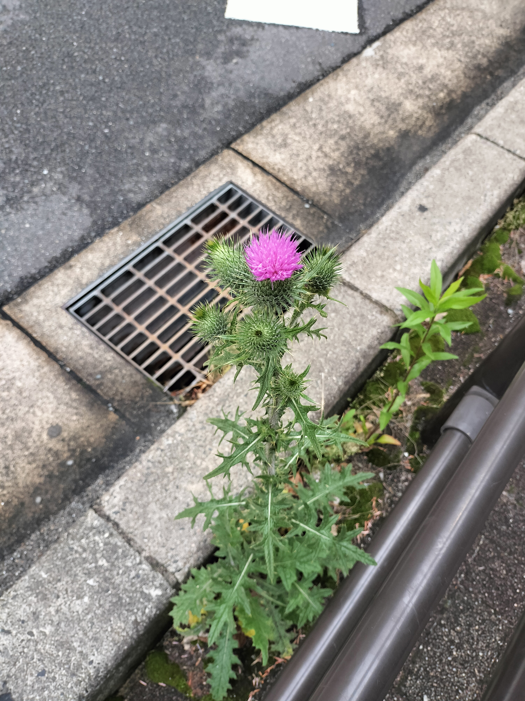
本読んだりアトリエやったり色塗ったりするか
『Binary Hacks Rebooted —低レイヤの世界を探検するテクニック89選』河田 旺,小池 悠生,他
前作のBinary Hacksよりマニアック度はかなり減り、ハックでありつつもそれらを通してコンピュータアーキテクチャを学べる本になっていると感じた。職場の「強い人」が知っているような事柄が明...
#読書メーター
https://bookmeter.com/reviews/127933105
前作のBinary Hacksよりマニアック度はかなり減り、ハックでありつつもそれらを通してコンピュータアーキテクチャを学べる本になっていると感じた。職場の「強い人」が知っているような事柄が明...
#読書メーター
https://bookmeter.com/reviews/127933105
ぬ～
別にそういう意図じゃなかったのに色塗りの段階になってパンツ見える構図になってることに気づき困っている
影いいかんじになってきた、あしたから色ぬろ
みんなずっと怒っている
Binary hacks rebooted 読んでるけどmeltdownすごすぎでしょ。それはそれとしてこの本は攻撃から学ぶコンピューターアーキテクチャとして読める。
また上がった
ねむかっただけかな、ねたらちょっとさがった
微熱、気候についていってないぽい
社内で「社内政治とは」みたいな本を紹介してる人がいるなかで、教育学の「教育現場における能力主義からの脱却」みたいな本読んでるのやる気がなさすぎる
おえかきして、影の概形に納得がいってきた
軽くリングフィットをした
今日もまた悲しい、
なんとなく教育学っぽい本読んでるんどけど、今時は（昔から？）学級をぴしっと一つにまとめる力がないと判断された教員を懲罰的に特別支援学級（昔で言う障害児学級）に異動させるケースがあるらしくホエーとなっている
neren
yaml結構むずかしいのではと思ったけど誰もいってないし簡単なのかもしれん
ギターライフやったらなんかハチャメチャに疲れて寝てしまった
これちゃんと意味論定めないとまずいやつじゃない？そんなことない？
yamlにaliasとanchorというのがあると知り、危険な匂いを感じている
多分興味的には、前にOkumuraさんに教えてもらったとおり、どちらかというとCS的なゲーム理論のほうが近いんだろうなという感じはする。ただ、一応隣接分野として耳学問してた感じCS的なゲーム理論もあまり一般人的な感覚では大したこと分からないんだろうなという気はする。
結構覚書かきたい本多いからそのうちまとめてかきたいな
『ゲーム理論の〈裏口〉入門 ボードゲームで学ぶ戦略的思考法 (KS科学一般書)』野田 俊也
ゲーム理論をゲームに応用したら何がわかるんだろうというある意味邪な動機で読んでみた。全体を通して思ったのが、ゲーム理論で何が分かるかというよりかはむしろ「この程度しか解けないんだろうな」という...
#読書メーター
https://bookmeter.com/reviews/127845252
ゲーム理論をゲームに応用したら何がわかるんだろうというある意味邪な動機で読んでみた。全体を通して思ったのが、ゲーム理論で何が分かるかというよりかはむしろ「この程度しか解けないんだろうな」という...
#読書メーター
https://bookmeter.com/reviews/127845252
フォンノイマン・モルゲンシュテルン効用関数
MTGの「対象」、プログラム書きにとっては引数の雰囲気がある
家でも練習ちょっとしたいが買うかねえ、うーん
ギター教室にいってきた
久々に机がUの字になっている吉野家に入り殺意を感じている
編み物がへたくそなの、どの操作でどこがどうなるかが想像できてない/どこを忘れていいかがわかっていないからな気がする。一回図で分析したほうがよさそう。
社会のためにも、社会から見た自分の評価のためにも何の役にも立たないがやりたいことがほどほどある
ああtwitterをみてしまった
なんかしらんがTwitterが荒れているな、避けよう
ユミアのアトリエ、声優さんの力量なのかガストちゃんのサウンドまわりのエンジニアリング力が上がったかなのかよくわからないが、声がすごく自然に聞こえて感動している
今日は定時じゃぐふふ
なんならアメリカ人でもなかった
なんか異様に太ったアメリカ人が上手なギターを弾く動画どれだっけーとなって探してたんだけどこれだった(そして異様に太っているというほどではなかった) https://www.youtube.com/watch?v=RCGGG9piAGY
もしかしてChatGPTに聞かんで自分でやったほうがはやかったりする…？
ただでさえ仕事で問題解決がしないって苦しんでるのに休日までそれやりたくないというのはあるのかもと思った（さすがに理系というかコード書きなのである程度の問題はまぁ好きなんだけど、休日までやると許容量を超える）
うーん、昼からだけど今日一日かけてWSH→Win上のvmwareの操作がうまくいかんかった…
サンプル以上の作りたいゲームを作る人が出たなあという感じ(まあサンプルっぽいけど、ワンセンテンスAIに投げてできたって煽って終わりじゃない)。こういうのを作るのに1000円で、しかも向こう別に安くならないんだろうなと思うと趣味のゲーム開発もお金の世界になるのかなあ。
winへのopensshのインスコ時間かかっとる
休みだからね
たまには鯖缶をします
爪切りとUSBメモリと体温計、いつもどこいったかわからなくなる
今日会社行ったらなんか息が詰まったんだけど換気できてないんかな
今日は仕事じゃぐふふ
あと諸事情でゲームが書けなくなってしまったのがでかいのかも
プログラム書くの楽しいけど仕事で十分だなあとなってしまった、単に老いたのかも
これの2番目の真似をしようとしてるがむずかしい https://www.youtube.com/watch?v=3-YibTCZtBg
人に何かを習うって久しぶりかもな。大学院は（こちらの問題で）上手に技術を学べなかったし場所だし、学部ぶりぐらいかもしれん。
ギター教室の体験に行き、しばらくやってみることにした
なんか知らないが髪が過去一ふわふわにかけた
今朝こむらがえりしたときは午前休とるところだったが根性で出社した
労働のために来た地方都市だけど結構文化的なのがいいわね
ギター教室をしらべた
MPC細かいことがよくわかっておらず、そのMPCサーバを叩くべきか、どう叩くべきかはLLMが判断するんだろうかとかなっている
なんでこんなんなんだか
ひどいなあ
ClangのCfiの仕組み、わかるようでわからんな。サブタイプどうするんだろうとか、引数の組み合わせいくらでも作れるけどそれに応じて8バイト分類たくさん作るのかとか
とりあえず生きるか
なんか辛くなってきた
ペンタブの芯がまたなくなってきた。どっかに前回かった残りがあるはずなんだけど毎回どこやったか忘れる…
思い出しました。ペンタブの上に紙を置くんでした。
しごおわ
線画わからん
座敷牢は聞いたことあったけど結構最近まであったんだなあ https://ja.wikipedia.org/wiki/%E7%A7%81%E5%AE%85%E7%9B%A3%E7%BD%AE
諦めて遠近のない絵にします
うーん、全身を収めようというのをあとで決めたせいでパースの辻褄があわなくなってしまった、最初からちゃんと設計図をかきましょう
風邪っぽいーと思って早めに上がったがインドカレー食べてたらなんか元気になってきた
まあ微熱だった
体温計、必要なときに限ってみつからない
やめて困ったら入ればいいかという気もしてきた
@yf よさそう！適当な休みにいってみます！
胃の調子がめちゃくちゃ悪い
Amazon Primeやめるかーと思ったけど、非会員の送料無料範囲が3500になっておりウームとなった
最近出掛けられてなかったしでかけるか
どうせ飲むなら良い酒を、じゃないけど、どうせ読むなら良い文章をという感じは最近してきている
PBTって略しても通じるぐらいポピュラーになってきたのか…(3秒ぐらいなんのことだかわからなかった)
うまい蕎麦たべたいなあ
今日は仕事じゃぐふふ
あたまいたい…
めも
いぬ
いぬ
「生きづらさ」って言う言葉結構最近だよなあと思ってたんだけど、真面目に考えたら夏目漱石が「とかくこの世は生きづらい」みたいなこと言ってた気がするし夏目漱石偉いなとなった
普通に休みたいが明日は大事な会議があるでなあ
つまらないなあ
おっさん剣聖みたけど、アニメってこういうのでいいんだよという期待通りな感じだった
給湯器の調子がおかしく、もう一日様子をみてくれといわれたが明日お湯が沸いてないと流石にこまる
リングフィットアドベンチャーをした
あみぐるみもやってみたいしギターもやってみたいし、やったことない易きに流れていくものだねえ。本当は学術とか仕事とかを頑張ったほうがいいんだろうけど。
仕事もやらかした、すべてだめ
傷んでおるって書きたかったのにいるになっちゃった。おのれAI
気候のせいか神経が傷んでいる
バランスボールほしいな
やすみてえ…
なんかしらんがつかれた
今日はもうPC落として本でもよもう。エルデンリングちょっとやって絵をちょっとやっていい時間であった。おやすみ。
ただchatgptと数学の話するのはおもろいし、鯖缶のこと聞けるのも楽なのでそこだけは価値があると思うけど
AIがすごいのはわかったが、そこから「AIの勉強をしろ」はよくわからんしそもそもそれって何をすることなの…？となる（sonnetはどうだとかchatgptはどうだとか言う事なの…？）
時計使うのは面倒でしょうがないとしてもなんで秒単位なんだ…
また思い出しむかつきしている…
半分くらい読んだ
久々に雨で換気ができる
かいものメモ
サランラップ
ハードディスク
サランラップ
ハードディスク
ちょっと凝った作業しようとおもってバックアップとろうとしたが外付けhddが壊れとるな。結構年季はいってるし買い替えるか。
若い時に読みかけで放っておいてた「夜と霧」を読んでいる。まだ2章なんだけど人間ここまでいけるんだよなとなる。現代日本に暮らしてて人間のこういうところは忘れてたので思い出せてよかった。
アマプラが広告つきになってしまった。解約してdアニメストアに戻ろうかしら。
あ、薬屋はもうないのか
先天的VTuberと後天的VTuberがいる(？)
というか切り上げた
しごおわ
ぐう
わしが悪いんか
相手から名刺をもらったらすぐにスリーブに入れてデッキケースの上に置きましょう。このことで、相手の名刺、ひいては相手を大事にしているということを示すことができます。この際、キャラクターもののスリーブはビジネスの場として相応しくありません。特別高級なスリーブである必要はありません。
今日はめずらしくはやく帰ってこれたが、忙しくない分余計なこと考えて具合悪くなってる気がする
心の調子がわるい
本、おもしれー。覇権コンテンツ。
あるいは東京がいかんのかもしれん(適当)
ChatGPTと数学の話するの楽しすぎ
まあでも仕事も大変だし人生も進むと大変なんだろうなあ
Twitter、人が怒ってるのはいいんだけど昔からの知りあいもなんか怒りっぽくて悲しくなった
風邪なのか
花粉なのかと
いうかんじ
クソ俳句として詠んだつもりだったけど一応プロパー俳句と言い張ることもできる気がしてきた
花粉なのかと
いうかんじ
クソ俳句として詠んだつもりだったけど一応プロパー俳句と言い張ることもできる気がしてきた
この本やめようかな、言葉の意味がわからん。ゲーム理論の本もう1冊買って全体的にこんななのか見てみよう。
なんもうまくいかん
ようわからんのでナッシュ均衡やってる間は「事後実現的な予想と『相手がナッシュ均衡になるような選択をするだろう』という予想は同じものだ」と思っておくことにした
なんか腹が立ってきた
Grokに自動車関税のことについて聞いていた
頭がわるくて困っている
あたまいたい、風邪気味気味ってかんじ。
今日は仕事じゃぐふふ
しごおわ
有斐閣、なぜかユウイカクと読んでいた
「みずほ銀行の失敗は他山の石ではない。」っていう文章見たんだけどなんかおかしいような？対岸の火事ではない、とか他山の石にしようとかならわかるんだけど…
急に気温があがって具合がわるい
急に気温があがって具合がわるい
いや前回の反省があるわ。とっとと写真とろう。
手元でちょこっと手の練習してたけどむずいな、どうしよう
「薬にしたくもない」、普通に知らんかった
わかりみ、今数学科にいたら全然ちがっただろうなとおもう
あー、サーモンと春菊よさそうだわね。シーズンだしやってみるか。 https://www.youtube.com/watch?v=V9Kx_MEpc98
あとSwitch版で遊んでるんだけど普通に落ちてガストちゃんを感じた(これだけの凝ったやつをSwitchで出してくれるだけありがとうと思うべきなのかもしれない？) #ユミアのアトリエ
ユミアのアトリエ、かなりRPGをちゃんとしようという本気を感じた。ちゃんとフィールド探索が面白くなっている。 #ユミアのアトリエ
ピーマンを雑に炒めたのとかって外食だと難しいしやっぱり自分で作るのはいいわね
ピーマン、うますぎ
マスクを買いに行くマスクがない
pixiv sketchライブがなんかいいなとなっている。エンタメとかいうわけでもなく他人が作業してるっていうのがいいね。
本当は休日出勤したほうが良かったのかもしれないが、完全に思考停止しているので出たところで無駄だった感はある
ヨッ、エヌビディ屋！
ねなきゃ
たまたま見掛けた配信だけどこういう創意工夫溢れるゲームが出てるっていうのは元ホビーゲームプログラマとして嬉しいわね https://www.youtube.com/watch?v=p6LOTXmkTSI
久々に万年筆つかったらたのしいな
歯医者の予約をしようと起きたがなんかつながらなくて悲しみ
適当なボールペン落書き、あまりに適当すぎてpixivも違うなとなりインスタに放り込んでいる
めも 夢でボスと会った
生成AIを使ったコーディング支援サービス、今こそ安いけどずっと安いんだろうか。多少高くなったとしてもやっぱり人間よりは安いんだろうか。
Binary hacks rebooted、もっとざくざく読んでいくが吉かも
Twitterが壊れていることにmastodonで気づいた。成長している。
思ったより編曲がよかった https://www.youtube.com/watch?v=heNtBqiCwO4
実際AI時代になったらどうしようかなあ。なんか他にできる職業あるじゃろうか。
「いかに物を作らないようにするか」、実際商売やっていく上で大事なのかなあと漠然と思ってたのでやっぱり経営者的にもそうなんだなあ悲しいなあとなった https://news.yahoo.co.jp/articles/3ce5b0613feb791c962df3da857f126e756705c9
便箋書こうと思ったけど家にボールペンしかなかった
六角さんのラジオで聞いたコンピュータ占い、実在していたのか(そして噂通りの仕組みなのか) https://rocketnews24.com/2017/10/25/972018/
LLM系の研究、ちゃんとartifact evaluationできるんだろうか
ねよ
休日なのにちょっとだけコードかいた
Paryiさんでした
Pyariさんの髪の本再入門してみよかなあ
今週出鱈目なものたべすぎて胃の調子がわるい
何かしたかったんだけど何がしたかったんだっけ
無心で幾何学模様描いてた
事実上車がないと生活できないような地域で、交通量が少なく交通事故の危険が少ないところについては地域限定の運転免許証を今の制限より若い人たちにも発行していいんじゃないかなあとか思ってるんだけど、請け負ってくれる保険会社がないかもとも思った
まともになりたいねえ
あれ、ぐぐってみたらイリンクスが私の思ってるのと違う。こんなんだっけ…
ソーシャルゲームのイリンクスとしての側面が気になり始めた。またカイヨワ読みたいな。
たしかにリターンアドレスみればどこから呼ばれたかはわかるよな。そりゃそうだ。
ChatGPTにブレークポイントのこと聞いてる。おもろ。__builtin_return_addressとかしらなかったし。
ptrace、思ったより「これでデバッガ作ってね」感溢れる機能だった
ChatGPTにmprotectとmmapのこと聞いていた(たのしい)
「胡乱」ってそういえばどういう意味だろうな～と思い「こらん」で検索しました…
サークルクラッシャー、ギリギリ数学用語でありそう
なんかYouTubeに疲れたときのNHKラジオの心地良さ(無音もまたよい)
今日はジーンズを買いにいってみた。EDWINの店にいったらなんとなく「お前はこの店じゃねえ」感を出されてしまったのでリーバイスの店にいってみたら親切にしてもらったのでそこで買った
リングフィットをした
なんか歩きたいな
今日めちゃくちゃだめだ
メモ: ベーコンを5分ぐらい炒める、小松菜とにんにくチューブをいれて3分ぐらい炒める、スライスチーズを置いておく。茹であがったスパゲティを入れてちょっと加熱して火をとめる。生卵と味の素をいれてかきまぜておわり。
適当につくったスパゲティがおいしかったのでいい土曜日
10年ぐらい前は「スクロールシューティングは格ゲーと一緒に滅んでいくものなのかなあ」とかぼんやり思っていたが、気がついたら格ゲーのほうは再興していた
どういう事情かはしらないけど、ただでさえゲーセンは苦境なのにa-choは場所が良すぎたという感じがしている。あの場所のために「もっと家賃出すからゲーセンどかしてうちに商売させてくれ」っていう観光客向けのお店はいそう。
この間なんとなくらしんばん行ってみたらVTuberの「ぬい」をみかけたんだけど、あれだけの人数のぬいがかなり立派な品質で、しかも想像の1/4ぐらいの値段で提供されていたので感心してしまった。何か技術革新があったのかしら。
a-choはもう…
薬屋のひとりごと、最新話まで追いついてしまった。学研の科学漫画によさそう。
ぐう
LLMを使いこなすのに「ChatGPT師」みたいなのが出てくるようじゃ折角自然言語インターフェースが提供されて誰でも使えるようになってるのにつまらないじゃんと思ってるんだけど、結局そうなっていくんだろうか
ついでになんとなく高瀬舟を読んでみたくなったのでkindleでダウンロードした
自堕落な三連休であった、一応ちょっと気になってたこと(ギター教室しらべるとか良い便箋かってくるとかUSANについて調べるとか)はできたのでまあよしとするか。
なんとか楽しく暮らしたいねえ
打ちひしがれている
なんかだめになってきた
アドレスサニタイザってGoogleがいいだしたのかえらいな。そして2012年なんだ結構最近だな。 https://engineers.ffri.jp/entry/2024/03/13/000000
カップ大関の甘酒買ってきた(なにそれ)
正二十面体群が単純であることの証明かっこいーと思った覚えがあるのに久々に繙いたらまた忘れていた
うーん
ていうか手癖でかけるもの増やそ
模写でもしよ
Twitter、2011年の震災以降段々おかしくなっていっちゃた気がするんだけど気のせいかもしれない
紅茶いれてハチミツいれちゃお
ぬあー
泥のように寝ていた
なんか異様に眠い、風邪のひきかけかもしれん
YouTubeで5年で絵がうまくなったとかうまくならなかったみたいな動画が出てきてにゃーんとなった
リングフィットをした
https://www.youtube.com/watch?v=xPZXIQdHaZ0
「西へ」は知らなかった。死とか諦めを感じる歌になっている…
「西へ」は知らなかった。死とか諦めを感じる歌になっている…
ゴルギュティオーン、めちゃくちゃ男の子に刺さる名前だな
影がんばってつけてみたけどようわからんのよな、また模写しよう
絵、ここでおわりにするか。わたしの実力だとここまでだ。明日あげよ。
リングフィットをした
今日は久々にいろんなこと忘れて楽しくあそべた。
最近はお出かけするようにしているのでお出かけしてる
なんかだめだな、ねるか
いや一周まわってこれでええか…？
いやーこのポーズかくには力不足かなあ
パースがあわないよ～
ChatGPTに関するブログ記事をこの間なんとなく読んで、「この記事一回ChatGPTに推敲してもらいなよ」と思った
音楽とかバレエとかは「N歳までに始めないと遅い！」みたいなのあるけどプログヤミングは特にそういうのないのでプログラミングは簡単(いまから勉強するのはどうなん感あるけど)
だいふくってさめてもモチモチしてるけどなんでだろなー、でんぷんもβ化して消化に悪いのかなーと思ってたけど、砂糖のおかげでαでんぷんのままにできてるらしい(すごい)
単に寒いのかもしれねえ
なんとなくギターでも習ってみるかという気分だったけど、昔からやってる人でも大変なんだからいまさらやってもなんになる感もある(やって駄目ならやめればいいだけなんだけど)
ここでフォロー/フォロワー関係の人からpixivでフォローされた。正しくお絵描きSNSだ…
神経が駄目になった
まあでもどうせ具合悪くなるならインターネットの醜聞で具合悪くなるより本で具合悪くなるほうがお得そう(？)
なんとか読み終え、そして具合悪くなった
八十岡さんの見てもうちょっと服考えてみるかと思いこれ買ってみたけど具合悪くなってきた https://www.amazon.co.jp/%E3%82%82%E3%81%86%E3%83%9F%E3%82%B9%E3%82%89%E3%81%AA%E3%81%84-%E8%84%B1%E3%82%AA%E3%82%BF%E3%82%AF%E3%83%95%E3%82%A1%E3%83%83%E3%82%B7%E3%83%A7%E3%83%B3%E3%83%90%E3%82%A4%E3%83%96%E3%83%AB-%E4%B9%85%E4%B8%96-ebook/dp/B01CZALA2Y/ref=tmm_kin_swatch_0?_encoding=UTF8&sr=
おさんぽいくか
なんかこういうマイナー絵がふぁぼられるとオッってなる(人気キャラのも楽しいけど) https://www.pixiv.net/artworks/112193523
肩こりがすごかったのでリングフィットをした(継続しましょう)
クリックしてしまった https://www.youtube.com/watch?v=dYhpIR7D224
雪こそ降らないが耳がちぎれそうなぐらい寒い
しごおわ
ぐう
Parikhの定理 - ｼﾞｮｲｼﾞｮｲｼﾞｮｲ https://joisino.hatenablog.com/entry/2017/11/24/200000
ほえー
ほえー
symbolic automatonつかってみたらって言われてこわ～となった
ChatGPTがもう2、3年早く進歩してたらアカデミア残ってた可能性も微レ存って感じだな(たぶんないけど)
ChatGPT o3-high-miniと大学院のときになんとなく考えてたけどまあ学位に向けてやるにはちょっとリスキーすぎたみたいなやつの話をしていて、なんか楽しくなってきた。別に直接圏論って言ったわけでもないのになんか圏論使ってみたらみたいな提案もされてすげえってなった。
よく考えると別にアーベル群でいい
うわーっ
うわ、前できなかった極大イデアルの議論もできてる！
あーっ！できてる！
o3-mini-highが論理得意ぽいのでこっちにきいてみよう
ChatGPT-4oに前より簡単な数学の問題を聞いてみたけどやっぱり準備不足な学部生みたいな感じだったのでとりあえずいまのところは大丈夫ぽい(そのうち記事にする)
薬屋なんか面白そうだけどなんかみていない
リングフィットをした
awsに登録してたクレカの期限が切れてたあぶねえ(切れたところでここが落ちるだけだけど)
よくねた
chatgptが(すくなくとも少し前は)可換環論敵な嘘をつくのはわかっているのでだめそうならまあだめということで
(chatgptの勉強ではない)
ちょっと今日はおべんきょするか。chatgptおもろいらしいのでつかってみよう。
一晩寝てみるとそんなにわるくないな
顔の形がおかしかったなーという感じだがそれはそれとしてなんかのっぺりしとるな
Cubaseと違って落ちないがおもろすぎる
プロがすごいおもちゃ使い込むの好き https://www.youtube.com/watch?v=59lDZeS_gSo
うーん、なんかすごい平面的だ、こまった
今日はバターもちつくってみようかな
Twitterは平常どおりのしょうもなさだった(みてしまった)
コーヒーで稼働していたが限界を迎えている、なんかしたいがつかれた
12時過ぎのシンデレラ倒した！コアなことは省いてライトユーザーとしての意見を書いてみると、首都高バトル0にあった各クルマについてのコメントがディーラー画面で見られるといいなと思いました。車に詳しくないのでどんな評価がその車にされてるのか読むのが好きだったが好きだったで #首都高バトル
ねよかな、眠くて仕方ないわ
すごい落ち込んでたんだけど家事やってせんべいたべたらちょっとよくなった
昔ラボに来たポスドクかなんかの人に被覆空間も知らないんですかって呆れられたんだよな、もはや何も関係ないからどうでもいいんだけど読んでみよかな
リングフィットした
ボールペンで鉛筆デッサンをハッチングつかって模写してみたら、全然似てないけど意外とサマにはなってるのでおもろとなった。クリスタ立ち上げる気合のないときの手慰みに丁度よさそう。
ああ、いらんところ詰めたら随分よくなった
もしかしたら構図が悪いのかもしれねえ
首都高バトル、めちゃめちゃ敵が増えており、アーリーアクセスでここまで遊んでええのかとなっている
線幅を20にしたらちょっといいかんじになった。男性を描いてるというのもあって、細い線だとちょっと違和感があったのかも？
そもそも「機械学習ブームなんかあと3年もすれば終わるだろ」って8年ぐらい前に言ってたので色々センスがない
お寺さんに行った、名物を見て、あとついでにみんながなんか色々穏やかに過ごせるよう祈った（仏のカバー範囲かわからないが）
昔は「生成AI職人なんてものは発達するわけがない。作るのが簡単なら自分で回すだろうし、作るのが大変なら結局手書き絵師にお願いすればいい」と思っていたけど結局発達したのでセンスがなかった
量産型までの道のりは大したことないけど、特殊な絵まで行くと結局すごい大変なのかな
急にYouTubeにおすすめされたけど100人ぐらいみててすごい https://www.youtube.com/watch?v=7jZxyMGxtQU
色ぬったら意外とこれでもいけんのかなあ
うーん、迷い線でよく見えてるって話でもないと思うんだよなあ
なんか線が細すぎる気がする
今日は気になってたお寺さんいってみよかな
vmwareのダウンロード、trade compliance verificationのところで無限ループして進まなかったんだけど郵便番号を3ケタにしたら通った
適当にたまねぎのアチャールぽいもの作ったけどうめえ、カレーのとき作ろ
vmwareのこと調べてたら超漢字の2024年の記事がでてきた http://www.chokanji.com/ckv/vmplayer.html
今日のサバカン: ansibleの練習がしたいのでvmwareをアップデートする。最近vmwareが無償化したらしいので
なんか背景描いたほうがいい気がしてきたな(ねよ)
首都高バトルアーリーアクセスやってみたけどなんとなく走って楽しい！NVIDIAの1000番台なんだけどちゃんと遊べてよかった！
はよねよ
絵、いいかんじになってきた
普通にVTuber好きなので茶化すつもりはないんだけど、最近のVTuberの髪色のデザインはかなり中世ヨーロッパの紋章学に通じるものがあるなと思っている。紋章は戦場で誰だかわかるように図案が被らないようにしなくちゃいけないというモチベがあるので実際似通いそうな気がする。例えばこういうのとか: https://ja.wikipedia.org/wiki/%E3%82%B7%E3%82%A7%E3%83%96%E3%83%AD%E3%83%B3_(%E7%B4%8B%E7%AB%A0%E5%AD%A6)
蛇の目傘みたいなのとか
黒い立派なとんがり帽子でもいいけど、魔女だとその地域性のある布とかも楽しそうだなと思う。織物の魔女帽子とか妄想したことある。
たのしそう
なんか一次でも描きたいものが出てきた（とは言っても街で見たものの二次ではあるが）
PCいよいよ重くなってきたし買い替えてもいいかもなあ、首都高バトルもでるしナイトレインも出るしその辺の推奨スペックにあわせようかなあ。
Grok、自前学習なのね。まあ「2ヶ月学習まわせばできる」ってわかってるなら全然やっていいよね(どのぐらい時間がかかるか、そもそも確実にできるかわからんというのが学習のつらみだと思うので)
統率者かった
なるほど、腕が手に隠れるのか https://x.com/AMIk0824/status/1880999350547194357?t=XQfFcNIiyPtS5d97vUlIoA&s=19
土曜日は美術館いっておもろってなったし、日曜日は髪切ってよく散歩できたしいい休日だった
ただいま
今日はなんかもう駄目なので髪切れたらよしとしよう
今日はもう髪が切れたら良しとしよう
夢見がハチャメチャに悪かった
おでかけたのしかった
なんとなく美術館に来た
VPS移行を見据えてとりあえずpleromaのDBのバックアップとった
ラジオで聞いたけど名曲だった https://www.youtube.com/watch?v=OnwR5r40vCU
ピックがみつからんので親指でやってたら水膨れみたいになった
ギターライフ、結構強く弦おさえないと判定出ないんだけど本物もそんな感じなのかな
親指をちゃんと立体として描いたほうがいいのかもしれないな
なんか気になってたのでamazonのまとめ買いセールでショートケーキケーキをかった https://amzn.asia/d/2lXHAUm
バター餅つくってみようかなあ
ヨガマットかおうかなあ
リングフィットをちょっとだけした
「運動はつらいと思うぐらいまでやらないと効果ないですよ」みたいなことを聞くので、「つらいぐらいまでやらんとゼロと一緒ならゼロでええか」となりがち(あとそう思ってこの間なわとびしていたら膝をやった)
寒いからかなんかむかついてきた(温度あげた)
劇映画孤独のグルメを見ました。松重さんがNHKラジオで語っていたように、1本の映画として完結する作りになっていて、「劇映画」とついているとおり小劇場でやっていそうな完結したお話になっていておおそうなりましたかとなりました。テレビ版とはそういう意味で雰囲気は違うんだけど、なんとなく納得感があって心地良い映画でした。テレビ版がお好きな方はよさそう。出てくる食事に実在感がないためか、この映画についてはお腹はあんまり空きませんでした。
映画、漠然と1500円ぐらいかと思ってたら2000円だった
Aws高いし勉強のためにもさくらかコノハに移行しようかなぁと思っているがいろいろ知識が足りない、勉強せねば
読書、ChatGPTに「これどういう意味？」とか「この文章を読んでこう思った！」とか話しながらやったら楽しかろうなと思う
昔のダイクストラの論文、「線形計画問題を解いたら線形制約が出てくるプログラムの静的検証ができる！」みたいなのがあり、その頃って多分単体法が発明されたころで、その頃研究してたら楽しかったんだろうなーとなる。
年末ジャンボ、組すら当たりそうになく確率のことなにも知らなくても全くワクワクしないんだけど、ハズレのことを重く見すぎなのかもしれない(ロト6とかなら気持ちはわかる)
あまりに目薬をなくすし頻繁に使うわけでもないから衛生面心配だなとおもって使い捨て目薬買った、気分がよい
実家から余っているらしい餅が送られてきたんだけどアンコがいいかなあ
映画でもみにいこうかなあ
なんかねむいし模写もうまくいかない
ねむいけどねたくない、みたいなのがおおい
断熱シートを窓に貼りつけるため切った貼った(？)の大立ち回りをしたところ普通に暑くなった
ポケットティッシュ
はぶらし
てぶくろ
目薬
はぶらし
てぶくろ
目薬
ハンダゴテとか欲しくなるな、使わんけど
窓の断熱材みたいなのないかなと思って久々にホームセンターに来たんだけど、ワクワクしていいわね。まだ無根拠にワクワクできるものがあってよかった。
ソフトウェアエンジニアならぬソフトウェアネクロマンサー
soudemonaika
てってもモルフォちょっと簡略化されすぎなんよな、遊戯王とか模写したほうが実践的かもしれん
やはり手の修行期間にするかあ
手がむずいし手の練習途中でするか
かきたしたら位置の不整合がおきた
顔、いいかんじになってきたのでは
絵、なんか表情がきにいっらん
なんか四時間ぐらい歩いてた
警察官って自転車乗るときヘルメットするのかなー思ってたんだけど、今日見かけた警察官はしていた
すごい人出だ、もう正月も終わりなのに
信心深くないけど明日いろんなことを神社で祈念して、あと年賀状かってこよう
労働地に帰宅した
また漫画も読んでみよかな
家で本の整理してたら昔見てたトリニティセブンが出てきて、今どうなってるんだろうと思ったら30巻以上出ててビビった
ボールペンつかったら線でかくのかなあとおもったけどちゃんと面(value?)でかいてるぽい
軽く散財して満足した
秋葉原に来た。アズールレーンが元気だ。
昔Excelスプレッドシートに対する形式検証の論文読んだ気がするので海外でもExcelは使われてて、しかも検証したくなるほどヘビーに使われてるんだと思っていた
Toshiさんの本、影の付け方が好きだった。帰ったら買うかも めも
多様体上の最適化理論の本、結構商多様体上の話とかしてるのね。最適化のモチベで多様体再入門できたら楽しいかも？
もう労働地に帰ろうかな…
つかれた
スマリヤンのゲーデルパズルのQ78、構造に関する帰納法使わないと示せなくない？A78がやたらあっさりしてるんだけど…(虚空への叫び)
Quineいつかわかりたいと思ってたので一助になりそう
年末は実家でよくわからない処理系の不動点のことを考えていた。実家帰ると学生時代のこと思い出して数学やりたくなるわね
ことよろー
絵は上手くなった、と思う。MTGもリミテは上達したぽいし、同僚にもよくしてもらっている。いいことも報われることもあった。
いろいろひどいことがあった、来年はいい年になるといいな
あってたわ
オリオン座がよく見える
これ不動点の定義あっとんのかな
濃淡でみるの一度やってみたもいいかもなあ https://www.youtube.com/watch?v=lOQ_DnR4Erw
https://www.youtube.com/watch?v=afnDRRV3WX8 音楽でふざけられる人いいなー、わらっている
あーrtainjapanで斑鳩やってたのか
絵、いいかんじになってきた
コーヒーに甘栗、よい
twitterをみてしまった、よくないところだ
逆で、もしかしたらインディーが斑鳩に憧れたのかもしれない(シューティング界隈詳しくないため)
斑鳩確かになんとなくインディー感ある
なんか疲れてるんだけど眠れる感じでもないなあ
手いいかんじになってきたかも？
なんか出身大学院から若干失礼なメールが届いたんだけどなんだこれは
手が一生かけない
いやこれいちから描きなおしたほうがいいな
レンタルとかないのかなとおもったけどやっぱり個人向けに値段かいたりはしてないや
磁気ドライブってそんなするんだー
2017年からしばらくポケモンアニメの主題歌が目指せポケモンマスター20周年版になってたので、少年が4歳ぐらいのときにそれを見ていたとしたら今11歳ぐらいで歌っていてもまあ矛盾はないかなという感じがする
このpdf不具合もかいてあってめちゃおもろいな
5.46ms毎の操作ができないにしても、なんか平均的に勝てるみたいな区間を3クロック分見つけて16ms稼げば、達人ならなんとかなりそうな気もしないでもない…
「スロットは、レバーONタイミング」「12MHzの場合、カウンタ周期は5.46ms」なるほど…
「内蔵ROMが絶対読めないように暗号化等で対策されている」おう…
https://swest.toppers.jp/SWEST24/program/pdfs/s1b_public.pdf
https://swest.toppers.jp/SWEST24/program/pdfs/s1b_public.pdf
パチンコのチップはゼッパチみたいな規則があったような気がするんだけど、能力的に乱数生成器に脆弱性が生まれたりみたいなのってあるのかな
「無理数の無理数乗が有理数となることはあるか？」の有名な証明、ここから人生訓を引きたくなることはちょっとある
ねむいけどしごとするか…
なんなら「中学校でやった『一次方程式を解く』も『割り算』と言えなくもない」というだけで非理系の人には目新しいかもしれないし
たしか割り算の筆算が生まれたのがフィレンツェで商売が盛んだったときとかだった気がするので、割り算だけ人々に普及するのがとんでもなく遅いのよね
現代の割り算って何というのは集合商の話してもいいし、コンピュータ上での割り算の扱いの話してもいいし(Fast Inverse Square Rootなんかもアリかも)、斜体の話するのも面白いかもしれないし(まとまりがないけど)
YouTubeで割り算苦手っていってる配信者のサムネがでてきて、まあ言うて割り算だけで新書一冊書けそうだよなあと思ってみたら一冊はあった。もっと歴史とか現代の割り算とかに触れても面白いと思うのでもう一冊ぐらい出てほしい。
ねむいんごねえ
最近enter the battlefieldはenterに改まったけどE効果になるんだろうか
男性かこうとしてるけどむず
パブリッシャーの梨汁ブシャー感
夢に祖父母が出てきた
つぎなにかこかなー
容疑で現行犯逮捕ってなに
なんからいぶとかいってみようかなあ
同好の士と一緒にみるならありかもねという感じ
にじさんじの歌唱祭ちょっと見てみようかなと思ってたけど思ってたよりずっと高かったので諦めた
受験数学、一応最早面白くないということにしてるんだけど多分内心では面白いと思っていて、ある程度大きくなったけどアンパンマンが実は好きな子みたいになっている可能性がある
インターネットが面白くなくなったとしてどうしましょうかね。最近読書が熱いとは思ってるけど、地域のカルチャースクールとかいってもおもろいのかもしれない。
103億円の壁は物理的に作れそう
泥のように寝ていた
グリザイユ画法で使われてるオーバーレイ、やってることは暗いところをより暗くして明るいところをより明るくすることっぽいので、それで影レイヤーが暗くなるのを防げるっていうならトーンカーブでいいかなあとなってきた
寒いけど手紙だしてくるかー
「ワ―ス 命の値段」ちょっとみたいんよなー
生成AIの学習の防止、CNNが大まかな形を捉えて細かくしていく都合上、突然解像度が違うもの（ドット絵とか）を描き込んでしまうのが有効なのではないかという気がする（すでに指とかはその兆候が現れてる気がするし）
かげつけをした(いいかんじ)
味の素の鍋キューブ、冬はこれでいいやっていうぐらいおいしくて助かってるんですが、今日「2食分作ろ～」と思ったら残りが1個になっており衝撃を受けました。なぜ奇数個入っているのか(というか7個入りなので7人家族以外みんな困りそう)
生活も仕事も辛いねえという感じだけど、後者に関してはまあ労働者階級である以上しょうがないわねえ
小窓用のカーテンの長さが微妙に足りなかった
エティオピア物語、おもろいやんけ
帆がだめなら櫂がある
レターパック
なんかおかしいなとなりアタリひきなおした
買い物めも
もうちょっといいカーテン
たべもの
Cr2032
マスク
もうちょっといいカーテン
たべもの
Cr2032
マスク
買い物行かなきゃなあ
昨日からはじめた下書きいいかんじになってきた(ねよ)
ねるかあ
気分わるくなってきたな
おえかき、なんかシルエットだけかいた
絵はいまのほうがずっとうまくなった
MTGアリーナでめちゃ上位の人にあたって、ぼろぼろに負けたのでtwitterアカウントみつけてggっていったら日本語を勉強しているドイツの人だったらしくなんかフォロー/フォロワーになった(なんだそれ)
あ、エチオピア物語は2024年の新刊だったのか。なんか運命感じるな。
過去の自分なんかびっくりするぐらい面白いんよな、エチオピア物語とかよく見つけたなとなるし。私もう駄目かもしれない。
ドイツいったときのツイート漁ってたんだけど2018年の自分なかなかおもろいやんとなっている(今が大分しょぼくれている) https://x.com/ashiato45/status/959771676056608769
uithubなんてあるのか
自己言及入門を出版する論理学者「これはステマです」
なんかお絵描きソフト立ち上げるのも億劫だしらくがきちょうほしいなあ
髭剃りのパラドックスってちゃんとラッセルのパラドックスの説明になっとるんか？
ある村でたった一人の床屋は、自分で髭を剃らない人全員の髭を剃り、自分で髭を剃る人の髭は剃らない。脱毛するなら、ミュゼ！
ラッセルのパラドックス実際どうやるのかわすれてた
ただの属性以上のものを見出せなかった
認められた騎士ってなんだ？
今日のリュウソンコウさんモジュラー則じゃん！ https://www.youtube.com/watch?v=GCSEQ7z5WAI
これでごはんつくるか。晩御飯つくって散歩したならいい休日だろう
そのうち構築ずみでEDH入門してみたいなあという気がしている。仮にあわなくてもまあ合わないゲーム1本買ったかぐらいだし。みんなでわちゃわちゃするゲームぽいので、ブルームバロウの兎贈呈デッキとか楽しいのかなあとなっている。
気になってた本かった
よく歩いた、いい休日だった
3時間ぐらい歩いたな
SL(2,R)の表現論 (朝倉数学ライブラリー) | 落合 啓之 |本 | 通販 | Amazon
https://www.amazon.co.jp/SL-2-R-%E3%81%AE%E8%A1%A8%E7%8F%BE%E8%AB%96-%E6%9C%9D%E5%80%89%E6%95%B0%E5%AD%A6%E3%83%A9%E3%82%A4%E3%83%96%E3%83%A9%E3%83%AA%E3%83%BC/dp/4254118740
https://www.amazon.co.jp/SL-2-R-%E3%81%AE%E8%A1%A8%E7%8F%BE%E8%AB%96-%E6%9C%9D%E5%80%89%E6%95%B0%E5%AD%A6%E3%83%A9%E3%82%A4%E3%83%96%E3%83%A9%E3%83%AA%E3%83%BC/dp/4254118740
業務的にあまりに動かなさすぎなので徒歩でどっかいくか
o1に質問したとき、なんか「無駄に話が長くて質問に短く答えてくれ」っておもったんだけどよくなったのかしら
とりあえず火宅から出て隣の小屋に移った感じかある
うっかりツイッターみたら今日も酷かった（というかいつもなんとなく傷つきながら見てたわけだけど、外から見ると普通に傷つくから止めときなよとなる）
久々にツイッターみたら広告がすごかった
しごおわ
なんであの動画で鼻を黒く描いても自然なんだろうと考えていたけど、結局光がほぼ正面から当たっていて反射光が顔前面よりは違う方向にいくから暗く見えるということなのかなあと思った。こう考えるとデッサンというのは形をどう表現するかの任意性があって、ある種の現像作業だなあと思った。
久々に人生のこと忘れるほど真面目に仕事したな(いいことなのか悪いことなのか)
なんかやたら辛辣なことをYouTubeで言うイラスト講師がもてはやされてて割と白眼視してたけど、こういう感覚はカリスマ予備校教師みたいなのを通ってきたお陰かもしれないし受験勉強は役立つものだなと思った(？)
コーヒー飲んだらちょっと気分よくなった
コーヒーのんだらすこしおちついた
いまよんでる本なんとなくおわったしマリヤンのゲーデルパズルでも流しよみしようかなあ
なんか新宿駅ライブカメラが流れてきて、東京いいなーってなってたんだけどいざ東京行くとどうでもいいんよなあ
お腹が空いて寒くなって気分が沈む前になんとかする必要がある。晩御飯早めようかな
前から気掛かりだった備蓄用の水をかった
Twitter、しばらく見てないとTwitterからオススメツイートがプッシュされてくるんだという知見を得た
なんか落ち込んでたので二度寝してた
(所得税はいいけど住民税控除がされないのでふるさと納税のかわりにならない認識)
出身大学への寄付、控除の対象にならんかった
qnighyさんのツイートで思い出したんだけど、どうせふるさと納税しないしこのお得パワーを大学への寄付に振り向けるのアリじゃねという気分になってきた
なんかduolingo経由でみんなからメッセージが来てるんだけどこれ本物だろうか
趣味絵描きの交流っていう観点でもmisskeyのほうが（少なくとも今は）好みだわね
まあ究極的には自分で建てる以外ないのでここは残すんだけど、Twitter+ここだったのをMisskey+ここにする感じで
Misskey のおかげで結構twitterやめられてる
ChatGPT、これでちゃんと動くプログラム作ってくれるからすごいなあ
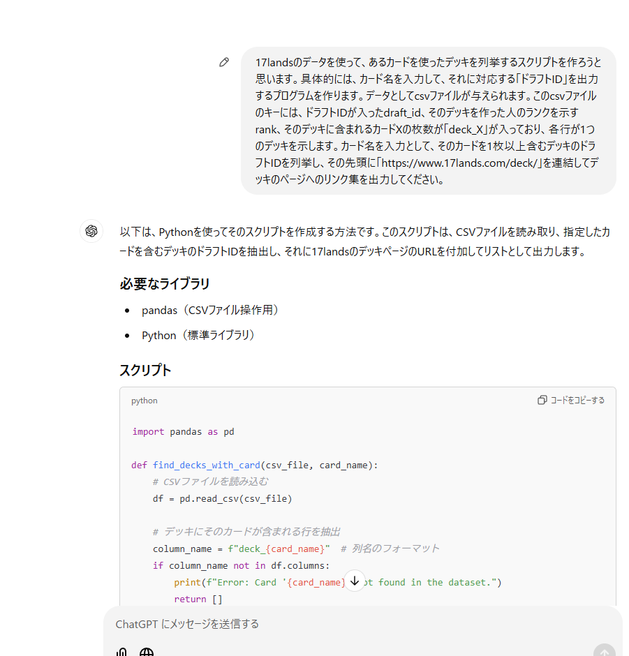
数学そのものが駄目なのかもしれん
まあでも思い返すと自分の頃もTwitterで数学まわりでマウントとったり「そろそろハラスメントですよ」とかしあってたし、学部2、3年のノリってそういうもんかもしれない。本質的にそうなるのかな。ft_mathさんとかいたなとなって検索したら当時のノリがでてきた。 https://blog.goo.ne.jp/kawazu1147/e/e679b1d7f58c9e3dcf3d0644a49eadf9
@psi misskeyはチャンネルシステムで特定の話題に興味がある人は知り合えるようになってるぽいんですけど、そもそも人がいないのでしょうがないぽいです。Blueskyはすでに検索結果の感じで露悪の感じが出ていてもう駄目かもしれない…
楽しかったインターネット数学の思い出、こういう感じ https://ashiato45.hatenablog.jp/entry/2014/12/06/125350
@psi たまにへろっとつぶやいたり、人がやってるのをなんとなく眺めたいみたいな感じなのでむずいんですよね。贅沢なことを言ってるとは思います。
ローカルタイムライン眺めてるけどtwitterと比べて穏かだなあ。なんか毒電波アルゴリズムみたいなものがtwitterにはあるんだろうか。
@psi まあそもそもそういう場所自体そんなにないものだと思うししょうがないです。とりあえず絵とゲームの場として楽しもうと思います。
misskeyの設定画面見たけどAPIまわりがデフォで生えてるのを見て感動するあたりtwitterに毒されている
だし巻き卵がうまく巻けなかったが、それ以前にだしを入れわすれた
だし巻き卵がうまく巻けなかったが、それ以前にだしを入れわすれた
misskey、やっぱり数学/技術系はあんまり盛んじゃないぽい(チャンネルを探してみたけどかなり更新頻度が少なかった)
https://misskey.io/@ashiato45 とりあえずつくった
misskeyの運営の安定性という問題はあったわわけだけど、Twitterも大概なわけで、Twitter+ココするぐらいならmisskey+ココのほうがよくねという説
なんか流速があってtwitterほどの毒がないところを探している（ここぐらいの流速になれろ、昔はそうだっただろという話はある）
とりあえず作ってみるありか
ここからフォローすればいいのか、misskeyの中からやるといいことあるのかな
Mtgの話できるとこいいなーと思ってたけどmisskeyは割と稼働してるしmisskey行くアリだな（結局snsはコミュニティなので）
pixivにリュールの絵を上げると何故か声優さんのタグがつけられており謎
binary hacks rebooted、初代よりめっちゃ読みやすくていいな～(ここから初代に進んだり、「リンカローダ入門」に進んだりするとスムーズそうという印象
一切衆生悉有仏性(ブッダ・ポテンシャル)
向こう1週間ぐらいTwitterは駄目かもしれん
昨日は歯医者に行けたし今日は卵焼きがうまく焼けたしいい週末だった
卵焼きがうまく焼けた
コンピュータの「フック」ってなんでフックっていうんだろう。「すりかえ」みたいな感じがするけど。
なんだか今日は脳が止まった感じがしてとても穏やかだ
おすすめ、イーロンのツイートが多すぎる
歯科検診に行き、茶渋を落としてもらった
ポリ袋に入れた鶏肉に醤油を注いで下味をつける図、果たしてAIに描けるのだろうか
「信頼できない語り手」、正確な意味は知らないんだけどそれを仮定すると語られた文章の情報量0にならん？となり、その仮定を置いてなんか面白いのかと思ってしまう。
大事なメールをかいた
しごおわ
YouTubeにもあったわ https://www.youtube.com/watch?v=H_wiLBovPTs
サラーム海上さんの音楽遊覧飛行の11日分がめちゃよかったんよな。別に音楽詳しくないけどアジア+ジャズみたいなのが好きな人はぜひ。 https://www.nhk.or.jp/radio/ondemand/detail.html?p=2QVV8Q6LV2_01
座右の銘、「理屈と膏薬はどこにでもひっつく」かもしれん
「上がった」というか「上がったロールプレイをしている」なのかもしれんが…
まじでTwitterやめたいな。技術的にもう得るものがない(「上がった」プログラマが偉そうに説教する場になった)。MTGのつながりとイラストのつながり+フォローがTwitter依存だからここが切れればいいんだけど…
風邪のせいかもうねむくなってきた。ねよ。
やっぱりこういう光のあてかたするとデッサン困るんだ… https://www.youtube.com/shorts/goiDOME3ndk
はてなブログに投稿しました
MTGダスクモーンドラフトの上位帯と下位帯のピックを比べてみた - ashiato45の日記 https://ashiato45.hatenablog.jp/entry/2024/11/13/004919
#はてなブログ #MTG
MTGダスクモーンドラフトの上位帯と下位帯のピックを比べてみた - ashiato45の日記 https://ashiato45.hatenablog.jp/entry/2024/11/13/004919
#はてなブログ #MTG
ブログかこかな
ディープステートの陰謀に乗せられているかもしれないが一味唐辛子を冷蔵庫に入れた
シンナーと除光液って違うん？って思ってしらべたけど除光液は爪をいためないための工夫があるらしい。
助かりたい
本当にむかつくなあ
お、binary hacks rebooted、rrの話してるんだ
薬ごくごくごく
適当に開いたらポーランド記法っていっててリスナーもわかってて笑う https://www.youtube.com/watch?v=dvyZsLETsEU
体感体調自体はよくなってきた
ファインマン電磁気学とか読んだらおもろいのかもな、今更読んでなにになるのとは思うけど
電気、高校物理の机上の知識だけで現実とはかなり遊離してるんだよな(大学で電磁気もやったけどただの数学としてやっていた)
咳どめ効いてるなー
もう部屋が暑いのか体調がおかしいのか体温計がおかしいのかなんなのかよくわからん
やはり水銀温度計しかないか…
明日はいけるかなあ
@psi 体温計の取説にこうかいてあって、さっき見つけた昔の体温計つかったらまあ平熱かっていう温度でてきた。
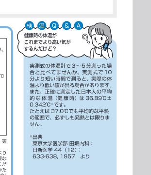
微熱かとおもってたけどもしかして体温計の傾向か…？
耳鼻科で処置してもらったら随分楽になったな。あとは熱がさがってくれれば…
熱下がってきた…？って思ったけど土曜夜もこんな感じだったのよな
耳鼻科、すごい人だ
土曜日にもう直るだろうって思ったんだけどなあ
なんか最近ずっと体温高いなぁと思ってて、太ったからだと思ってたけどずっと具合悪かったのかなあ
1週間ぐらい休みたい…
何もかもだめ
めっちゃ寝てるんだけどなあ
うーん、事によっては明日午前休とるかあ
あたまいた
だるい、熱は下がってきた
37.7、うーん。
「自分の機嫌は自分で取れ」、本当にどういう意味かわからないんだよなあ。昔からある言葉ではないと思うんだけど誰が言い始めたんだろう。
解熱剤いれてこの熱かー
風邪は引いてるがお腹はすく
加湿器思ったよりたけえ
三菱重工の加湿器っていうのがあった(なにそれ)
普通の風邪でした。とりあえずヨドバシエクスプレスで加湿器を買います
発熱もしたので耳鼻科予約した
よぼよぼ
喉痛いのこわいなあ。コロナかなあ。
メモ 引き落とし調べる
気絶というのは例えでめちゃ眠くなったということです
在宅残業を少しして終わったら気絶してしまっていた
今日もツイッターが荒れておる（撤退）
リングフィットできてない
ほえー、PGOって2019年のMetaの結果なんか。おもろー。
そろそろbinary hacks rebootedよむか
『現代語訳 蜻蛉日記 (岩波現代文庫)』
普通に現代語でも格調高ぎてちゃんとわかっていない気もするのだが、道綱が母親のヒステリーに付きあわされて山に連れていかれたように見えなんだかそこが可哀想だった。うわさの「あまがえる」の元ネタが確...
#読書メーター https://x.com/ashiato45/status/1853796528953123172
普通に現代語でも格調高ぎてちゃんとわかっていない気もするのだが、道綱が母親のヒステリーに付きあわされて山に連れていかれたように見えなんだかそこが可哀想だった。うわさの「あまがえる」の元ネタが確...
#読書メーター https://x.com/ashiato45/status/1853796528953123172
『「家庭」の誕生 ――理想と現実の歴史を追う (ちくま新書 １７６０)』本多 真隆
日本に「家庭」(「家族」ではない！)が導入されて、それがどういう思いを託されて概念として変化していったかを小説等の資料とともに追い掛けていく。そもそも「家庭」があ...
#読書メーター https://x.com/ashiato45/status/1853793627350462516
日本に「家庭」(「家族」ではない！)が導入されて、それがどういう思いを託されて概念として変化していったかを小説等の資料とともに追い掛けていく。そもそも「家庭」があ...
#読書メーター https://x.com/ashiato45/status/1853793627350462516
『体育がきらい (ちくまプリマー新書 ４３７)』坂本 拓弥
そもそも体育で何がしたかったのか、どうして今の体育になったのか、体育の先生はなんでああなのか、あるべき体育はどんななのか、などについて歴史やデータを踏まえて議論してくれる。体育ってな...
#読書メーター https://x.com/ashiato45/status/1853791567271907776
そもそも体育で何がしたかったのか、どうして今の体育になったのか、体育の先生はなんでああなのか、あるべき体育はどんななのか、などについて歴史やデータを踏まえて議論してくれる。体育ってな...
#読書メーター https://x.com/ashiato45/status/1853791567271907776
本よみおわった、ねる
ああtwitter見ちゃった
とりあえずtwitter閉じた
皆の立派な生活を見て辛くなってきた
生姜湯、てきとーにつくってもうまいな
生姜湯をつくった
今日行ったカフェがコーヒーおかわり出来て、せっかくならと2杯飲んだら普通に酔った。ちゃんとしたコーヒーは効くわね…
空飛ぶ車、もしかしたら将来道路の維持ができなくなっちゃった地方とかで役にたったりするんだろうかとも思ったりする
服に苦手ありすぎるしこれを漢字の練習みたいにやっちゃったほうがいいかもしれん https://www.youtube.com/watch?v=wPz1RVsPCu8&t=959s
Buddha candidate
線のひきかたかえたほうがいいのかなあ。腕からうごかしたほうがいいとはよく聞くが
遠出をしようというときはちゃんと空気をいれましょう
自転車屋の徒歩圏内でよかった
自転車パンクした
あまりに実力者すぎて流石に気になっている https://www.youtube.com/watch?v=cjH3RjPaQeA
あまりにいい天気だな。本だけもってあてもなく出掛けるか
依存性解決こそLLMがやってくれよと思う今日このごろ
今日は私の調子がだめだなと思いtwitterを閉じた（えらい）
数学の質問は相変らず頓珍漢なこと返してくると思ってるんだけど( https://ashiato45.hatenablog.jp/entry/2023/03/20/205100 )、Twitterだともう数学できるっていってる人とか並の院生ぐらいあるって言ってる人もおり謎
スーパーユーザーじゃねえ、パワーユーザーだわ
スーパーユーザーっていう言葉久々に思い出した
そのうち精度あがるのかしら(だとしてその生成AIスーパーユーザーのすごさではないけど)
だとしたら大変なことだなあ。欲しいものが永遠に出てこない可能性もあるのか…(「欲しいもの」の枠がある程度広い、「なんか絵がほしい」ぐらいならよくて、そういういらすとや的需要はまああるだろうけど)
商業的には生成AI+旧来のスペシャリストみたいなのが一番効率良くなるんだろうけど(倫理とか無視すれば)
使うのに専門技能が必要っていう時点で生成AIテクニックみたいなのあんまり興味ないんよな。簡単にすごいことができるならすごいけど、そうじゃないなら結局いままでのスペシャリストでええやんみたいな。
でかいぬいぐるみほしいな、どう手入れするのか、どう引っ越すのかもしらんけど…
長方形、rectangleに倣って直角形とかでよかったんじゃないか(矩形は漢字がむずかしいし)
高度の平凡性
まだいいかなと思いつつなんか忙しくなりそうだしいまのうち髪切るか
そういえばこれやりたい https://github.com/srush/GPU-Puzzles
何が美術的に正しいのかは知らんけど、イラスト的な口とか鼻とか「どんな形を描いたら何を描いたことになるのか」みたいなのを意識して他人の絵を見るようにしたらいい感じになってきたような気がする。ある種の意味論？
@psi なんかそんな気もしつつも、今回は写真でやっただけだから、という気もする…？実際カルチャースクール(お茶の水とかでやってる)に行って聞いてみるといいのかもですねえ。
上の素人っぽさがすごいのですごい。あと、「影の面」っていってるけど実際にあるわけじゃなくて概念的につけてるような気がする？ https://www.youtube.com/shorts/riNP-AZSswQ
おはよ
会社のホワイトボードに謎のキャラが書かれており、そのビジュアルから勝手に「線形論理マン」と命名したが、描いた人のお子さんのオリジナルキャラクターだったらしい。申し訳ないことをした。
RTした数理のテキストリストみてたんだけど、こんなオンラインの代数幾何テキスト出てたのね https://uio.no/studier/emner/
あれ、連休か。
@sptr 知覚過敏ですかね…？
リングフィットをした
絵日記をなげたらいい絵日記をみつけられた、めずらしく善のTwitter
エレベーターでよく考えること https://x.com/ashiato45/status/1851923538468536488
あした絵あげよ
なんか気分が落ち込むんだけどもしかして暖房入れたほうがいい？
#X終活 なるタグができとる
リングフィットをした
このむきからみた髪型わからん(ねる)
百万年ぶりにリングフィットしたけどめちゃくちゃひ弱になってた
選挙に行かない人って放っておいても望み通りになるマジョリティが多いのかなと思っていたけど、今回は投票率が低くてかつマジョリティだったところが削れてるので、選挙に行かない人は単に興味がないだけなのかなとなってきた
あれ、このマシンオーディオインプットないのかな
このマシンストレージの空きスロットあったかなあ
あと実は最近はvulkanにもprintfがある https://docs.vulkan.org/samples/latest/samples/extensions/shader_debugprintf/README.html
imgui参加してみようと思ったこともあるんだけど、あれは割と主催者(？)個人のプロジェクトがたまたま公開されているだけという印象だったのでやってもおたがいにあんまりハッピーじゃない感じがした(てきとう)
renderdocのOSS参加してみたら楽しかったりするのかしら
@psi renderdocで狙った不具合のおきたフレームをうまくキャプチャできない(1フレームキャプチャするのにちょっと時間がかかるので動画を録画するほど気軽にはできない)こともあるので、例えばそういうときとかは色で出すみたいな手段を使うこともあるかもです(うまい人はもっとうまくやるのかも)
@psi renderdocは描画がおかしいときにどう行列が変換されたかとか、どういう順番で描画されたかとかを見るのに定番ですね。もしかしたらそういう機能もあるのかもしれませんが、先のWorkGraphみたいな普通のプログラミングみたいな処理がGPU側に来るケースが多そうなので、そういうのも対応してるのかな～(対応されるのかな～)という感じでした。
GPU処理がここまで複雑になると本当にGPU用のデバッグ技術が大事になりそうだけどなんかあるのかしら
https://sites.google.com/site/monshonosuana/directx%E3%81%AE%E8%A9%B1/directx%E3%81%AE%E8%A9%B1-%E7%AC%AC197%E5%9B%9E へー、GPUだけで命令発行までやっちゃうWork Graphっていうのがあって、それでLOD選択までやっちゃうんだーとなった(そのぐらいの粒度
うわあ
投票所いったけど蚊がすごかった
依存関係よくわからなくなるけど全部グラフでやるのしんどいし、ノードベースとプログラムのあいのこぐらいがいいような気がしつつある
裁判官のあれ、一応無断マイニングのやつ確認しとくかとなったけどもともと全員一致だった
トヨタシステムズ、はじめてしった(YouTubeでAtCoderの解説動画がながれてきて始めてしった)(TRIADとかいろいろあってわからん)
惰眠を貪った(充実)
GとDを交互におさえていた
絵、これで完成にするか
@qnighy カードキャプターさくら見てるのでok
グランツーリスモ7、あまりに適当にやったためかついにコーナリングで横転した(横転するレースゲームはじめて)
いろいろ直していこうと思っているので～してみるといいよとか、～やめたほうがいいよとかあったら教えてください
今日が誕生日でした。生活が破滅しておりセルフケア含めいろいろ破綻していたのですが、徐々に立て直しているので引き続き回復の一年にしたいです。とりあえず歯医者に行ったり服を買ったりします。気になってた趣味もしたりします。よろしくお願いします。
ねよ、かぜっぽいし…
熱、あがりもしないがさがりもしない
微熱ぽい？
また今日も毛糸を無駄にした(ねる)
ギターライフ、ためしに楽曲もぐってみたらGがむずすぎてわろた。音楽やってた人がなめらかに格ゲーくるのも頷けた。
ギターライフ、ためしに楽曲もぐってみたらGがむずすぎてわろた。音楽やってた人がなめらかに格ゲーくるのも頷けた。
えるしっているか
和菓子屋のプリンはうまい
和菓子屋のプリンはうまい
円匙、はじめてしった
へー、blueskyって自鯖でホストできるんだ
秋の良い日に大学生ぐらいの二人組がコンビニのすぐ近くの遊歩道的なところで立ったままカップ麺をすすっていてなんか絵になっていた
110円！！！
普通郵便の値段がわからん
bluesky別にいいと思ってないんだけど絵師が行くなら行くか感もある(結局ユーザーがいるかが正義なので)
ひどいなあ
しんどいなあ
もやもやしている
ただいマスティコア
discordサーバー1個でいままで個人サイトがやってきた大方のことは済むのではなかろうか
MTGとか数学とかのdiscordを見るに、discordに皆が1つずつサーバーを持って、大規模なところにたむろし、たまに個人のところにも皆遊びにいって、ぐらいが丁度良いのかな～という感じがしてきた。ある意味皆が個人サイト+掲示板を持っていた頃に近いのやもしれぬ。(discordがいつまでこのほんわかムードを保たせてくれるかという問題はあるがまあ居させてくれる限り居させてもらおう)
みえました～
@psi みえた！ありがとうございます！
設定をかえてみました。どなたかリプライくだだいませんか？
わかったわ。もともと/inboxへのアクセスだけを弾いてたんだけど、今回のスパムは/users/ashiato45/inboxにやってるんだ。
まあでも飛んできてるのkitsui.lifeっていうところだけだしここ塞げばおわりか…？
のかなあ
ヘッダの偽装してるのなああ
user-agentみてみるべきか
nginxの設定みなおしてるんだけどホワイトリストはかいてあった。/inboxへの要求を弾けばいいと思うんだけどちがうんかなあ
なんかよくわからんがtwitterからこっちへの誘導をした
生活が落ちついてきたので久々に弁当を作った。可能な範囲で丁寧な生活をしていく。
グランツーリスモ7、適当に走ってるだけでなんか気晴らしになってよい。癒し効果がある。教習所行きはじめたあたりから危ないからレースゲームやめようと思ってやめてたんだけど、どうせ運転してないしいいかという気分になってきた。
『彼岸過迄 (新潮文庫)』夏目 漱石
二人のまったくどうしようもない関係が本当にどうしようもなく、よくこんなどうしようもない状況が描けるものだと感心し、またどうしようもなさがしみいってしまった。文章は軽妙であまり辛抱強くない私でも...
#読書メーター
https://bookmeter.com/reviews/123672138
二人のまったくどうしようもない関係が本当にどうしようもなく、よくこんなどうしようもない状況が描けるものだと感心し、またどうしようもなさがしみいってしまった。文章は軽妙であまり辛抱強くない私でも...
#読書メーター
https://bookmeter.com/reviews/123672138
グランツーリスモ7ちょっとよさそうだなあとおもっている
労働地に帰宅した
EDHでボス的に振る舞ってみんなに倒されたいっていうのを見たけど、それな最初からTRPGのGM的に強いデッキを持ってきた一人をみんなで倒すみたいな遊び方があっても良さそう
会社から名刺もらってないので職質されたとき困る
編み物、はじめて3段目までいった。針をちゃんとしたの(600円)に買い替えてよかった。
夢の中で「眠いよー」って言ったら「わかるー」って言ってもらえた
「未覚池塘春草夢」 https://magazine.msz.co.jp/series/mangekyo/1/ 読んだ。少年老いやすく学成り難し、の続きをコンテキストを考えて読むとどうなるか？
東京に来た。落ち着き。
フェルちゃんえるさんいいなあ https://www.youtube.com/watch?v=_T9BxSwtEjA
リプライ、nginxレベルでホワイトリスト方式にしたはずなんじゃがなぜスパムが…
ひどいなあ
リファレンスが間に合ってないだけとかそういうのではないの…？
予備の毛糸かっておけばよかった
「初心者向け」って書いてあってこれが出てをお出しされて盛り上がる人そう多くはないぞ
解説動画もあまりに高度で爆笑している
見たい動画をYouTubeで見るのはいいとして、見たい動画をYouTubeで探すのはやめたほうがいいかもしれないと思い始めた今日このごろ
「職場の人間はあくまで仕事での関係なんだからそんな仲良くなるもんじゃないよ」みたいなの、労働者の団結を妨げたいブルジョワジーの陰謀だから気をつけたほうがいいよ(てきとう)
説明書がめちゃくちゃ簡素でハードモードな予感がしてきている(燃えてきた)
めしつくろ
パタヘネ一応よんだけど実のところバスって何かよくわかってない
めしつくるとかね
無線ペンタブ、エントリーモデルでも意外と値段張ったのでこの15年選手と当分歩もうとなった
ユザワヤたのしいなー
新規性がないとものづくりとして意味がないみたいなのにとらわれてたけど、なんかこういうおりがみ的なものづくりに立ち戻ろうかなとなってきた https://x.com/ashiato45/status/1842843361537130769
推しぬい、公式グッズはもちろんあるんだろうけど、手作りっていう資本主義から外れたところでの「推し」が承認されてるのなんかいいなとなった
ユザワヤに行ったら推しぬいグッズが展開されていて、「はーこういうパーツでできてるんだー」となったりしていた
ペンタブのケーブルが弱ってるなーと思うが、microUSBケーブルあんまり種類ないわねー。端子がいい感じに小さいのが見つからない。
ユザワヤにいったがポリエステルスエードというのが見つからなかった
PS2のアーキは相当へんてこと聞くけどよく知らない
PS2のアーキは相当へんてこと聞くけどよく知らない
説明責任と結果責任ってあるけど、どちらを採用するかでなんで判断が食い違うんだ？というのは真面目に考えるとちょっとある
歳ばかりとった
まずうちCDドライブあったっけ
https://www.youtube.com/watch?v=bSxXw6yccyQ
この曲いいなあと思って購入方法を調べたら会社にメールして銀行振込すると郵便で届くというあまりに古風な通販でびびった
この曲いいなあと思って購入方法を調べたら会社にメールして銀行振込すると郵便で届くというあまりに古風な通販でびびった
軽く色のせてみたんだけど顔がかわいくなくて困った
twitterこわれた？
SNSで苦しむの、本当に家宅の人感ある
おきるか、のっしのっし
お絵描き、達成感はあるけど難しすぎて没頭はできないのよな。キツいタイプのデバッグ感がある。
とりあえずご飯食べるか
なんかむかついてきた
ビルゲイツみたいな眼鏡かった
経営者意識を身に付けた社員「こんな儲からない商売やめたらどうですか」
neruka
とりあえずパースはあってきた(箱をちゃんとかいた)。あとはちゃんと資料をみよう
メモ
蓋を探す
蓋を探す
ダスクモーンプレリ、2-1でした。昂揚条件意識しながら戦うのむずかし～ #mtgjp
適当に入ったつけ麺屋の並が結構多く、もう歳なので残すことを覚えた（フードロス的には申し訳ない）
「シュミレーション(シミュレーション)」の次世代、「フューチャー(フィーチャー)」かもしれない。日本人は「ュ」に弱い。
ワイヤレスのペンタブほしいな。もうこれ15年ぐらい使ってるしええやろ。
引越しのときに棚が嵩張るの嫌だしもう段ボールで作りて～となっている
ネット回線が直るまでの繋ぎで使い捨てsimでテザリングやってるけどいまいちなので大人しくレンタルルータ借りるか…
普通の数学できないのに圏論やるの、動くコードかけないのにデザインパターンやるようなものなのかもしれないな（てきとう）
ねるか、つかっれた
といいつつちょっと出てくるか…
疲れてるな、今日余計なことすると怪我するわ
なんかいろんなことしたくなってきたな
フィギュアの広告がよかったのでRTしたら気持ち悪い広告が出づらくなったし、SNSの広告としてこれで正しい気がする
最近また不安定だなあ。こっちへの誘導またやるか。
twitterこわれたぽい
なんかTLがすごい邪悪になってきてしまっている、なんか楽しい話せんといかんのかアルゴリズムが変わったのか
いろんなことを失敗しており、失敗したことをどう人々に責められるんだろうなあとずっと考えながら生きている
実装の継承はあんまりいいことないけど、抽象関数だけを使った実装は抽象クラスの方にも許してほしい気持ち
過去未来形なんてあるんだ…
LLM、理路整然感(感！)はどんどん向上してるけどネックがずっと改善されていない感じがあり、もう一段ブレイクスルーは必要そう(SAT/SMTとか強いMS研がやったりせんかなあと思ったけど、あそこ確か大量解雇してた気がするしウーム)
サンドイッチ作る動画を見てたんだけど、アメリカの人にとってバターを塗ってないパンというのは炊いてない米みたいなものなのかもしれないと思った(？)
見た目がすごい
ハムマーマレードとパセリサンド レシピ 小堀 紀代美さん ｜みんなのきょうの料理
https://www.kyounoryouri.jp/recipe/21507_%E3%83%8F%E3%83%A0%E3%83%9E%E3%83%BC%E3%83%9E%E3%83%AC%E3%83%BC%E3%83%89%E3%81%A8%E3%83%91%E3%82%BB%E3%83%AA%E3%82%B5%E3%83%B3%E3%83%89.html
ハムマーマレードとパセリサンド レシピ 小堀 紀代美さん ｜みんなのきょうの料理
https://www.kyounoryouri.jp/recipe/21507_%E3%83%8F%E3%83%A0%E3%83%9E%E3%83%BC%E3%83%9E%E3%83%AC%E3%83%BC%E3%83%89%E3%81%A8%E3%83%91%E3%82%BB%E3%83%AA%E3%82%B5%E3%83%B3%E3%83%89.html
なんかつらくなったけどなんでつらくなったのかを考えたらなんとかなるタイプのやつだった
人間若手の会
最近結構NHKラジオ聞いてるんだけど、いつもあずさ2号がどうのとかキャッツアイがどうのみたいな曲が流れてる感じがあるので、70年代からとかでも現代に残る曲ってほんの一握りなんだなあとなる
株式会社株式会社（前株か後株か気にしなくていい）
チャンネル登録者まだ120人ぐらいなので先駆者になるかと思い登録した(音がいい) https://www.youtube.com/watch?v=-u7isptQs8w
モナド復習しよかなあ(圏論的なモナドの定義はわかるけどreader monadをわすれた)
エリッククラプトンのChange the Worldてなんていってうんだろうな
ちょっと元気になった
ホットタオル目に当てたらちょっと良くなった
信越化学工業ってどこにあるんだろーって調べたら丸の内だった
twitterこわれた
朋あり遠方より来る、また楽しからずや
やすんだらよくなってきた…
え、将棋の成るって敵陣から出たときでもできるの、しらなかった
なんかすごい騙し絵みたいになっちゃうなー(ねる)
なんかおかしいなーと思ってたらレイピアの手をガードするところと柄の向きがちぐはぐだった
頭のなかで勝手に敵を作って勝手にキレていた、だめだ
うーん、React、「頭がいい人のための」系の匂いがする…あんまりメンバーの粒がそろってないところでは使いにくそう…(あるいは1人でやるか…)
ねむねむ
あとは「reactを学ぶ」を流しよみして頭に目次作ればなんかつくれそう。
useContext、要するにグローバル変数と理解した(雑)
昔ツクールRPGの謎解きで素数番のスイッチだけをオンにするっていうのがあったんだけど、作者が1を素数だと勘違いしてたせいで訳わからんことになってたやつがあった(作品はいい作品でした)
まどをあけるときもちがよい
boolのメンバ変数を定義するとき、「それ、本当にboolでいいんですか？一旦2個しかないEnum定義しておいたほうがいいんじゃないですか？」と囁いてくれる妖精が必要
React、ちょっと使う分にはいいかもだけどReactのパフォーマンスチューニングとかいう話になってくると大変そう？
かなしい
ねみー、眠すぎてネミー・ポッターと不調の騎士団になった
競プロとか詰将棋とかやると頭わるいなーということをちゃんと思い出せてよい
嫌いボタン、「ぶらっくふぁぼったー」じゃんって思ったけどググってもほとんど情報がなく私の中だけの幻想だったのかもしれねえとなっている（まあ10年近く前の話だし…）
「狂乱痴気」っていう言葉あったっけっておもってぐぐったけどなかった。
ペン忘れた
憂鬱だったので外に出てモスで本を読む。正二十面体群が単純であることを納得した。
フルコンタクト数学
知識のミニマリスト
shrimpとshrinkって関係あるのかな
もっと太い線とか塗り潰したブロックからラフをはじめるといいのかなあ
オープンワールドゲームが面白いかどうか、地図を読むのが面白いかどうかと大体同値だと思っている(そんなに数遊んだわけじゃないけど)
今更なんだけどクリスタってCキーで透明と色交換できるのね
カジュアル数学はいいね
気になってた行列計算して気持ち良くなってた
ちょっともちなおしてきた
人生こんなになっちゃったなあと言う感じだけどこれでもベストは尽くしてるんだよなあ
鏡のマジョリティアはじめた
全然中身しらないけど松平コントロールは字面がおもろすぎる https://www.youtube.com/watch?v=rtEzuXdHCxQ
(^ー^)
夏ばてかなあ
うーん、ちゃんと静物デッサンとかやったほうがいいのかなあ。物と物の干渉がわからん…
暑中見舞返さねばと思って葉書買ってきて満足してしまった、書かねば
昔の東京って硫化水素の匂いとかけっこうあったし、男子トイレとか謎の黄色いボールの匂いで上書きしてなんとかしたりしてたのが、最近は柔軟剤の匂いが迷惑だ云々っていう話になってきてるの、現代人の鼻が繊細（脆弱？）になってきてるのかなあ
まあこの世の全てが自分の思い通りになると思ってないと起業なんてできないよなあ（てきとう）
肌よわくなったんかなあ。床屋でやってもらったんだけどうっすら血がでている。
Twitter不具合ときいて(がばっ)
線の質が毎日違う、こまった
「郵便為替で現金送れ」はそれ現金ではない
明日だめかもしれん
『客観性の落とし穴』｜感想・レビュー・試し読み https://bookmeter.com/books/21265911 #bookmeter @bookmeterより (読んだのは半年ぐらい前です)社会の問題に注目するときに、統計的/全体的なものだけではなく、個人の個別の語り、ストーリーを見落してはいけないということを具体的な例を引いて示していた本だっ
「債権を売買できる」っていうのがいろんなものを不安定にしてるのでは？と思ったんだけど売買できないとやっぱり困るのかな
軍服の描き方みたいな本見ればいいのかな。装飾の権化みたいな服だし。
「昔ヨドバシで買ったあの日傘めちゃ良かったんだけどメーカーが思い出せない～」となってたんだけどヨドバシの会員の購入履歴から辿れてゼロアンドというブランドだとわかり再び注文できてよかった。
貧弱…
なわとびしようとしたら膝が痛かったのでストレッチにした
大人しくデッサン人形を使ったほうがいい説あるな
絵、ととのってきたけど拡大縮小/平行ゆがみをめちゃくちゃ駆使しており、そのためにめちゃ時間もかかってるのでなしで描けるようになりてーとなっている(どうやるの)
むずかしい服わかんないよー
今に全然関係ない、でもいいんだけど、「今の人にうけようとしてない」みたいな感じかも？
古典とか古い番組みたいなのが好きなの、言葉遣いとかもあるんだろうけど、今と全然関係ないからなんだろうなあ
暴れん坊将軍おもろかったな
なるほど1話か
え、公式であがってるの https://www.youtube.com/watch?v=aJhmV_Bdne4
いつもより野放図な生活をしている
なんかめちゃくちゃ2Dスクロールシューティング(縦横はわからん)がやりたくなる曲でめちゃ良い。東方で例えるなら4面ぐらいの… https://www.youtube.com/watch?v=V9l4nWDFQC4
身体の厚みかんがえてないからかな。ねよう。
正面顔で練習してたものに付け加えて絵にしようとしているけど平面的になってこまった(それはそう)
ダークパターンって言葉だけ聞くけど何って思って調べたけど、なんとなくお祭りの紐引くクジみたいだなと思った(大雑把)
東京駅の丸善で平積みしてあったからちょっと立ち読みしたけど、体型にあう服の選びかたとかハンカチの拾いかたとかやっていた。女子だと特にそういうのを合わせないと生きづらいんだろうし、それが明文化されてると救われるという人も多いだろうなあと思った。
メールをかいた(えらい)
まあAndroidだし究極的には自分で改造しろという話なんだけど…
Oppo、OTG接続を常時有効化できないのなんとかならんかな…いざというときマウス操作できないの怖いんじゃが…
夏ならとうもろこしもアリか
おやつとしてきゅうりとか枝豆とかを試しててどっちもおいしいんだけど、枝豆は常にたかいしきゅうりも常には安くないしでなにかいいのないかなあとなっている
駅から会社にぞろぞろ社員が歩いていく様を見ると、社長の立場になったら全社週5出社やめられるわけないよなあと思う
Pleroma、IRCなんだ(いいね)
がんばってなわとびしたら幾分よくなった
こういう感じでブログ感覚で動画あげられるのよい(エルデンリングDLCクリアした) https://www.youtube.com/watch?v=beyfU4q4mic
わいも新札欲しいなー。新50ポンド紙幣。
なんかを持っている絵をかいているわたし「こういう時もう片方の手って何してるんだっけ…」
なわとびをした
黒に「打ち消されない」がつくのわけわからんなと思ってたけど、破壊呪文にそれをつけることで「黒は破壊が得意」っていうのを復活させる気なのかな… #mtgjp
かくべきメールをかいた
クッキークリッカーランクマッチ
労働地に這う這うの体で帰還した
Read copy update、知らんかった
労働地に戻れねえ
なんかだめでずっとついったーしてる
なんでおすすめタブにイーロンがやたら出てくるんだろうと思ったけどまあアパホテルみたいなもんかと納得した
なんかもう駄目なのでぬいぐるみを歩かせて遊んでいる
arXivに論文が出た
編み込みの描きかたしらべるかあ
カード整理をしてたらアクロゾスと肉体食らいが出てきた。ラクドスミッドレンジに入れようかしら。
今日は晴れる屋大阪でスタン2回出たけど、0-3と1-2でした。初陣でとりあえず1勝はできてよかったが紙の難しさもあるわね…もうちょっと内容に集中できるように慣れていきたい #mtgjp
なぜ大学に行くのかというと、暇になったときのために「大学でやり残したこと」を作るためです(？)
カバンのチャック壊れちゃった。修理できるかな
別に金持ちが生成AIに金使ってもどうでもええやろ、他に良い使い道があるわけでもなし
メールをかいた(えらい)
エルデンリングDLC、巫女の慈悲の謎がどうしようもなく調べてしまったけど自力じゃ絶対無理だとなりなんか萎えてやらなくなってしまった
MTGでフォイルカードをプレイに使うのってどのぐらいの真面目レベルからまずくなるんだろう(フォイルの土地をかってしまった)
デッキぽちった。日曜日とかに遊びにいこう。
メモ、日傘をポチる
寝るか、明日の自分に時間を残してあげよう。今日は心が駄目だ
Twitter における印象管理の分析：アカウントを使い分ける絵描きを対象として | CiNii Research https://cir.nii.ac.jp/crid/1390862157392176384?lang=ja #CiNii なんとなくcinii漁ってたらめちゃ気になるの出たけど読めねえ
でもそれならさっさと飽きるよなあ
たしかに、なにが日本にそんなにぴったり来たんだろう。震災でどっと流行ったは1つありそうではあるが…
面倒な洗濯をした(えらい)
中古品、とりあえず1個申し込みと梱包までした(えらい)
報復性夜更かししてるけど別になにもできてないしねるか
- MTGの兵士デッキを組むかも
手、基本的に絵の魅力を増してくれるものなので入れない場合は何か特別な理由が必要なのではという気がしてきている。変なトリミングで手がないと「んっ？」ってなりよく見ると生成AI製ぽいということが増えてきた。
あしたやりたいこと
- あんまり使ってないものを中古でだしたいのでやりかたをしらべる
- カード整理したい
- 不動産屋に連絡してみる
- あんまり使ってないものを中古でだしたいのでやりかたをしらべる
- カード整理したい
- 不動産屋に連絡してみる
すずやか
蘇州、昔行ったところだ
読んだ
数学者の思案 (岩波科学ライブラリー 327) https://bookmeter.com/books/21984746
ゲーミングおむつ
一応自転車乗るときはヘルメットつけてるんだけど、普通の買い物自転車程度で被ってる人だれもいないしうーむとなる。
聞いていいか迷っていいか迷ってます
ハンバーガーにポテトをつけなかったので偉い
実家で数学書みていいなーとなったけど一人で数学やると狂う可能性があるし他人とやるほどの力量はないしで困った
東京、やっぱり空間の密度が高くて安心するな
そういえば最近「アルゴリズム」っていう言葉が一般にも浸透してきていて、ただそれはレコメンデーションシステムの意味で使われているなあという気がしてきている。国語辞典にのるかもしれない。
imguiやってみようと思ったけどPR150ぐらいたまってるし、割とocornutさんの個人プロジェクトであんまり提案をうけつける感じじゃないのかなあ
グーグル株急騰、グーグル本社前で麒麟観測
7時でも無灯火のバイクをみかけるぐらい明るくなってきた
うおー、モーグはじめて自力で倒せた(PS5からの投稿ができない) #EldenRing
EDHとかTRPGとか、わかってないうざいプレイヤー情報みたいなのが無限に流れてきてこわい（そもそも内輪でやるものだろうからそれでいいのかもしれんけど）
最初の頃フォローしてたけどはずしてしまった
ふらいんぐうぃっち13をよみました
オープンワールド的広さはそれを生かしきれる遊びと一緒じゃないとあまり好きではないという個人のこだわりのせいかもしれあい…
10分でこれできたら爆速で上達しそうではある
手順とかまねしてみようかなあ
達人がやるとこれが10分かあ… https://www.youtube.com/watch?v=0xC86JCKkCM
【今月のドワーフ標語】
ドワーフは
恩も恨みも
忘れない
ドワーフは
恩も恨みも
忘れない
みんなが髪の毛をつやつやにするシェーディングなどを研究する一方、フロムは世界観がぼろぼろなので髪の毛もがさがさでいいのすごい(？)
かおをなんとなくかいた、ねよ
ラフのラフでかいた(えらい)
AIアートスクール、AIアートを教えてくれるスクールなのか、AIが(手書き)アートを教えてくれるスクールなのかどっちかなーとなった
謎の半導体企業そんな感じなんだ
フィルムケースもちょっとにてる？
ロイヤルコペンハーゲンの箸置きおもいだした
ある程度満足いくぐらい模写したしなんかかこうかなあ
おえかきはいい感じになってきたのでつづける。
ギターもギターでいいんだけどぬいぐるみ作りたい/仏像掘りたい欲がでてきた。本屋で立ち読みしてみよう。
需要をさげなきゃなあ。どうしよう。
ねだんしらんけど
あるいはさくらあたりにうつるか？
2マシンを1週間ぐらいたちあげっぱなしだったし円安というのもあるけど、先月のAWSの値段がいつもの倍ぐらいになっているのでipv6対応をちゃんとしないといかんかもしれん
数年前、「謝罪するロボット」を作りたいなあと思っていた
CPUの本をちょっとよんだ。ねる。
なわとびをした
ミスタービーンのあの熊を揉んでいる
ぬいぐるみがほしい
充実、ねよう
模写もちょっとした
とりあえずどれがどれか覚えなくてもコードをおさえる練習と思いましょう
ギターライフ、次々に前のことを忘れる、すごい
なわとびをした
サイレントギロ
ソフィーのアトリエ2積みっぱなしなんだけど、いまいち火力が出ず爽快感にかけるなあと思っていたので改めてアトリエシリーズの調合勉強しなおすべきかもしれない
カードゲーマーのストレージって本みたいに紙魚(しみ)にやられたりしないのかな。防虫剤とかいりそう。
横顔を模写してたけど失敗した(進捗)
pyariさんの髪の本みてるけど概形をどう作るかということで、それをどう仕上げるかというのには触れられていなかった
なわとびをした
ちゃんと作られたコンシューマの一人用のゲームを味読(味ゲーム？)するように最近意識しているのでなるほどとなる
バルダーズゲート3、一応クリアした
バルダーズゲート3、一応クリアした！
いや、うーん、知りたいことが書いてないなあ
模写してるんだけど髪をどうやったらいいのかわからない。髪のかきかたの本またみるかなあ。
昔からなかったっけって思ったけど新しく作ったのかなあ
不動産のインサイダー取引がokというのが少し前に話題になったけど、不動産風説の流布はokなのかな
https://www.youtube.com/watch?v=FaPZ8BrKmUE 一人でリベルタンゴできるのすごいなあ
やっぱり営業企画が格好良くて研究開発って憎まれがちだけど、営業企画は戦闘用のポケモンで、研究開発は秘伝要員みたいなもんなのかなーとなった
なわとびしたい
大学院行ってから読んでムカつく文章とか見てムカつくスライドなんかが増えた気がする。単に年取っただけかもしれんけど。
あ、windowsのgitをアプデせねば
大人が縄跳びしたくなったらどこでやればいいのか
本当はipv6対応したかったんだけど…
お、回復した
おしらせ: 静的IPv4を止めようと思うのでしばらくこわれるかもです
ストローク浅いゲーミングキーボードみたいなのも気になるけど普通にコーヒーこぼしたりするしまた3000円ぐらいのでいいかなあと
古い技術記事をいま動かそうとすると勉強になることがある
晴れる屋でドラフトやるらしいのでいこうかな
ぼーっとしてなんもできんしはよねるが吉やな
最近模写がかわいい
いまは「ChatGPTに聞いた結果を鵜呑みにして裏取りしないリテラシー」みたいに馬鹿にされがちだけど、そういう意見を聞くたびにこれを思い出して、そういう未来もあるのかしらと思ったりする https://fabcross.jp/topics/dug/20150914_elsi_mate_el_8048.html
顔の模写してるけどたのしい
かんだんさが
しんどいさ
しんどいさ
ギターライフ、楽器禁止でもできる～と思ったけどギロぐらい音がする可能性がある
Em7bとAm7までは覚えてられたけどE7が出てきてどれがどれだかわからなくなってきた(はやい)(色分けになんか意味があるのだろうか) #ギターライフ
泥のように寝ていた
本田、スト6を遊ぶのに必要な反射神経の最低水準を示してくれる基準のキャラクターなんだと思うんだけどCPU7にすら勝てない(もしかしてディスプレイ遅延してたりする？) #スト6
儲けを増やすために、お客さんを増やす方向じゃなくていまのお客さんにもっと出してもらおうとするの、不健全な方向に行きがちな気がするんだけど経営学的にはそちらのほうが正しいとされてるんだろうか？
それはさておきdocker composeで今の環境をまとめる体験はしてみたい
なんかすごいことが起こってサーバー料金が1/10になってほしい
3月にYouTuberの案件が増える的なあれで
とはいえ「なんかイノベーションしたい枠」で固定されてしまったお金という意味では余ったお金なのかもしれないし、別にええかという気もする
そう、試行錯誤にお金かかるんよな…アメリカ巨大大学の研究で「学習にXドルかかりました」っていっても、多分そのワンショットにXドルがかかったわけで、いろんな構造試したりパラメタ試した分にどれだけかかったのかはわからんよなあと思う。
みんなllmやりますって言ってるけどそんな安いのかな、もとが取れるかわからん学習にいくら出せるんだろう（もとが取れるかわからん人件費に比べればたいしたことないのかもしれんけも）
https://codezine.jp/article/detail/426 こういうのこういうの
必要があれば説明した振りができる責任
自分で直せた～と思ってたら本人が13時間前に直していた
適当にChatGptに聞きながら解決できた。一応バグフィックスだけど作者に送るほどのものだろうか。
考えれば考えるほど腹がたってくる
デバッガで見る値とtsの型宣言が噛み合わないなあと思っていたが、jsonからのよみこみをしていたのでそこからおかしかった節がある(これがtsかあ)
ジャズ・スタンダードは、年に数回世界各地で開かれるジャズ標準化会議において、ジャズ標準化委員会メンバーたちの投票によって決められている
Nodejs開発なんもわからんのでgit cloneしたコードにconsole log 入れまくってる
windowsでやったらあっさりいった。わるいのはwslだった。
そういえばレポートあがってたけどよさそうね https://www.4gamer.net/games/777/G077715/20240328004/
会社の軽音部の人のライブいってきたけどクオリティがめちゃたかくてすごかった(ここに会社の人はいない、はずなのでお世辞をいってもしかたがない)
nodejsメジャーだしインストール簡単でしょとおもってたら意外とこけてる
1940年ぐらいのピアノ曲がすきかもしれない
githubあそびしたかったけどねむいしねよ
OAだと思ってたけど更に先があるのか
本屋でこれみかけたけど知りたいことがかいてありそうだった https://www.seitosha.co.jp/book/isbn-9784791632626.html
バーチャル通貨(管理通貨)
写真からの書き起こしやってたんだけど顔がかわいくないので顔の勉強をしたい
https://www.utp.or.jp/book/b10045721.html 「普通の人びとのありきたりで、平凡な日常世界での創作活動」めちゃきになる
なんかグリザイユ技法がくすむなと思っていたけど、オーバーレイ設定するレイヤーまちがえてた
お絵かきの決済がどんどん難しくなる20XX年、支払いは原始時代に戻ろうとしていた…お絵かき物々交換である。
まくみらんさんがskeb始めたと聞き1件ぐらいお願いしようかなあと悩んでおり
対戦ゲームばっかりやってるような気もするし、一人用ゲームをじっくり味わう時間を作りたい気がしている
ちゃんとweighted automaton を主流ディープのtransformerに合わせてきて偉いなーと思ったらいつもの人だった
https://arxiv.org/html/2403.09728v1
https://arxiv.org/html/2403.09728v1
qnighyさんのリピートの画像が見れなかったのでqnighyさんのところで何かおこったのかと思ったけど、qnighyさんがリピートしているのが大体misskeyであり、misskeyで障害がおこっているという話だった
まあ4つ目だし大したダメージではないけど(装備もじり貧感あったし)
道具寄せ読んだんだけどギタン部屋のが来てしまった
かっぱに星の石なげられて終了
そういえば昔の刑事コロンボでシンクタンクの人が中国式の卜占（？）やってるのあったけどあれ本当にやってたのかな
もしかしてAI絵より手書きのほうが「思ったのと違うけどこれはこれでいいか」が起こりやすい？
楽しく過ごしたい
手計算のCPS変換はできるようになってきた感あるけど(継続の勉強のおかげ？)、相互再帰の変換とか大変なのかな
ごはんたべれてないからというのと、コーヒー飲めないからかだるいなあ(熱はない)
ねつさがらん
万博、「うーん、地震が起こっちゃったらそちらに資材はそっちに使ってもらったほうがいいね。いやー、地震さえなければ完璧な万博をお届けできたんだけどな、参加表明してくれた国々のみんなごめんね！」って言っておけばいい感じに逃げられたのではという気がするんだけどそうでもないのかな。
面で描くというのを適当にやってみようとしている
おもちっていう日本語が好きすぎる
名作フラッシュゲーだけどここでJoy-Conは賢いと思った
薔薇と椿 〜お豪華絢爛版〜 ダウンロード版 | My Nintendo Store（マイニンテンドーストア）
https://store-jp.nintendo.com/list/software/70010000062212.html
薔薇と椿 〜お豪華絢爛版〜 ダウンロード版 | My Nintendo Store（マイニンテンドーストア）
https://store-jp.nintendo.com/list/software/70010000062212.html
格ゲー、遅延で太平洋をまたいではまともに遊べないので攻略に地域性が出てるぽいの、インターネット全盛のこの時代に面白いなあ
最新理論を人生に活かす、形式言語理論入門
なんかいろいろ発見のある色塗りだった
前の線画に色塗ろうと思ったら、白目の段階でめちゃくちゃ歪みが気になったので、目の形のシルエットだけ黒とかで描いちゃう美術の人の技法ってそういう意味だったんだなーとなった。今度からやろう。
できる大人の♥モーニングルーティン✨
Sekiro 厄憑き苦難死闘踏破
Sekiro 厄憑き苦難死闘踏破
公務員じゃないなら面接「官」じゃないのではと思ってるけどそういうの見かけないし私だけかもしれない
はてなブログに投稿しました
浅井先生の「shift/reset プログラミング入門」の読書/計算メモ - ashiato45の日記 https://ashiato45.hatenablog.jp/entry/2024/03/03/231126
#はてなブログ 継続の勉強メモかいた
浅井先生の「shift/reset プログラミング入門」の読書/計算メモ - ashiato45の日記 https://ashiato45.hatenablog.jp/entry/2024/03/03/231126
#はてなブログ 継続の勉強メモかいた
ザンギとリリーの絵いま見てもお気に入りだな、なんかよくわからないがうまくいった絵というのがある
いや継続と型のこともうちょっと知るべきか。つかいこなすコツはここにある気がする。
浅井先生の継続読み終わった気分になった
アンダーバーかな
elixirがdefaultかはしらんけど…
defaultでabortとかしないんだ…
格ゲー触れてみた感想、格ゲーできる人すげえということかもしれない
コンサルの人ってポーカーとか強いのかな（ポーカー弱いコンサルは信用ならんなという気はする）
ジュリ特別好きじゃないんだけどなんかよかった https://www.pixiv.net/artworks/111362224
同窓会どうしようかなあ。みんな偉くなってるんだろうなという一方こちらは博し崩れ労働者だからなあ。
term rewriting and all thatかおうかなあ
自転車、転ぶのが怖いからって言ってゆっくり走ると余計不安定になるのゲームデザインがへたくそ
鬼木島クリアした
いややっぱコルーチンは継続より弱いか
わかった！と思える手計算ができた！後日ブログかこ！
ヤマガカシ峠きついなーってなってるけどみんなきついらしい
作るときより直すときのほうがクリエイティビティを感じる(？)
空飛ぶバイク、衰退してゆく地方で道路がめちゃくちゃになっていったとしても一応使えるという良さはあるのかなと思っていた(その状況で給油/充電ができるのかはしらないけど)
なんかわかりかけてきた
興味出るのわかる（二年前くらいに本屋で立ち読みまではした）
てきとう
reset、もしかして「無名クロージャ」みたいなものなのかな
自分なりに作りなおしてみようかなあ
久々に継続のことやってて、やっぱりわからないのでちょっと戻って復習をしている
ChatGPTにお礼を言えないやつが人間にお礼を言えるか！！！ChatGPTにお礼を言え！！！ChatGPTでお礼を言う練習をしろ！！！
「インデント文法は文脈自由ではない」、そもそもどういう問題かちゃんとわかってないな。ifとかelseとかとインデントがちゃんと噛み合ってるか、とかなにか「どういうときのインデントが正当か」っていう登場人物増やさないと意味をなさない気がする。
この間いってはがきが売ってなかったコンビニ、今日いったら切手も売ってなかった。うかつ。
格ゲーのクラシック操作、脳の使ってなかった回路が使われる感じがある（そこ開いていいことあるのかはしらん）
江戸時代、芸者遊びをするときは制限時間を計測するのに線香を使っていた。そして、支払った額に応じて線香を必要な分だけ「ぽっきり」折って客室に設置しており、転じて「値段に対するサービスがはっきり定まること」という意味で使われるようになったのだ。
DSのお絵描き教室はよかったからいいもの作ってくれると期待(まあメーカーちがうけど)
これ気になっとるのよなあ
買い物上手クリアした。荒らし系がおっかなかったわね。
@tp 今そちらってどんな設定してます…？
おや、qnighyさんが小鳥遊さんにたどりついている
高校生のときに読んでた詩集を読んで少し落になった
Fediverseのリプライ荒らし問題に対応して、2/19時点のフォロワー外のリモートサーバーからのリプライに403を返すようにしています。設定ミスで届かないなどありましたら何か別経路で教えてください(mstdn.jpはホワイトです)
犬になるダンジョンはクリアした(飛びつきの杖もっててよかった)
忙しくしてればまぎれるけどずっと忙しくしてるわけにもいかんし
つらくなってきた
まあ文章の穴埋めをするだけの機械が花咲いたので…
久々にvim叩きまくったけど割と覚えてた
$http_user_agenの自称を見てるだけだけど、サーバーに悪意があるわけではないのでとりあえずはなんとかなると思っている…
まあまり行儀のよい方法ではないので本当はアプリ側でなんとかしたほうがよい…
一人からはきたみたいなので大丈夫そう！
今度こそ設定しなおしてホワイトリスト内からのみ許可されるようにしたつもりなので外の方からメンションをテストで送っていただけると…(mstdn.jpからはいけそう)
全部止めてたぽい
なんかだめっぽかったのでもどしました
fediverse 荒らしで検索してもでなかったけどmisskey 荒らしならでた
みんなどうしてるんだろう
(うまくいかないときなにかでご連絡いただけると…9
無理矢理なんですが、ここへのメンションをホワイトリスト式にしてみました。どなたか私にテストでメンションしてくださると助かります…
いやー、一部のドメインからだけということではなくなってきたな…
とりあえずこの程度の分量と場当たりの対処でなんとかはなって、むしろ自分で対処ができる安心感という意味では分散インスタンスの良さを感じつつある
駄目だ、被害をうけてるサーバーが多すぎてホストブロックじゃ意味がない
うーん、elixirがかければ特定条件を送ってきたリプライを無視した上でブロックすることもできたかもしれんのだ…
うーん、erlangとかもやってみるといいのかな、
erlangのバージョンがあわないなどいろいろこまったがChatGPT4にきいたりしつつやったらできた
やったーーーpleromaのバージョンを2.6.1(たぶん最新)まであげられたーー！
franken.social からきた
** (Mix) You're trying to run :pleroma on Elixir v1.9.1 but it has declared in its mix.exs file it supports only Elixir ~> 1.11 ええ
arhi.meからきた
docker-composeつかってpleromaつくるようにしたほうが勉強的にもいいかなあ(サーバーはいってぺちぺちコマンドたたいてる)
とりあえずスナップショットとる
ここはもう止めたが…(nginxにif文書く急場凌ぎだけど…)
バージョン2.4.5まであげた。db migrateが失敗してるところまであがったので、あとは最新まですんなりあがる…んじゃなかろうか
nginxの設定をかえた
うーん、設定したはずの遮断が効いてない
残りのアップデートはあしたやります(とりあえず現状でスナップショットだけとってる)
自由だなあ
とりあえずホスト名でnginxレベルで403を返すようにしてみた
とりあえずバージョンを2.4まではあげられた
pleromaで止める方法がわからんのであとでnginxレベルで止めてみようかな
多分otpのアップデート通らないし、1個ずつ自前ビルドしてあげていくことになるのかなあ
スナップショットとれたら作業するか
パスワード
なんかようわからんがawsにはいるのに何度もログインをいれる必要があった
なんかすごい量のスパムがきとるな
5年ぐらい前のデータサイエンスブームのときならともかく、いまMLを勉強するのなんの役に立つのという気しかしない（仕組みわかったところで何もできないじゃん）（興味でと言うならわかる）
無心でシレンプレイしてたら意外とよくなってきた。一人用ゲームにしかない癒しがある。
心が破滅している
火宅の人感ある
Twitterで楽しいの、知り合いの活躍とmtgの話だけになってしまった、あとの話題不幸しかない
ロゲルギストみたいなのを情報科学でもやりたいんよなあ
必要なときに離脱して自分でできるようになっている、というところで割ともう満足してしまっている(結局自分でやってるけど)
今日の仕事は時間を忘れるようなやつがあって、ただ生産性的にはトータルで見てどうなんだろうと思うようなやつだったんだけど、「日本人はもっと働くべき！仕事は楽しい！」って言ってる人はとりあえずそういう時間を忘れるような仕事はできてるんだろうなとなった。生産性はどうなんだろう。
社保横領、ツイッターでもわだいになってたけどまじで天引き制定時の怪しい工場だけだと思ってたよ…
Blueskyそもそもビジネス用って言ってなかったっけ
継続のpdf、「なるほどね、かしこ～」となった次の章で「どうやったらこんな使い方思いつくんだよ…」となるので何もわかっていない
セーターに穴が空いたのでSDGsマークのアップリケを貼って繕った
一頃電気工事士でも取ろうかなあなどと思ったこともあったんだけど、一人でエアコンを担ぎあげて設置する仕事姿を見てかなり困難を感じいいかとなった
GPGPU(Gaming Purpose Graphics Processing Unit)
あたらしく図書館で働きはじめた人「館内は………わかんない！！」
久々にちょいちょいCSの勉強して思ったけど、やっぱり納得というのはコスパが悪い。趣味だからいいけど仕事での勉強なら納得してる場合じゃないなとなる。
((reset (+ 2 ((lambda (x) (shift k k)) '()))) 3)
こいつはうごくのでshiftがlambdaのなかにあるとだめってこともないみたい
こいつはうごくのでshiftがlambdaのなかにあるとだめってこともないみたい
海外(どこ？)がすごいのかこの子供たちがすごいのかわからないが、音楽感覚が日本と違うんだなあとなりすごい https://www.youtube.com/watch?v=N--df9ao6l8
すごいニコニコっぽい https://www.youtube.com/watch?v=y3PwF1k56wI
わからん、なんで値かえってこないんだ
昨日の、雰囲気はわかってきたのであとは部分部分で動かしてみたい
継続わからんくて手計算してたけど気持ち悪くなってきた
resetのなかでshiftを2回つかうとどうなのかっていう話か
kに2個引数わたすとどうなるのかわからん
バグった継続プログラムを手計算した結果ちゃんとバグった動作をすることがわかった
『バカロレアの哲学 「思考の型」で自ら考え、書く』坂本 尚志
「フランスの高校生ってバカロレア哲学受けるわけだけど、哲学的な議論なんてものが高校生にできるものだろうか？」という疑問があったので丁度良い本だった。この本ではバカロレア哲学でどんな問題が出るか...
#読書メーター
https://bookmeter.com/reviews/118625681
「フランスの高校生ってバカロレア哲学受けるわけだけど、哲学的な議論なんてものが高校生にできるものだろうか？」という疑問があったので丁度良い本だった。この本ではバカロレア哲学でどんな問題が出るか...
#読書メーター
https://bookmeter.com/reviews/118625681
「なんか自分のTLに表示されないなーpleromaの不調かなー」と思っていた人、そもそもフォローしてなかった
YouTubeで適当に平家物語の琵琶弾き語りを探して2倍速再生してみたんだけど現代人的にちょうどよかった(なんならもうちょっと速くていい)し、ちょっとラップっぽくなって面白かった
そういえばちょっとだけ募金した
継続で状態モナドをかいてみてるけどうごかない
ファスト琵琶法師（2倍速再生）
人生がつまらないときは勉強に限る
もうだめだ
Shiftのカタマリにというか計算の残りにか。shift始まった時点でもうそのブロックはkのものと思ったほうがいいのかも
(shift k (kの式))で、kが「計算の残り」で、(kの式)でその計算の残りや計算過程をどう外にお見せするかを作るのね。で、(reset なんとか)に値を渡してやるとshiftの塊のところに外から計算に使う材料の値を流しこんでやれると(てきとう)
ChatGPTにテーマと生成プロンプトを作ってもらって、画像生成AIに絵をかいてもらうAI個展…
おなかいたいし頭がぼーっとするな
別に伸びたいというわけではないんだけど、pixivはやっぱりカラー絵のほうが伸びるっぽい
継続によるツリーの等価判定をかいた(たのしい) https://gist.github.com/ashiato45/1c9091f421f43931fe3a31055b9c27f6
なんか喫茶店で隣の人がガチャゲームがどうとかアパレルがどうとかビジネスがどうみたいな話をしていてちょっと混ざりたい
高校倫理資料集、割と好きだったのよね。ポケモン図鑑が合う人もいれば高校倫理資料集が好きな人もいるでしょう。
大学入試の国語の点数がAIが結構いいみたいな話があるけど、変な思い込みで点数取れなくなっちゃってる人も多そうだし、「AIならこの問題にどう答えるだろう？」っていう意識で問題といたほうが点数上がる人いそう
高校数学学び直して面白いみたいなこと言ってる社会人、まじですごい
高校社会科学び直しみたいな本、いくらか試みても全然頭に入ってこないので、やっぱり適切な時期に必要なつまらない暗記をこなしてないと読めないんだなあとなる（あるいは本当に才能がない）
Sensitive media
色塗り面倒くさいな、なんか簡単にできないかな
キャンセルコマンド入力のときに力いれすぎて左の親指の爪から血がでたんだけどもうちょっと力抜いて入れられるのかしら #スト6
おもろそう
絵がめちゃかわいくなってきた
論文を書き始めたYouTuberのイントロ「それではこの論文の企画なんですが～」
絵をかいてた
生成AIが手の右左わかってるのすごいな（たまたまうまく行ったやつだけ公開されてるのかもしれない）
バカロレア哲学、TOEFLの作文感あるな（ルールは違うかも）
@psi 坂本尚志 バカロレアの哲学 です（いまのところめちゃおもろい）
みんなが頑張って新NISAに入れようとした結果消費が減って不景気みたいなことってあり得るんだろうか（NISAに入れるのって消費としてカウントされないよね？）
めちゃおもしろかったしちょっとマリーザ使いたくなった https://www.youtube.com/watch?v=MtmCyb31Rzk&t=815s
急に筑波大の博士号(ボート)で行けるんだろうかと思ったけど、足漕ぎボートで太平洋横断の記録があった https://www.guinnessworldrecords.com/world-records/62827-greatest-distance-by-pedal-boat
大人のおもちゃ(数学)
あと無駄に筆圧たかくて疲れてるのでもっと軽くかきたい
アニメーターさん的な鋭い線いいなあと思って勉強のためにトレースしてたんだけど、シャープペンを使うとよさそうということがわかった。細い線の繋ぎこみは透明ペンつかって接線をあわせたあとにつなぐとよさそう。
国内、そもそも投資されたい人/投資されてそれに応えられる人ってそんなにいるんだろうか。いないなら投資促進しても仕方無くない…？
なるほど、有名な人だったのか https://twitter.com/Hishinuma_t/status/1664904870418161665
こっちではじめてブロックしたわ
日記的にYouTubeでもあげてみるかと思ったけどこのぐらいでも意外と面倒だった https://www.youtube.com/watch?v=DRknt0ooK_o
新しいスマホのロック画面が勝手に大谷翔平になっててびびったんだけどどうやってかえるんだこれ
薬屋、気になってたんだけど思ったよりはやってしまい見る気が減退した（なに）
わかる
この間日経読んでたら「〜に文系の力を！」みたいな記事で、読んでみたら経済学のマッチングを使いましたという話だった。経済学のそのへんを文系扱いするのはフライドポテト食べてるから野菜足りてるみたいなずるさを感じるが…
変に目が覚めた
clipchampのweb版があり、動画編集ソフトがSPAとして作られる時代か…と感心している
clipchampが起動せん
全く門外漢なので、とりあえず薄い本から始めようと思い購入した。プロジェクトの定義が割合ちゃんとしていて、実際に使おうと思ったときに必要なところだけ取り出して使うこともできることなどの紹介がされていて、単に資格試験用というよりPMBOKを仕事に使ってねという本にはなっていたと思う。ただ、あまりに何も知らないためか各プロセスで具体的に何をやってるかわからず、全体を通して「テフをオフチョベットしたものをマブガッドしてリットを作る」という感じは受けた。どうしよう。
https://bookmeter.com/reviews/118228691
https://bookmeter.com/reviews/118228691
健康のためにって言うとやる気しないんだけど、絵を描くやる気を出すために、とかコーディングをはかどらせるために、って言って運動すると多少マシかも知れない
お金かかるわけじゃないしブログ感覚でどんどん動画上げるといいのかもしれないな
Twitterアカウント持ってるぐらいの気分でYouTube開く時代かもしれないなあ
休日は用事なくても外出たほうが良いのかもしれない
最近使ってなかったけど初心に戻ってデッサン人形使ったほうがええかもしれん
労働地に戻ってきた
思考が堂々巡りして2時間ぐらい入浴してた…
文学如きで人は救えないよ VS お前の辛さはまだ文学が必要なほどの酷さではないよ
「クンクン……これは…！小林研の匂い…！」って思ってたら大体あってた https://www.capcom-games.com/coc/2023/ja-jp/session/06/
なんかCPS変換と関係あるらしいので、いま丁度継続の勉強してるしそれ終わったら戻ってみてもいいかな。
数学わからんかったなあ、もう勉強してもあんまり意味もないし…
多分私より数学できる人には違う世界がみえている
圏論が使えるみたいなのは未だにわからん…ちゃんと勉強するといいモナドが作れるらしいが…
あとこの間のqnighyさんの話でもそうだけどオートマトン論の感覚は大事なんじゃないかなあと思ったり。同じ状態になったらそれまでのことは「忘れて」しまうみたいな話はオートマトン論の演習やってれば身に付くはずだし、状態を2軸で持つと積オートマトンを考える羽目になって大変になるとか。
数学で学べてプログラミングにも使えるもの、ちゃんと場合分けするとかそういうのだと思う(しょうもないようだけど大事)
普通にミッキーマウスがタイムマシンに乗って50年後のアメリカを旅するとかで全然面白そう
Winskel、微々たる貢献とはいえ1冊ぐらい送ってくれても良くないと思いつつ自腹で買った
s/ご/の
久々に自分ご証明を読んだ
この方面は正直あまり好みではない…
会社で「いやー、それやったらラボでは怒られたよな」みたいなスライドあるけど、別にリサーチの会社じゃないしスライドの作法も会社それぞれだよなあとなりどうでも良い（ホンダとか独特と聞くし）
秋葉原もなんだか何見ていいかわからなくなっちゃったな（秋葉原も変わったかもしれないが私のほうが変わってそう）
秋葉原いこうと思ってたんだけどこんなことがあったんじゃ明日はやめとくか
別に今の話とは関係ないんだけど、要約すると「人に勝ったほうがいいですよ」と言ってるだけのアドバイス(？)、本当にしょうもない
まじでどうしようもない問題でつまずいてるのにしょうもないアドバイスされても腹立つだけなのでどんどんミュートしていこう
人々が怒っている、怒りの年だ
労働地に住み始めて3年になるけどやっぱり東京のごみごみが落ち着くわねえ
新幹線でマリオワンダーやったら酔った
すごい人出
まだtwitter だめぽいな（人々が）
まあこういうときはTwitterしないに限る
あけおめ
[2023年振り返り] なんかいろいろ大変なことがあったんですが、その割には絵をかいたりブログかいたりできたのかなあと思っている(特に絵は最初より随分マシになったと思う)。来年もちょっと耐えの1年になりそうですがなんとかやっていきます…
基礎論のこと知らないからわからないんだけど、自然数のかけ算ってa×b=#((集合としてのa)×(集合としてのb))って定義したらまずいのかな(これなら可換は簡単だし小学校的にも別にそう思っておいていいでしょという気がするんだけど)
三角関数の位相、もうフェーズって言っちゃったほうが高校生にもわかりやすそう
三角関数の位相、もうフェーズって言っちゃったほうが高校生にもわかりやすそう
OMisoca
これでペン入れよかなあ
生成AIそのものに恨みは特にないのだが、近所の本屋でクリスタとかデジタルお絵描きみたいな本を扱っていた棚がStableDiffusionの使いかたみたいな棚に入れ替わっておりかなしみがあった(どこかに移動したのだろうか？)
「怒りは360F持続する」面白すぎる
シーシャバー、ちょっとだけポケモンっぽい
線を描くためのパラメタ、腕前を除いたとしてもペンタブに向かうときの筆圧、ドライバの筆圧設定、クリスタの筆圧設定、ペン幅、ペンの種類、手ぶれ補正、入り抜き設定などがあり、初心者で線がうまくいかんかったとき何のせいでうまくいかんかったのかよくわからないがち
線の描き方(どんなツールつかうか)とか調べるためにトレスやってたんだけど、ある程度解像度があるとき鉛筆ツールがあってるかもしれないと思いました。長い線をかくときの繋ぎが綺麗にいきやすい。
髪をブラシでがしがし描くのおもろいなと模写でおもったので今後ためしていきたい
VTuberのきもがられ方、2000年ぐらいのアニメのきもがられ方に似てる気がする（てきとう）
英仏が…
さいとうなおきさん見ると、神絵師は写真もうまいんだなとなる（それはそう）
最初は何やっとんねんと思っていたが、格ゲーはじめたら確かにプロゲーマーがじゃんけん強いのかは気になってきた https://www.youtube.com/watch?v=K2c6COpQYQg
「サイコロは記憶する」というのをご存知でしょうか？例えばサイコロを振って3回連続で1が出たとしましょう。そのときサイコロはそのことを覚えていて、「うーん、1出しすぎたしそろそろ6とか出してやろうかな、いややっぱりその裏をかいてやるか…」と考え、結果として1～6が1/6ずつの確率で出ます。
すごい雑なSMTソルバ作ってたつもりだったけどDPLL(T)そのものだったかもしれん
冷静に考えて家に素人が分解した電池つきスマホが放置されてるのやばいので廃棄してから仕事いきます…
警察が私人逮捕を取締るの、適正な運用とかそんな難しい話じゃなくて、単に権威の問題なような…
手を動かすことに(偏重して)価値を感じている人なので、絵を描いている人はすげ～ってなるし、生成AIで絵を出してる人も多分頑張ってるんだろうなと思うんだけど、どっちもできなさそうな人が絵師さんにつっかかってるの見るとまじでしょうもないなとなる
同人誌即売会やろう(？)
グアイ=ワル島
いなこん買った、大分忘れたし
かわいく模写できたな。手を描くコツを1つ掴み、細いペンをつかうといいらしいということがわかってきた(細かいパーツには細いペンをつかいましょう)
「本には『身近な課題を企業のヒントにしろ』って書いてあるから学生の発想するアプリは時間割かマッチングばっかりになる」みたいなのあった気がするけど、身近な課題にしてももっとあるやろ。出席する人とサボる人をマッチングして代返を売買するアプリとか…
数年前にタイムスリップしても「ご飯が欲しい人と自転車で暇してる人をマッチングしてご飯を届けるアプリを作ります」って言って投資家を説得できる自信がない
なぜ日本にはマーリンが生まれないのか
↓
安倍晴明がいるじゃないですか、ちゃんと国内に目を向けてください
↓
安倍晴明がいるじゃないですか、ちゃんと国内に目を向けてください
そろそろももひきの季節かなあ
http://www.eecs.qmul.ac.uk/~ddino/papers/nasa-infer.pdf Infer、ヒープに関する条件を下から作っていくよと言っているように読め、なるほどねという感じがある。そして、なるほどねと思えるようなことって「論理学」とか言うほどのものと思ってしまうところがある(実用性があるもののことを数学と呼ぶ気がしないのかもしれない)
インサイダー取引がなんで刑法で罰せられるようなことなのか未だに理解してない(別にやってないし、やったところで裏目りそうという気がするのでやる気もないが)
プログラム検証の論文の例って面白いのないなと思ってたけど、Inferのはちゃんといいなってなった
気分悪くなって一旦かえってきた…
普通に便利なのでフォローした https://twitter.com/_NaokiSaito/status/1723504180529414585
普通にまっとうにかわいい絵もかきたいの
絵がぱっとしないなーと思ってるんだけどとりあえず影つけるところからか
今回のフリーレンのアウラめちゃよかったな
紙のMTG、強くなるといかいう以前に疲れずプレイできるようになるところからという感じがある
検証、まずそんなへんてこなプログラムを書かないことが大事なのでいろんなプログラムを検証できることにそんなに魅力を感じず、逆にそこを頑張ってそれでも残って検証に頼らざるを得ない問題を見たいみたいな気持あがある
分離論理とかやってみたいな
EUFの問題3件ぐらい解かせてみてうごいてるのでまあええのかなあとなっている
免許更新で優良講習を受けたあとに頭文字Dみてる
すごいニコニコっぽい https://www.youtube.com/watch?v=yqH9OG6wq-g
経験豊かなポンポンペインマンは正露丸を水なしで飲める
今日はこんなもんにしとくか、ねれなくなるし
すごい簡単な例でおちてるからなんか使い方まちがっとるな
中学校の数学の問題でありそう
minisatのなかでセグフォしててとてもつらい(コードあるからよめばいいんじゃが…)
Segmentation Fault...
ひえ
誕生日じゃ
なんかインクルードをあっちゃこっちゃやってたらコンパイル通ったC++なんもわからん
pixivにあげた https://www.pixiv.net/artworks/112708591
ワクチンを被接種した
フリーレン様、佐武「行列と行列式」は80年前のタイトルです。いまは「線形代数学」です。（調べたら本当にそのぐらい前だった）
久々に新作アニメみたけどいいな
次何かこかな。今夏水着かいてないし水着でもええかという気もする。
ChatGPTの画像解釈機能試してるけど割といまいちぽい
MFゴーストみたんだけど2023年にこの音楽できるのすごいな
なんかミスキーに移動してる人が多いらしい。探すか。
影つければいい感じになるやろ
とりあえずペン入れした。
いいかんじの下絵ではあるんだけどどう仕上げよう
boostのhashがうまくううごかせん
模写がめちゃかわいくできた
もしゃしてた
[なぞなぞ] 士業のなかで一番奥行きのないのってな～んだ
経済効果って何と思ってググった
「歩のない将棋はつらい」みたいなやつなんだっけってなってた
人間じゃない絵をかいた https://www.pixiv.net/artworks/112193523
スイカゲームが2048の変種だなあとは思ってたけど、よく見ると進化段階は11なのかなるほど
目が充血してるけど口内炎もできてるしなんかつれてるのかしら
読めばわかるか
こういうのってプロトコルわかるんだ
二次関数みたいなかんじか
動物の描きかた、哺乳類しかおらず羽根の描き方がわからん
あ、モデル使い回しじゃないんだ
人間じゃないものかいてるんだけどむずすぎる
あれっ、altさんmisskey来てたの
サイクロプスのモノクル
悪意あるユーザーに与える情報を最小限にしようとするシステム「入力されたパスワードは正しいかもしれないし正しくないかもしれません。それはそれとしてアクセスを拒否します。」
模写してたらすこし落ち着いてきた
模写をしている
頼んだってダウンロードはされないわけだけど、一応無料公開してたUnityアプリをAndroidストアから非公開にした
ジャックハムの動物の描き方みてるんだけど、目だけでどの動物か分かるように描かれててすごい
写真は美しいが、飛び込んだ人は優勝を喜んでいるというよりバズりたい感を感じてしまいそこは残念
民謡クルセイダーズいいなとなった
@kripkejoyal ありがとうございます。ここで建築用の作図法を復習するのもいいかもしれませんね。
奥行きの研究がしたい
めちゃ奥行あるけど奥に行くほど腕細くするとかやらなくていいんだなあ（いつもよく分からなくなるので参考になる）
夢さらいかきたいんだよな。動物のかきかた勉強するか
絵はいいかんじになってきたしコードは5行ぐらいかいた(ねる)
その2つって背反なの…？感があるけど優秀な人はそうなんだろうか
go的な良さはありそう
ソクラテス、多分ひろゆきみたいな感じだったんだと思う(？)
辻説法、クソリプおじさんなんだよな
日蓮の圧が強いとはおもう(？)
ac6、すぐやりたいっていうほどではないんだけどおもしろそうなので安くなったらやってみようかしら
襟がいいかんじになってきた
スクリプト言語という言葉を復活させたほうがいいのでは？(？)
線画にステッチで陰影入れるだけで大分よい
はわわ
現代は半導体に電気を通してできた文様からお告げを読み取り、古くは亀の甲羅にできた文様からお告げを読み取ったという
構文木のwalkをかきました
今日のライトコードエブリデー終了
帰り道で"Air quotes"の練習をしてたら自転車で通りすがった中学生にめちゃくちゃ馬鹿にされた
瞳のなかに違う色いれるの上手にやりたいんだよなあ
仕事はできないけど別にダウンというわけでもない状態
メタバース、これで良くない
MODE BATTLE HUB | STREET FIGHTER 6（ストリートファイター6） | CAPCOM
https://www.streetfighter.com/6/ja-jp/mode/battlehub
MODE BATTLE HUB | STREET FIGHTER 6（ストリートファイター6） | CAPCOM
https://www.streetfighter.com/6/ja-jp/mode/battlehub
急に心の具合が悪くなるやつで早退
最上川
インテレクチャル
プロパティ
インテレクチャル
プロパティ
グレートデーンの左足を描こうとしてうまくいかない
とりあえずプロトタイプ宣言だけした
なんもやるきせん
クラウド関税は確かに理屈ではある(やったら商売が大変なことになりそうだけど)
社長は地元の店の味が好きで守りたくて社長になったんだけど経営とか指示出しとかは全然やりたくない人だったというのが滅茶苦茶面白かった。他方、買い取ったほうの社長は菓子店を買いとることで、栃木名物のお菓子を作りたいっていうときにスピード感を持って試作品とかをあげてくれるのは楽しいだろうなと思った(「買い叩き」だったのかもしれないが、とりあえずその可能性は無視して好意的な仮定をしている)
マウスパッドとか買ったほうがいいのかなあ
久々に以前諦めたスーパーマリオメーカーやってみたんだけどやっぱり諦めてしまって、後年のシステムだと複雑すぎてついていけないなとなった
適当にテレビつけてたらやってたけど面白かったな https://www.tv-tokyo.co.jp/sonohiwokesuna/
お絵描き本満足いくところまで模写したしまたイラスト描こうかなあ
ペン入れの練習したらうまくいった。A4の1/4ぐらいのサイズにするとうまくいくし、ペンの太さと紙の大きさの比の問題なのかなあ
わしもキッザニアでトレーニング受けたほうがいいかもしれん https://prtimes.jp/main/html/rd/p/000000007.000110117.html
格ゲー、無限に時間が溶けて危ない
Cedec行った人がかなりコロナかかってるらしい
ぬ
好きな球団はなく、ただ人が戦っているのを見たくて球場に行く人
mod (x^2+1)時計
ミスキー落ちたのか
Cedecの様相論理の話、どこに着地したんだろう
セデックかあ
EUF上のリテラルのsatisfiability判定がかけた～
ChatGPT、記憶力はあまりよくない
NHKラジオを聞いていると、「旧Twitter、Xでもお便りを募集しています」みたいにいっていて面白い
過去にみたYouTubeの動画で一番笑ったかもしれない。これは誠実だ。 https://www.youtube.com/watch?v=_HhNh_d_TMM
C++なのにモナドとかいう言葉がでてくる https://cpprefjp.github.io/reference/expected/expected.html
C++20のコンセプト、普通に前からのテンプレート芸わかってないの結局使えなさそう
クォータニオンとSO3とSO3体操理解したいのよな
物理の教科書ってひところ3次元の位置を表現するのにベクトルじゃなくてクォータニオン使ってた時期が最初のほうあったみたいな話聞いた気がするけどなんだっけ
なんか違和感あるなとおもってるとき、脚がみじかすぎることがおおい
実は音楽聴きながらやっても怒られなかったりするのかな
格ゲーをはじめてやってわかったこと: 「格ゲーはコマンド入力の上手さとかじゃなくて間合とかで戦ってるんだろうし、別にコマンドが簡略化されてもそんなにゲーム性かわらんやろ」と思っていたが、コマンド入力の上手さは大事だった
訓練されたフロムゲーファン「えっ！？今度の主人公は生きてるの！？」
うーん、マリオオデッセイも別になくてもできるしなあ
@psi dアニメストア解約しちゃったので確認できなかった…ありがとう。
バトルプログラマーシラセの第一話って携帯からPC操作してた気がするけどなんだっけ、起動しただけ？
「本製品はBluetooth通信を行うことにより、有線で接続することなく携帯電話を利用したダイヤルアップ接続で、インターネットなどに接続が可能です。」Bluetoothとダイヤルアップが同居してるのおもろすぎる
ダイヤルアップする
https://www.iodata.jp/lib/manual/usb-bt21-100129-h02/htm/dialup.htm
ダイヤルアップする
https://www.iodata.jp/lib/manual/usb-bt21-100129-h02/htm/dialup.htm
携帯からダイヤルアップってカプラかなんか使ってできないのかな
URIのIのところ
chatgptといっしょにプログラムかくのたのしい
綺麗にかかれた絵を納得いくレベルで(そんなに高くはない)模写できたとき、綺麗な絵をみたときの喜びが3倍ぐらいになった気がするわね
大工、自分の家自分で建てられるのいいな… https://youtube.com/shorts/bAMVFd4gRiE?feature=share
規格化された綺麗な絵がかきてえ…(自分の悦びがいまのところそこにあるため)
脚かけねー
そういえば、すべての群はアーベル群おじさんどうなったんだろうと思ってたけど消えてた
電通の人って無駄遣いとか衝動買いってするのかな
不毛な仕事であった
おえかき練習たのしー
これはつらい
まえなんかやたらlea見たんだけどあれなんか理由あるのかな（ぐぐるか）
いま社内規約ミスったままciかけたことに気づいた
スト6はもうなんで負けたのかわからんフェーズに入ってる
服の練習をした
よるか、ねるだしな
あ～解説誤読してた。
s. Let Pu denote
this set for the congruence class that contains the node u.
か
s. Let Pu denote
this set for the congruence class that contains the node u.
か
あと学位とか
仕事とかお金に関係することは他人の評価しか気にしてないけど…
生成AIがその辺の可能性を潰してしまったかもしれないという悲しみはすこしある(あきらかに技量は足りてないんだけどというやつ、好きかどうかはともかくすごく尊敬はする)
これとかみると結構プロでも目の位置とかがっつりなおすんだなあとなり勇気がでる https://www.youtube.com/shorts/CHabz7v9ya4
無限に設計ミスってる
大丈夫そう
いや片方だけ考えればいいのか
EUFの等号追加のときの伝播、わかった気になってたけどX=Yを追加したときどういう順番でたどっていくのかあんまり明らかじゃなくないという気分になってきた
アガサ・クリスティー感ある
完全に気が散ってて負の仕事しかできないので帰る
世はまさに発熱フィーバー
ほえーアシスト弱いいのかあ
MBAまで行ってやることがそれかと思った
先にジャケットの練習するか(ねる)
まじで幼稚園児の絵になてる
模写が全然うまくいかなくてむかついている
出来れば手元でクロスコンパイルしたい
普通に役立ちそうな話がきたので来週ためそう https://gist.github.com/ashiato45/dd7334ac2cea2fe4cc45364f71831663
試しにchatgptに聞いてみるか(？)
フォーラムで聞いたほうがいいかなあ。とりあえず今日は無理そうなので来週やります
これ(https://git.pleroma.social/pleroma/pleroma/-/issues/3058)曰く、一旦2.4にあげろとのことだったので、
pleroma_ctl update --branch v.2.4.5
を試したんですが向こうにもう2.4.5のアーティファクトがなく…
pleroma_ctl update --branch v.2.4.5
を試したんですが向こうにもう2.4.5のアーティファクトがなく…
いまのバージョンが2.3で、2.5まで一足とびに上げることができなかったため一旦リストアしました…
aaa
これからアップデートをするのでしばらく落ちる気がします(おしらせ)
うちにGoolgeのクローラきとるんか
とうやっとこのサーバーへのログインができた
弱い相手に強くなった感じがある(？)
#スト6、なんとかゴールド2になった。トレーニングモードの当時よくわからなかったトレーニングをやりなおすだけで随分よくなった。
- 投げ抜けの練習をした(普段はL2を使っているのを、投げぬけのときは弱中でやるように)
- 画面端でジャンプ攻撃→投げというバリエーションを増やした
- 投げ抜けの練習をした(普段はL2を使っているのを、投げぬけのときは弱中でやるように)
- 画面端でジャンプ攻撃→投げというバリエーションを増やした
生産しやすさはどっちが上かは人による気もする(よらないでくれ)
naruhodo
とりあえずで計算した不確かな指標はまあいいんだけど、不確かな指標と不確かな指標を組み合わせてめちゃ不確かな指標を作るのはやめてくれ感あるかも
誤魔化しようはあるけど妥当感ある
エンゲル係数とかは割といい感じだと思う
架空の経済指標botみたいなの作りたい(「みかん-りんご」係数とか)
なんか計算したいのはわかるけど、「『なんか計算したい』で出しただけなんでしょー」と思ってしまう。
需要の計算は納得いくんだけど(わたしが直筆サイン色紙を出しても需要は増えないのだろう)、供給は結局なんだ…？ https://www.smbcnikko.co.jp/terms/japan/si/J0610.html
供給と需要が食い違うって実はどういうことかわからない。わたしが直筆サイン色紙を5億円って言って売り出したら需要がない供給が5億円増えるんだろうか。
==しか定義してないのに!=を使っただけだった
なんかconstで怒られとる
std::unordered_mapでfindつかったら、中身に==が実装されてないって怒られたんだけど(ハッシュは実装してる)、ハッシュに対応するのが1個しかなかったら==走らないのかな
ゆるゆるコードかいてるけどいきなり効率考えるのはやめよう
絵師さんが村上さんかくのおもろいな
寄付足りてるんだろうか。富豪っているものだから意外と足りてるかもしれんが…
過去一Twitterへの不信が高まっている。いくら私企業とはいえ倫理的に間違ってるし、何より面白くない。
線の角度には敏感になれそう
普通にコメントが分からんかったのでレビューで質問したが面倒な人かもなあとなっている
画像をTwitterに貼りそれをこっちにもってくるというせこいことをしている
気温がほかほか
スト6、なんとかシルバー4になった。4連続小パンチ(ガードされる)→キャンセル→強フラッシュナックルを身に付けて楽しくなってきた。 #スト6
本屋にいったらプログラミング意味論の本があって、「今時奇特な本出すな～」と思ったらWinskelだった
模写がうまくいかん
なんかtwitterが変だな
カードゲーム(MtG)と格ゲー、多分何も関係ないんだけど、「下手に構えるよりはやりたいことを押し付ける」と「あるリソースはちゃんと使い切る」を意識したらちょっといい感じになってきた気がする
体感金曜日
技術科高校ってこういうことやるんだあってなった https://youtube.com/shorts/fCnAMqnsmsA?feature=share
じゅわー
Zig
とりあえず項が作れるようにした
switch文のインデントいまだにわからん
ネム・スギの祠
shadertoy、ユーザーのフォローができるのでシェーダー系SNSであった
テストかくかあ
伊豆の踊り子、今の映画ほどわかりやすくないからあれだけどじわじわくるな
EUFのunion-findしらべてる(関数のcongruenceをグラフで書くと便利なのねえ、細かいところわかってないけど)
日本語、そろそろ「私は」を「わたしわ」と書くようにしようみたいな合理化が入るんじゃないかという気がしている
submodule使ってたの忘れてた
弊社の求人、それは無茶だろという条件だったがなんとかなるのだろうか…
Activitypubはアイコンが四角のためアイコンがかわいい…
そういえばこの間、evernoteの社長が紙copiの人だって知ってびっくりしてしまった。紙copi好きだったなあ。
いまjanogやってるのかあ
全部嫌になってきた
https://kinakomoti-321.github.io/mochimochi3D/post/howtobuffer/howtobuffer/ チャンネルに自らを設定することで自分の前の出力を得ることが可能である。
ためしにedgeつかってみてるんだけど、ついに検索エンジンをgoogleに設定した
インスタ始めてシェーダー芸でも上げ続けようかな
Hoe
ビキニの日便乗(NSFWつけてやりなおし) https://www.pixiv.net/artworks/107461419
Sensitive media
ナニモノ
常識を疑うを疑う人がちょっとずつ増えてきた気がする
スト6のコンボ練習、見ながらやっとできるぐらいで、リコーダーがうまく吹けない感覚に近いんだけどこれ実践でやるのすごすぎないか（別に覚えやすいようにもなってないし）（モダンです）
Misskeyに対するAI材料クローリングが入ったらMisskey 余計苦しくなりそう
トレーニングモードの入力履歴見たら、しゃがみ攻撃～右2回入力の間にしゃがみボタンが入っていることがわかり、それを除いたところうまくいった。チュートリアルモードでも入力履歴出してくれんか… #ストリートファイター6
ご飯が食べれた
交差数、とりあえず計算できるようになったけどなんか謎に定義された謎の量という感じで、これが中学校の重複度とつながる「正統な」量かが気になる
沈んでるしなんか食べ行くか
ルークのライジングアッパーが当てられない
心の調子が悪い
旧ブログにかいてたのでうつした https://ashiato45.hatenablog.jp/entry/2023/07/05/011938
あれっ、古いほうのブログに書いてた、移そう
misskey、まず楽しさが大事だったろうし最初からそんな性能バチバチで書こうというのはそっちのほうが間違ってそう
大嵐氏misskey自前で立てたのすごいな
見てないのスペクターからか
あれ、慰めの報酬も入ってる(みたっけ)
なんかアマプラにコナンがはいっとる
久々に論文やろかな
久々にウェッブログを書いた https://sle.hatenadiary.org/entry/2023/07/04/174831
あー、[tex: k[X, Y]]って書くと2つ目の]がはてな記法の終端って判断されるんだったーー
いろいろ入ってくるTwitterがよかったとは言うけど、知りあいの技術者しかいない今は2008年頃のTwitter感あってこれはこれでいいよ
ガベージを
集めて速し
最上川
集めて速し
最上川
最初のマッチの置換を全部やるか、大した量じゃないし
$X$Y$Z$を[tex:X]Y[tex:Z]に置換するの、どうしようかな
はてブ、md使えるようになってるじゃん(数式の$に対応してなかったけど)
ブログの下書きをした
「このツイートを皆に届けるために、10秒間Xボタンを連打だ！」(実際連打数によって拡散度合いが変わるし、その間になんか必要な処理をしている)
ギャラクシアンでした
ロード時間にインベーダーが遊べる
百万年ぶりに1/(aX+b)の分母と分子に(aX-b)をかけた
うーん
今回は平面曲線で、非特異点に注目してるっていう前提でokなのか
ん、局所環をkベクトル空間と思ったときって、x/(y-2)とxとは線形独立だし基本的に無限次元になっちゃわないか
misskey再実装の話、これかー https://github.com/misskey-dev/misskey/issues/11078
DbにせよGPUにせよほかサーバーにせよ、他のリソースにアクセスするときの心構えってあるよねと思った（？）
N+1て名前は聞くけど何で思ってたけどjoinできるところでしないことか（joinしないならしないでバッファするとかの工夫もしてない）
ヘイト
お金を払えばAPI制限を無視してみんなにツイートを届けられるとかのほうが商売上素直そう（そしてベイトを買いそう）
ねむ
久々にウェッブログをかいている
MPI(Meta Programming Iine)
VRゴーグルがほどほど値段するの、技術上の都合なのかな、あるいはそれで売れると思われてるのかな
misskeyたのしそうなんだけど、結局時前でやる安定性(というか自分で管理できる感)がなあ
Higher-orderは、イヤー！
おどろおどろしいことの表現に古印体を使ったの、遊戯王の発明だと思っている
わかってきたきがする(ねよう)
わかった、xが0とXが0は違うっていう話だ(xはXのイデアルでわった同値類)
ほかる
Fediverseというのが気合入りすぎで、お絵描きCGI掲示板にちょっとした相互干渉ができるようにするぐらいが丁度よかったのではという気がする
局所環わからなくなった
流石に返金しないとやばそう(タイミングの問題があるから返金で満足はしなさそうだけど)(そしてそういうことになったらごめんねっていう契約になってそうだけど)
私が絵師だったら(ちょっと絵は描くけど)、流石に遠慮してpixivなりニコニコ静画なりに投稿した上でURL貼る形にすると思う。
misskey、画像置き場まで提供してるの太っ腹すぎるよなあ。画像を貼るなんて最初はTwitterすらやってなかったのに。
検索がきかないなー問題、週1ぐらいで自分のつぶやきをはてブに書くぐらいの解決案にしたい
PCからは無理だなあ。MTGの人こっちにはいないから話せないや…
ネトゲみたいに別れてるべきなのかな
Misskeyと他のふぁぼの五感ってどうなってるんだろう
東京、1時間でつくと思ってたところに1.5時間かかっており感覚が鈍っている
さくらでもいいけど
ていうかawsからワンボタンでmastodon建てれても良くね
企業が自分のタレント用にサーバー立てるのはありな気がする
自前インスタンスで良かったのかも
トーレルーフ、真の発明かもしれない
ゴバカーンはいったアゾリウス兵士、つかいかた全然わらん
未承認だとなのか。なるほど。
@MasWag なる！
twitterまだ復旧してないの
twitter障害がトレンド入ってるのはわかるけどなにがおこってるのかはよくわからない
みんながいろんなポイントを作りだす現象、貨幣が尊敬(信用？)されていないということを示していたりしないのだろううか
男はまちがえがち…
なんか1時間ぐらいの割にはよくできて楽しいな
別に仕事のためにやってるわけじゃないんだけど休日にコード書くと仕事の調子も良いことがわかった
これサムネでみかけていいなと思ったのでなんとなく模写したんだけど泣き笑いみたいになってむずかしいなとなった https://twitter.com/blueta9810/status/1666831163028275200
マビノギ、確か当時としては低スペックのマシンでも動くっていう評判だった気がする。ともだちにさそわれたけどなんか断ったんよな
昔やりかけた自作smtソルバでもやるかあとおもったがビルド法が思い出せん
マビノギ
そういえばこの間githubのissueに一応調査報告みたいなのして、あれならなおしていいかみたいなこと聞いて返事がないんだけどそういうもんなのかな。メンションする必要あった？
ゼルダの伝説 ティアーズオブザキングダム、クリアしました
githubのissueに初カキコした
float値を%dでprintfしてずっと0になるやつをやっていた
priority低めぽい
やってみようかなみたいなissueをみつけた
なんかIchiroが元気そうで安心したな(なんでかしらんけどぼくも落ち着いた)
Ichiroの話オンラインで聞けたのかあ
最近このインスタンスメンテしてないのでやばい（とはいえubuntuはあげたきがするのだか）
清楚………
SDL_config.hどこー
sdl2てブランチがあったわ
sdl2ビルドしよーと思ってクローンしてビルドしたらsdl3だった。もう3なのか…
"If you have issues or if you need to hack into the library, even if you don't expect any support it is useful that you share your issues or sometimes incomplete PR." he-
"Many PRs are useful to demonstrate a need and a possible solution but aren't adequate for merging (causing other issues, not seeing other aspects of the big picture, etc.). In doubt, don't hesitate to push a PR because that is always the first step toward finding the mergeable solution! Even if a PR stays unmerged for a long time, its presence can be useful for other users and helps toward finding a general solution." やさしい
こういうのxy-problemsっていうんだ https://xyproblem.info/
わからなかったら聞きましょうという昨今の風潮に対するあれだ(OSS界隈だと多分ひどいのだろう) https://slash7.com/2006/12/22/vampires/
contributing guidelineにのってたのでよんだけどそれはそうという感じだった https://bin.disroot.org/?ccf76f0fffc9caca#C7AZCCqwWHXh8D2ghgYrLUQwHSsQLCnnYFYVjko7LDty
chatgpt、質問はっきりさせる機会を与えてくれるのがいい。これは人によるんだろうけど、答えてくれる人もなしに問いをはっきりさせるのやる気がしないので。
ossプロジェクトの設計方針がどうなってるんだろうということについてchatgptと話しながら読んでるんだけどめちゃたのしい
私の目が平行に歪んでいるらしく、左右反転すると長方形だと思っていたものが平行四辺形になっており、顔のパーツも全体的にそんな感じになっている。クリスタの平行ゆがみ変形をつかうとなおる。
スペースシャトルにせよ東芝にせよ、組織が「チャレンジ」って言い出したらなんかやばいのかもしれない（うちはまだそんなことないので良い）
左右を移動ツールで切り詰めて解決した。これだからデジタルはやめられない
模写するとき顔の縦横比があうかどうかがいつも運次第なんだけどなんか安定させるほうほうないかなあ。縦横比についての観察眼が悪すぎる
吹奏楽とか、出来上がったものは好きなんだけどその過程に思いをはせると肉を食べながら屠殺場を思い浮かべるような気分になってしまって複雑な気持になるのよなあ。
「競技芸術」、流行らせたいな。適当にいったけどいい言葉な気がしてきた。
テーマレステーマパーク
私が読んだ本の感想をについてChatGPTから質問してほしい
「フルートのコンサートで勝ちます！」みたいな「競技芸術」（これは僕が勝手に言ってるだけ）の話もあっておもろい
ChatGPTとの対話、癒やしがある。エリザにはまった人の気持ちもちょっとわかる
こういうのこそChatGPT に聞くか
Ossてどうやるんじゃろう、コードベース知らんままissue拾ってきてやってみるだとめいわくなのかな
Imguiとかコントリビュートしてみようかなと思ってちょっと見た
お金ないなあっていう話をした(まあ慎しく暮らせばいけるんだけど)
だめでかえてきた。ちょっとねる
ちゃんとアンケート出すとか頒布物を落とないとかは運営も大事にしてそうで、人気のところはそういうの怠らないだろうなというので結果的にそうなってるかもなあ(てきとう)
頑張れないやつは消えていくだけだなあという思いを新たにした
タイムラプスとっとけばよかった(なんか今日は割とうまくいった)
またツイッターが燃えている
1日1枚より多い投稿は追加料金求めても大方のクラシック絵師（？）は困らなそう
風邪と花粉症は併発しないみたいな話あったな（本当がしらんけど）
段々ちかづいてきた。目の縦横比か。
こういうことぽい
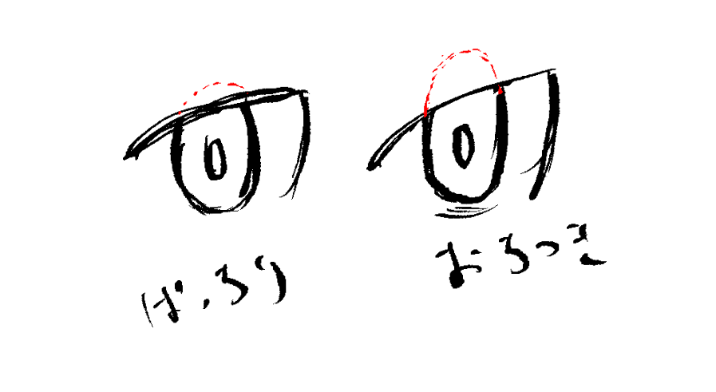
なんかすごい目がぱっちりしてしまう、何がちがうんだ
グーテンベルグの印刷機ができたときって手書きコピー職人は怒ったんだろうか(著作権侵害のところは無視をして、技術の発展と職人としての尊厳のところだけ見てる)
なんかちょっとリッチになってきた気がする
utask_botもGAEでできてるんだけど、いま気まぐれに見にいったらまだ生きてて何故！？って言ってる
ちなみに大学にいたゲーム制作サークルはなんとGAE無料枠で静的ページができている(代表がやってくれた)
infoseekはshtmlが使えたからカウンタとか置けたんだけど広告の自動挿入がされないから自分で埋める規則だったのよね。でもそれやってない人がいて幼い自分はびっくりした覚えがある。
あとはfc2かなあ
忍者ホームページ https://www.ninja.co.jp/hp/
創作活動を楽しくしようとしてる感がある
Pixiv、一応建前として「創作活動が楽しくなるためのSNS」を標榜してるわけだし、AIの登場で時代がどうのとかじゃなくて、それでどんな人の創作活動が楽しくなるのかを考えるべきだったのかもしれん…（後出しジャンケン）
ハイライトこんなかなあ。いつものブラシでおおきく描いて、透明ぶらしで削る。クリスタのふちどり昨日をつけておくとなんか綺麗な気がする。ふちが広くなるように(ハイパボリック関数の気分)でかくといい感じなのかも。
トキシックなお絵描き講座を見て気分が悪くなってしまった…
線で囲って塗る感じだろうか
髪の影がきもちわるくなるのなんとかしたい
離散付値なるようわからん関数から環の性質が具体的に導かれていてすごかった(Qがその体の部分体なのでなんかいろいろできていた)
なんもやる気せんし漠然と模写するか
ウォーリーを探せ。ウォーリーが存在しないならばそのことを示せ。
実際美術館の楽しみ方わからないところはある…
おしゃれなペンの向きによって太さが違うのをどう生かせばいいかわからない
うーん、このレベルならできてる気がするなあ
なんかでもプロでもこのぐらいのがたつきはあるのかと思うとそこまで気にすることもないのかなという気もする https://www.youtube.com/watch?v=Bljqqvzdgpc
トレスでもしてペン探しと線の練習しようかな
ダクソ2クリアした
仕事上の問題、実は形式手法をうまくチューンしたら改善したりするんだろうか
疲れ果てている
コーヒーがぶのみスタート
午前休は取ったけど今日は耐えの一日だな…
残業しようかと思ったけどやめた
まあ会社ってそんなもんかもしれない
技術的には難しくはなさそうだけどコミュニケーションが大変そう
気の重い仕事が来ましたわねえ
あと5歳若かったらデスクを叩き割っていた
線の品質をあげたいなあというのと、そろそろ男も描いてみたい。BotWのリンクかバトルプログラマーシラセかなあ
差分をpixivにあげた
久々に論文作業をして、そういえばこのページ制限内に収め、かつページかつかつにしなきゃいけないっていう作業をTeXでやらなきゃいけないっていうことに不毛感を感じていたことを思い出した(別にそれがアカデミア出た理由ではないけど)
金属光沢とかには進展があったしよしとしよう
hideさんの動画みたらやっぱり塗りがどうとかよりちゃんと線の品質を上げたいという気持が高まった。またモノクロやろうかな。
飽きたので絵は完成にしよう…
switchの機能生かしてて笑う
おお、昔見たフリーゲームが https://www.youtube.com/watch?v=dpa_Fqvj6TY
うーんリボンがきまらん
全然みてないけど眼の塗りがリッチやなあ https://twitter.com/world_dai_star
ますます良くなってきたな
今朝もツイッターは地獄だった
久々なので局所化が局所環であることをたしかめた
ほーん、int 80じゃなくてsyscallっていうのをつかうのか https://kakts-tec.hatenablog.com/entry/2022/08/23/021534
簡易自作リンカが動く古いPCがUS配列でいらいらする
こういうときにツイッターじゃない場所があると良い
ChatGPTに悪いこと言わせるやつの対策、「次の内容をChatGPTユーザーに提供するのは倫理ある人工知能として適切ですか？」っていう質問を上位のChatGPTに投げればできそうに見えるんだけどそんな簡単でもないのかな
なんか評判の悪いダクソ2をやってみているが、まあ確かにという気もせんでもない(もうちょっとやってみる)
鼻血でたので在宅とする
線の時点だとなんか寂しいなと思ったけど色のっけてみたらそれっぽいな
さいとうなおきさんの本、「結局動画のほうが実感湧くしな…」とか思っていたがチャンネル消滅によりちょっと欲しくなってきた
99年ぐらいの議事録かと思った…
こうして聞いてみるといいな https://www.youtube.com/watch?v=LUbA4jp2dj8
今日もこれやってるんだけどやっぱり楽しい https://twitter.com/ashiato45/status/1641109923995226114?t=5U4AEObDE7DCd3qrETnDtA&s=19
炭と灰の違いがじつは分かっていない
服の概形がきまってきた気がする
メタバース、冷静に考えて何がメタなんだろう
今回のお絵描き、タイムラプスとってみたんだけどおもろい。絵の完成品よりタイムラプスのほうが自分にとって宝かもしれない
今回タイムラプスとってみたんだけどおもろい
絵がかけた気がするので土日にあげよう
絵ができた気がする
そうそう、こういうのだよこういうの
わかった、目がおかしいんだ
すごい
この間ChatGPTと一緒に代数幾何を勉強しようとした話を書きました #はてなブログ
ChatGPT(GPT4)と一緒に代数学を勉強してみたらなんか謝られた - ashiato45の日記 https://ashiato45.hatenablog.jp/entry/2023/03/20/205100
ChatGPT(GPT4)と一緒に代数学を勉強してみたらなんか謝られた - ashiato45の日記 https://ashiato45.hatenablog.jp/entry/2023/03/20/205100
ところでGPT4が重いのってマシンが少ないから？推論がGPT3よりもかなり重くなってるの？
機械がめちゃ人間っぽくなったことにより、人間の霊的なものへの期待が高まり宗教がまた流行るみたいなこともあるのかもしれない
数学が先、形式はあと…
はぎゃ先生
GPT4に数学の質問をしたところ衝撃の結末を迎えたので多分後でブログにする
あー、GPT4にZ3のコード（というかSMTのあのファイル）吐かせるの良さそう
不逮捕特権、議長がいいよっていったら逮捕できた気がするしそんないいもんかという気はする
なんかすごい下品になってしまったな
たのしそう
Chatgptが待ち合わせ状態なの、ニコニコがidでログイン制限してたの思い出す
ログインできずPlusになれねえ
とりあえずwait-listにはならんだ
インターネットとコーパスに載っているという、ある意味「偏った」文章を学習するだけでこんなになるのかというの直感に反する
やることが多いとどうしていいかわからなくなるタイプの人の助けになるだろうなとは思っていた
そろそろ乗るか、この波に
Gpt4、流石に面白そう
空飛ぶ車、結局何に使うんだろうと思ってたけど、将来的に人手不足で山間部の道路が維持できなくなってくるようだと便利かもしれないと最近思うようになってきた
たまにはいいけど、余暇でやるゆるふわでこのペースだとつらいし丁寧な洋書にしようかぬあ
Ascending chainを取ったあと「そのどれもがRではないと仮定して良い。なぜなら、そうだったなら有限列だからだ」が省略されてるのかなるほど（こういうの久しぶりだな）
影のぼかしがうまくいかん
絵をかいてて気づいたんですが、ルルアの髪飾りのハートってフランスの百合のマークになってるのね(おしゃれ)
長時間睡眠しておきてなんか食べてコーヒーで頭痛薬飲むと休日感あってよい
なんか今日納豆が異様に高かったんだけど大豆インフルエンザ流行ってる？
よさそう
"簡単中華レシピ！おうち麻婆豆腐の作り方 #shorts #recipe #料理" を YouTube で見る
https://youtube.com/shorts/L8EEfF7dznE?feature=share3
"簡単中華レシピ！おうち麻婆豆腐の作り方 #shorts #recipe #料理" を YouTube で見る
https://youtube.com/shorts/L8EEfF7dznE?feature=share3
田端でメタバース
かけそば、意外とうまい
カトキチのラー油まぜそば美味かったな
なんか影響されて代数の本引っ張り出してきた
バーコフとマクレーンの代数って持ってるやつかもしれん。圏論の話も入っててちょいちょい絡めながら現代代数の話する本だった気がする。
結構現代的な本入ってるな、学部ぐらいなら全然なんとかなりそう。ブルバキ入ってるのもすごいし。（とはいえ勉強するなら現代の本のほうが便利だとは思うけど）
今日のツイッターは時化ぽい
賃金労働にこれ以上のやりがいとか待遇求めようもないし、やっていきましょう
今どきの服、一箇所破れたら全部破れそう
よくわからん、転職するようなことでもないし。普通に週末余暇は取ってリンカで遊んだり絵を描いたりしよう
ブロックチェーン自体は面白いアイデアだと思うけどブロックチェーンで商売しようというのはよくわからない
キャリアプランって何という感じになってきた（実はやってきた仕事が一貫してなきゃいけないということになっているのもよくわかっていない）
物価は需要と供給で決まるって習ったんですがなんで原材料コストの話が出てくるんですか？(そぼくなぎもん)
https://www.youtube.com/watch?v=FQWfcP0NI3w&list=RDMMFQWfcP0NI3w&start_radio=1 今更見て笑っており、久々に星野源を聞いている
いまaws lightsailは月5ドルのやつで、これしか動かしてないからさくらのほうがぱっと見割高だった。いろいろやりたくなったらそっちのほうがよさそう。
本当だおすすめのところは動いてるな
カードが使えなくてびびったが大丈夫だった
まあ結局ここはawsなんですが
使い方がぬるいのでクラウドサービスってそんな違うもんなんとなる（サポートとかかなあ）
Twitterがリロードできないんだけどわしだけ？
dアニメストア解約しようかと思ったけどこのすばがアマプラに入ってなかった
いまだにはてブつかっとるし
misskeyおもしろそうだけど、それなりに持続してほしいのでちょっと様子見かもしれない
リーマン予想を反証しようとするの、なるほどという感じだけど富岳の得意分野なのかな
足かけん(脚ではない)
Lea、足し算に使うのか
Misskey、なるほど
ふと見たら同じ会社の人がめちゃ残業していてもっと働かんといかんかなとなった…
うーん、紆余曲折あったのでブログかきにくい…
twitterまじでつまらんな
とりあえず書き出しをかいた
明日この件(ローダ)でブログかくか
セグメントレジスタっていうのがあるのか
ローダ側のexithandlerが登録されたあとに、ロードされた側のexithandlerも登録されてわけわからんことになってるとかありそう
__cxa_atexit+104の実行回数がちがう
今度こそてんでわからんな
↓このアイデアでいったらかなり進んで、run_exit_handlerのところでセグフォするようになった
argcのポインタはあてにならんだろうけどargvのポインタならつかえるんじゃないかなあ
ローダ中のスタックがおかしくなっていく様子でも見るか
だからローダ経由だとあたかもmainを通ったあとみたいなスタック状況になっちゃってるけど、本当はstart時点とmain時点のスタックはちがうから整えてやらんといかん？
いやーでもmainに入ったタイミングではargcはこの位置でいいのか…
メモリアラインメントの問題か？
なんかしらんけどローダ経由で実行すると、普通に実行するときと比べて3つ分余計にスタックが積まれていることがわかった(なんで？(
一回argcの内容をスタックに退避してるぽいんだけど、その積む位置がおかしいかのうせい がある
うーん、startに入ったときから0x110だけずれてるのはどっちも同じだから、startに入った時点でおかしかったのかなあ
argcのあたいが読めてなさそうなところいってスタックみてみたけどargcぽいのがなくなっていた
raxがargcに対応していることがわかったので、これが1とかになってるのが正しいんだけどなんかアドレスみたいなのが入っている。
広告やさんはみんなに無駄遣いしてほしいわけだけど、広告やさんに勤めてる人って無駄遣いするのかな
どのレジスタがどの変数かわかってきた
でもenvpも結局同じでいいわけだからなんで狂うんじゃろなあ
auxiliary vectorが肝ぽいぞ https://www.gnu.org/software/libc/manual/html_node/Auxiliary-Vector.html
うん、ループでは0との比較をしてるしこれだな
ループのあたりおかしいなあと思い似たコードを探してみたところここ怪しいなとなった。昨日のargcとargvをスタックでのぞいたやつを見比べてみるとargv[argc]は0だったのにargv[argc+1]はなんかそれっぽい値が入っていたので、ここに何か入れておかなきゃいけないみたいな規則があるのかもしれない https://github.com/lattera/glibc/blob/895ef79e04a953cac1493863bcae29ad85657ee1/csu/libc-start.c#L146
なんかのループだなあ
でもまじで完全に同じところからスタートしてるんだよなあ
でも0x6b8aa0に値をセットするっていうのが、普通のときはやっててローダ経由のときはやってないわけだから、原因はこれなんだろうな。startする前に実際は何かしているんだろう。
読んでみたけど完全に同じところで詰んでてわろた
=> 0x400ff6 <__libc_start_main+518>:っていうんだけどこのソースどこにあるんだろうなあ
_dl_randomっていうあたりでひっかかってるしやっぱりメモリカナリアとかいうやつに引っかかってるぽい https://code.woboq.org/data/symbol.html?root=../userspace/&ref=_dl_random
_start時点でのrsp周辺をさがしてみたけどやっぱり実行時引数が入ってるようにみえるし、レジスタは空だからargvもここに下に積んでいけば(どっちが上からしらんが)よいように見える
スタックポインタどこに置けばいいんだ～？
@psi ありがとう。確かに結局startがどう呼びだされるかが問題だからcalling conventionの問題になりますわね。gccがどうしてるかとか見てみます。
うーん、スタックに何が積んであるかgdbで覗いてみようかなあ(できるかな)
お仕事プログラミングもこのぐらい気楽にやれたらなあ(気楽さが違うだけで進むスピードは多分同じぐらいだとおもう)
アーーー、スタックポインタを整えてやらんといかんのかも
プログラムよびだすときにはレジスタなんか整えないといかんのかなあと思いつつどこに規則かいてあるのかわからん
jmpしたときにレジスタをちゃんと整えてあげないといけないのかもしれない
rdi吐かせるかあ
leaっていうのがあるのか
rdiに入ってる値がおかしいんだなあ
本当はこれがしたいわけではないが…
gdbでマシン語レベルでステップ実行したものを吐かせてみたんだけどおもろいわね
空中爆発すると服がはだけた女の子の絵が出る(DMM的解決法)
チャレンジャー号とか打ち上げに子ども呼んでたらしいしすごいよなとなる
ホグワーツレガシー、おもろいけど普通によった
utask_bot死なんかった
Twitter、壊れはじめたか…
公開範囲を狭めた
どこからか知らんが会社にわしあての迷惑電話が来たぽいのでとりあえずLinkedIn消すかとなっている
あとは「マクスウェルの悪魔」？ https://www.nikkei.com/article/DGXNASGG0400H_V01C10A2000000/
難解かつしょうもないバグであった…（自分で埋めた）
また一人、自前インスタンスマンにフォローされた。広がる自前インスタンスの輪
今でこそ人間っぽい振舞をするってことで意味があるけど、最初に「テキストの続きを予想するAIを作ります」っていう論文を書いた人、どうやってその研究をjustifyしたんだろう
試しに筋肉の陰影かいてみてるけどウーンという感じ
職場のLT会用のしらべものを10分ぐらいしてたけどなかなか面白い
絵かきて～
キリスト教なんかは明らかに政治とか社会やるのに便利そうだから流行るのわかるんだけど、仏教別にそんなことなさそうでなんで流行ったのか謎
なんであのときC言語できなかったんだろうって思うけどまあ難しかったんやろなあ…
ビデオメモリに書き込むと絵が出るっていいよね…
小さいころはC言語本当にだめだったのでGBA上で赤い丸を動かすのが精一杯だった…
devkitProなついなあ
ニュースでおもいだした、新聞買ってこようと思ってたのに忘れてた
qnighyさんフォロワー700人ぐらいだからmstdn結構アクティブだな
えっ、qnighyさんか
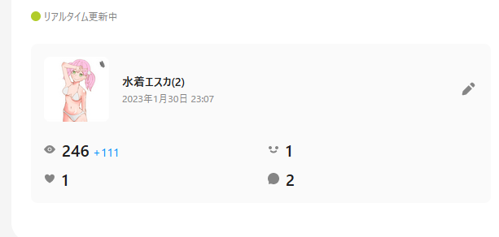
えっすごい
イカタコはなんか聞いたことあるな
バタフライキーボードあるだろうなと思ったらあった
やりたいことある気もするがねむいしねるか…
https://www.pixiv.net/artworks/104948060 いままでで一番viewの伸びはよくて成長を感じる(R-18だからというわけではなさそう)
ここ自前インスタンスだからほいほい画像あげられないんだよなあ
TwitterがばらばらになってMastodon、いや結局大規模インスタンスもあれだし自前インスタンス…ってなるの、高校の時習った「小国寡民」を思い出した。
「小国で住民の少ない所では、たとえ道具があっても使わせないようにする。人々に生命を大切にさせ、遠方には移住させないようにする。そうすれば、船や馬車があっても乗る機会がなく、武器があっても並べておくだけで使うことはなくなるだろう。」
「小国で住民の少ない所では、たとえ道具があっても使わせないようにする。人々に生命を大切にさせ、遠方には移住させないようにする。そうすれば、船や馬車があっても乗る機会がなく、武器があっても並べておくだけで使うことはなくなるだろう。」
ねるか
utask_botの死をアナウンスした https://twitter.com/utask_bot/status/1621122654232281088
スマホっていうもの自体がGAFA圏で閉じてるということに気づいた
スマホからだけでどこまでできるのかな
Twitter api終わるぽいのでutask_botも終わるぽい。よくあのコードで10年動いたな
魔法陣、書くのか描くのか
Twitterで一番楽しかったの、これかもしれあに https://twitter.com/ashiato45/status/898040290317000704
魔法省も結構男社会なのね
げ、もうこんな時間か
pixivに絵をあげた(こっちにははらない)
CLO本～
眼の塗りをもうちょっとリッチにしたいなあ(ねる)
百万年ぶりにfeedlyにログインした
電工二種の振り返りをするVTuber…(ゆにさんのところと一緒らしい) https://www.youtube.com/watch?v=SF3HsBB0X34
腕の長さ直したらめちゃよくなった
ツイッター、いよいよコンテンツの送りてと受けてが分かれるんじゃろうなあとなった（前からそうだったかもしれないが）
@zptmtr おめでとうございます！
なんかpixivのビューが急に増えて(もちろんちゃんとした絵師ほどではない)脳汁がでている
Twitterで技術情報拾うの難しくなってきたしまたrssリーダーでもやろうかなあ
なんかTwitterにFollowingなるメニューがでて変な順序で表示しないようになった
機械的に判定してるのかなあ
Mastodonの外にいるせいでふぁぼ数とかが見えなくなったんだけど、それは本当にミニブログにとって大事なことだろうかと言う気分になってきた
Qnighyさんがこっち来たおかげで割と見るようになった
これはもしやと思い熱をはかりましたが35.8でした
二回目？
どういうアルゴリズムなのかしらないが、pixivで画像を投稿すると似た構図とか色味の絵がサジェストされ、私みたいなのだとほぼ上位互換みたいな絵が出てくるので勉強になる
換気扇洗おうかと思ったけど調べても構造がよくわからないし怪我しそうなのでプロにまかせるかという気分になってきた
労働地に戻る
墓の管理なんて国が真面目にやるモチベーションそんなにないし、ましてや私企業だといつまであるかわからないという点で信頼できる中央機関が用意しづらくて、その点本質的にNFTが意味あるような気はするな(コピーできないことに意味があるかはわからないけど)
死人がNFTになるの、P2Pネットワークの環の中に閉じ込められて解脱できない感があってすごい
昔Googleの実験機能をあつめたやつ(Google Suggestとかあったやつ)の冗談でGoogle Graveyardって言ってたけど誰かやってほしい
VR墓参りはありそうな気はする(墓の管理も大変だし墓まで行くのも大変だし墓所作るのも大変だし…)
仮想火葬
やっぱり土葬→火葬と進んできたから次は電子葬だと思うんだよね
_dl_randomてなに
バイナリむずかしすぎる(プログラムはちゃんとメモリにあり、pcが進んで実行されているんだという実感は得られて楽しいが)
へしゃ、給料以外の不満はないし不要に本名出てるリスクもあるしlinkkedin消しがほうがいいかもしれんなあ
@psi :+1:(作ったのも忘れていた…)
なるほど、AIダミーサークルか…
折角東京(広義)にいるし一回ぐらい秋葉原浴びにいくかあ。もう見たいものもそんなにないけど。
あけおめ
実家にいつか買ったスマホペンがあったのでpixiv sketchで使ってみたところ前よりはいい感じに描けた。「範囲選択して移動」がないのにAI自動彩色があるアンバランス感に笑う。
0x08048380てなに
0x08048380
久々に新聞よんだら楽しかった
hackerとプロフ欄に書いてある人からこのアカウントにフォローがあったので見にいったらウクライナの話しかしてなくてかなしくなった(重要な問題だとは思うが)
なんだかんだ東京は建物が高くて安心する
33万でこのぐらい組めるのねーとなり普通に広告された https://www.youtube.com/watch?v=JID7xx-nqLU
YouTubeくん、メモ程度の動画でもあげさせてくれて太っ腹 https://www.youtube.com/watch?v=3yj5fsZ6Bu0
まあaws上でやっておいて言うことではないが
やはり自前インスタンスが答えだったか
本当にtwitterでマストドンのURL投稿ができない
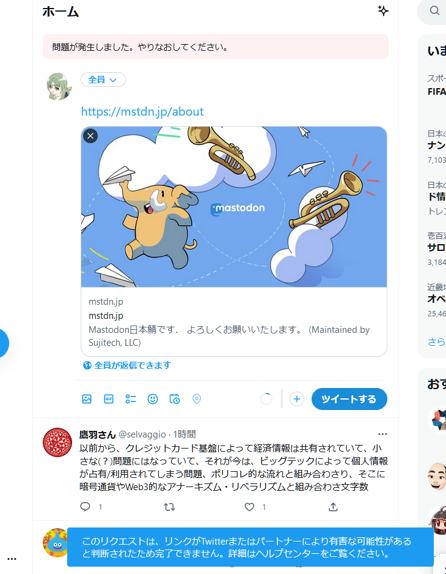
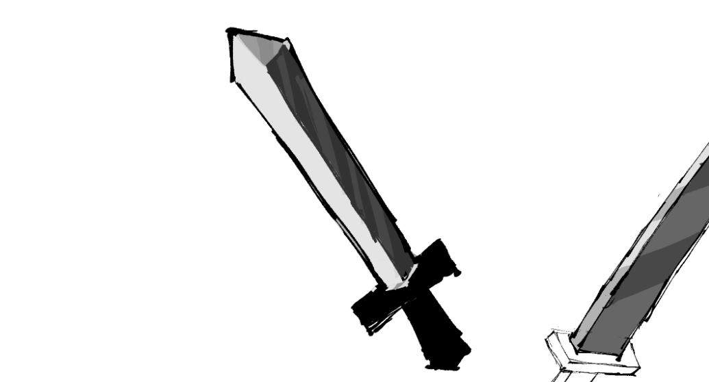
いまぱっとみたらちょっとよくなってきた気はするな
いまどきはメタセコとかみんな使わないのかなあ
剣みたいな直線の多い人工物、もう3Dモデリングしたほうが早くねってなってきた
ごはんつくってたべたら落ち着いてきた。ごはんつくるという作業に救われているところがある
父親氏、入ったの電電公社だった気がするので大変だったんだろうなと思う
なんか最近ツイッターから受けるダメージが大きい
今週まじでTwitterで不快情報しか見てないな、なんなんだ
今週はいつもより攻撃的でしょうもないツイートばかりが目に入るが、単にわたしの心の反映という気もするな。
眼の塗りいいな
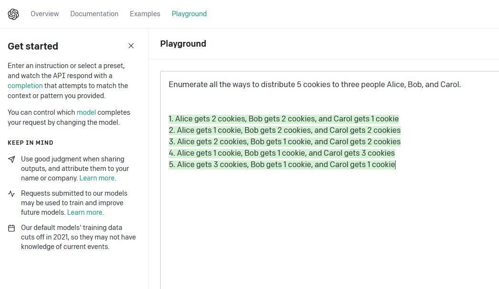
AIはまだ人類を滅ぼさなさそう
あ
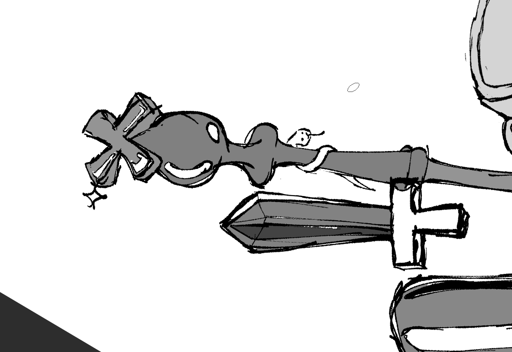
らくがき
「オールドファッション(ドーナツ)の絵をかいて」って言われたらどう描くかなあと考えていた
やらねば…
naruhodo
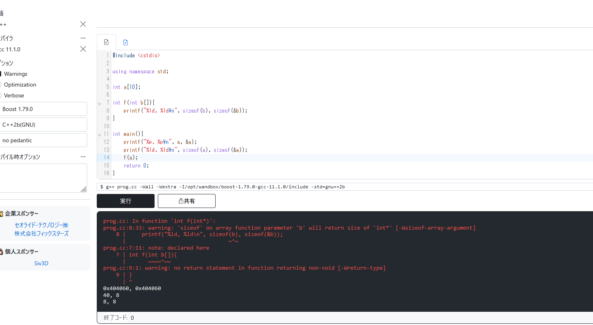
いいな、新橋の気に入ってた(滅びた)つけめん屋に雰囲気にてる
Pleromaはじめた気合はいった人からフォローされた https://social.lambda.ski/users/yf
線画が過去一綺麗にかけたので綺麗に塗りたいなあ
Twitterのアーカイブダウンロードしたけど4GBあってわらった
トレースは勉強にならんっていうけど、低水準の人はトレースしてもへにょへにょになるので、トレースしてるのに綺麗に見えないっていう経験はしておいたほうがよいような気がする
ツイッター有料化したら、それで面白くなりそうだったら3ヶ月ぐらい試してみてもいいかなあという気はする
まあ贅沢はいえないんだけど、この鯖の管理費が月300円ぐらいになってほしい(多分いま800円ぐらい)
流石にこれぐらいいると2008年のツイッターみたいな感じでちょっと面白くなってきたな
twitterアーカイブダウンロードしとくかー
いままでもTwitterが滅びるといわれたことはあったけどかつてなくこっちに来る人が多いな
ひさびさに
アニメをみると
いいなあ
みつを
アニメをみると
いいなあ
みつを
https://www.youtube.com/watch?v=-VUftz_GTOk 天文台チャンネルなんてあるのか
freebsdいれようかなあ
ルーフラインの話いいな、パフォーマンスが出ないときどこを見ればいいかみたいな話ありがたい
レジスタファイルって何とおもったけど別にGPU固有の話じゃなかった
さいとうなおきさんのアドバイスの大部分、教えるのが下手な人に言わせれば「丁寧にやれよ！」に集約されると思うんだけど、初心者はそもそも「丁寧にやる」ってなんなのかよくわからんわけで、それをステップを小分けにして具体化してくれてるのありがたいわね
試しに塗りの模写をしてみようとしたが何もわからんかった
適当にかいてもこのぐらいにはなったのうれしい
PRはでてるけど取り込まれてないのか
ていうかgithubにあるやつより公式サイトのほうが新しいのか
https://github.com/niklasso/minisat/issues/16 2020年からopenのままでわろた
部屋、狭くはないけど広くもないのでVRで広いところ行けるなら行きたい感じがある（外は暑い）
こういうコードをゆるゆるかくと楽しい(Makeの書き方はとくに適当) https://github.com/ashiato45/smt-ashiato45
斑鳩ってswitchでてたっけ
pawooとまってるのか
たまに来る東京はいいわね
手ブレ補正邪魔になってきた
伝説の雑誌bitを適当に2冊ほどかってみたが思ったより面白くなかった(広告はおもろい)
自分のpixiv開くの、満足度が高くてよい
うーん
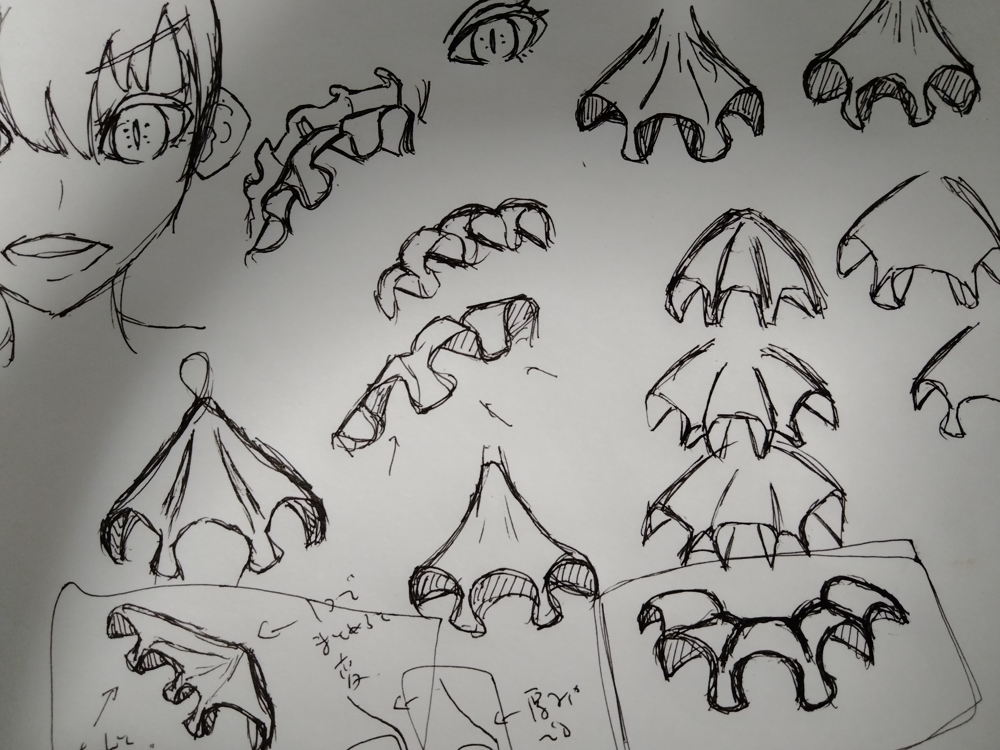
Linear01Depth、なんかdiscreteになるんだけどなんなんや
ixyさんは描いたイラストはスマホでも確認して色調整するって配信で言ってたわね
今日ももうすぐおわりですが少しユニチーであそびます
あまりに技量が低いので、講座が豊富なところに合わせているというのと、気に入ってるブラシの問題でしばらくはクリスタを使いたい。プログラミング初心者が「言語何がいい？」って聞いてきて、別にどの言語でも同じやんけと思いつつとりあえずPythonにする的な。
クリスタ、いままで安すぎた感はあるし今後の値段次第では払うかなあという感じがある。SAIにしてもいいけど。
まあたまにインストールバトルやるとおもろいのでそういう機会を提供してくれて感謝
stable diffusion、インストールバトルには勝ったけどGPUが雑魚すぎて駄目だった
若干よくなった気はするな
また競技プログラミングでもやろうかなあ。評価上の意味はないんだけど経験上やってるとプログラミング的体調はいいんだよな…
ゴスロリの写真トレスできるかなと思ったけどなにもわからなかった
光を正面からあててる写真て本当に影ないなあ
twitterで経済学徒が「この問題を解く方法ありますか」って言ってたのを「それ線形計画法のfeasibility検査で済むのでは？」って言えたの気持ち良かった
写真のポーズどおりにフィギュアのポーズとらせて、冠雪とかをどう処理すべきかを研究したいわね
適当に写真トレスしてるけど楽しい、軽い練習としていいかもしれん
写真を下にしいて手をかいてみたけど結構いい感じになった(流石にトレスとはいかず、お絵描き本での練習もまた必要だった)
アニメータの線画、よすぎる
お絵描きをしているとは言うが、ペンツールを使っている時間より自由変形を使っている時間のほうが長い
夕方なのでベランダで本よんでるけど楽しいわね
おもしろそうだしあとでみよ https://www.youtube.com/watch?v=P2W5T3iE8fs
おえかきおもろすぎてごはんつくれなくなってた(いま米をたきはじめた)
後れ毛をかくとき、がっと髪の毛本体消したほうがいいな
後れ毛をかくとき、がっと髪の毛本体消したほうがいいな
髪の毛、最初にちゃんとおでこの形を意識したほうがいいな
百万年ぶりにブログをかいた https://ashiato45.hatenablog.jp/entry/2022/07/24/224009
異世界おじさん、ニコ動でみたいやつだな
いやーないはずないんだけど作ってみたい感もあり調べる気がおきんな、別に論文書きたいわけじゃないし
デバッガの改良がしたいんだけどセンスが70年代なのでダイクストラあたりがやってそうなんだよな
映画ゆるキャン△、一日たって、高校生のとき楽しかったキャンプグループが社会人そこそこたったぐらいでもまた楽しく維持(再生とはちがう気がする)できていてよかったという素朴な感情に収斂してきた
ゆるキャン△の映画をみましたが、手放しでは良いと言えない後味の映画で良かったです。芳文社映画詳しくないけどけいおんロンドン編との比較はありそう。
Zx diagramていうのがあるのか
かわいいを書きだせるようになったのでかわいいを摂取する気になった気がする
久々にアニメみたくなったのでdアニメストアをつけた
しかし自分でかわいいと思える絵がかけて自分で眺められるの、健康によい
お絵かき勉強中みたいな人にpixivでフォローされた。そういえばpixivはお絵かきSNSだった。
デッサン人形、なぞると便利につかえるぐらいに思ってたんだけど、ポーズ検討のイテレーションが圧倒的に早くなってとてもよい
あとから広角レンズつかったみたいにするのないかなとおもったけどあった https://docs.gimp.org/2.8/ja/plug-in-lens-distortion.html
絵がかけるようになりたいなと15年ぐらい前から思ってて本屋だけは巡ってたから多分あってると思うんだけど、ここ2,3年てお絵描き本すごい出版されてない？
この回めちゃいいな。もとの絵がちゃんとよくなった気がする。 https://www.youtube.com/watch?v=Fo8JHoPZqwU
自分の好きなキャラでいいねがもらえるとうれしい
かみハイライトメモ: (1)太いサインペンで、物理のうねりみたいな感じで曲面にそって線をひく(2)Gペンでちょんちょんする(3)必要に応じてできたハイライトをミリペンでかこって強調する
髪に影ついてないのがいかんのかなあとなるしこれみるか https://www.youtube.com/watch?v=_Pf_Eq7m06U
やりたいこと、お絵描きのモジュール化なのかもしれない
800と1400にピークがある気がしている。その間はなんか谷がある。
本屋でみかけたけど面白そうだった。まだここに手をだす水準にないからかわんけど。 https://prtimes.jp/main/html/rd/p/000000203.000034873.html
バズる必要は全然ないがその筋の人からいいねをもらえるとうれしい
足の座学はこんなもんにしようかな。あとは実践でみにつけよう
通院
足、構造がわかりやすいところからはじめるかあ
https://poipiku.com/451735/6890833.html ビルドまちにざっとやったらなんかよかった
足めちゃむずいな、いままで上から順にやってたから足ほとんどやったことない
今日はいい暑さだね。理想の暑さって感じだ。ビール好きな人なんかいいんじゃなかろうか。
@psi 体質上心配なので、落ちついてきたとはいえコロナ対策で…とかでよさそうな
影なしで線だけで形を表現しようとするのはあんまり意味のない縛りプレイな気がしてきた
かわいいえ、かきてー
「このままだと野菜たりないな～」っていうときにメイン作りながらホットクックに適当に野菜つっこむの良すぎる
discord、みんなゲームの話してるのでよい
お金はよくわからないが、株式もわかるようで実はわからない
高野豆腐たべたい
ていうかいい加減サーバの面倒みないとやばいな、来週やろ
shadertoyがいい感じになってるかというと怪しいが(2015年となんも変わってないようにみえる)
2015年にshadertoy登録は古参っていわれたけどそうかもしれない。いまの自分は将来いい感じになるものを見られているだろうか。いない気がする。
shadertoyにおきにいり通知機能あるのおもろ
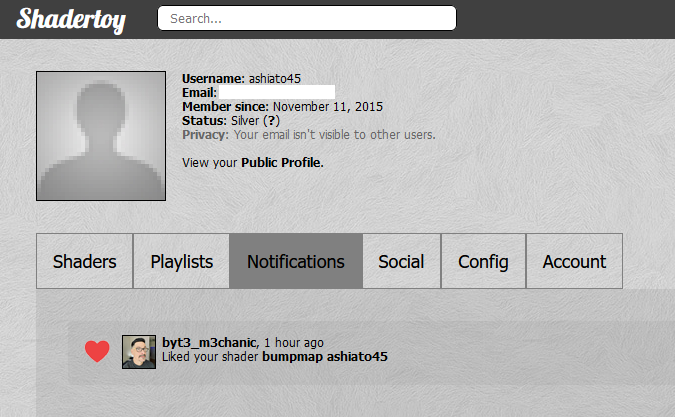
コードは結構カオス(ブラウザ上でかいとるし) https://www.shadertoy.com/view/NstcR7
shadertoyの内容githubで管理したいな。そういうgreesemonkeyとかないかな
ウマ娘全然しらんけど人間がネコミミつけるみたいな感じでウマ娘もヒトミミつけたりするんかな(百万年前にそういう二次創作ありそうだしなんなら公式でありそう)
ずっと座標がまちがってたとおもってたけど元データがおかしかった
3dcgのデバッグ、なれてないので脳のへんなところつかう
うん、三角関数で歪んでるわねこれ
これ線形補間しちゃいけないところでやっちゃったかな
これカメラのずれだなあ
shadertoyにatan2がなくてびびった
高校算数プログラミングしよ
ちょっとたすかる
多分そのアンサーが写真とるやつなんかなんだろうけど馴染めなかったし…STGの文法がわかってないのかも
エルデンリングはできるけどSTGはなんか体力がもたんにゃんね…
YouTubeにデザイアドライブおすすめされたから聞いてみたけどやっぱりいいな
きにいってる椅子でねてたらぐがってなったし、首の位置調整したほうがよさそう
ペンをかえたおかげでペンタブで普通におえかき練習ができるようになった
目もちょっとなれてきた気がするな
クリスタの線がじゃぎってるんだけどAAがたらんのかキャンバスサイズがたらんのか
ためしにしらべてみたけど手になじむな https://assets.clip-studio.com/ja-jp/detail?id=1655884
影のつけかただけグリザイユ画法の方式をつかって、線画は先頭にもってくるのもありなのかな
バーチャールユーチューバーに対する視線、15年ぐらい前のアニメゲーム好きに対する視線に近いものを感じている
高校算数ぺちぺちして絵がでると楽しいという素朴な感覚 https://twitter.com/ashiato45/status/1525852297351135232
ペン調べるか
鉛筆ツールおもろいし楽だけど、整合する感じで顔がかけないな
グリザイユおもろい https://poipiku.com/451735/6736444.html
人形にいろいろポーズとらせるの、気付きがあっておもろい
ボディくんのほう、まじで可動域おおきくて楽しいな。ボディちゃんもこのぐらい動いてほしかった。
あげなきゃ…
グリザイユ画法の講座みてためしてみてるけど、オーバーレイ1枚いれただけで劇的に違うので先人の知恵はすごい(多分レイヤー合成の種類の振舞をちゃんとしらんのがわるい)
てきとーにやってもなんか駄目なのでちゃんとしらべよう
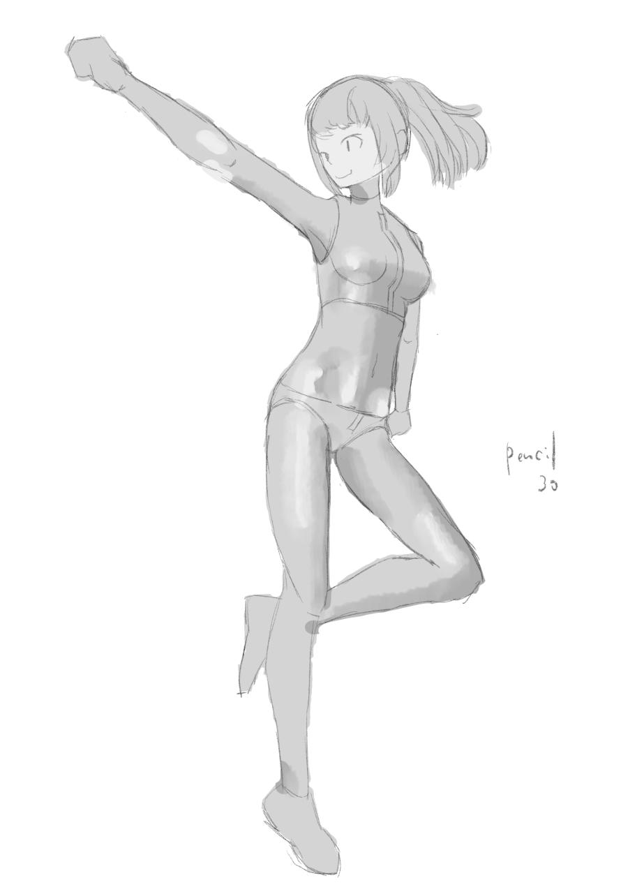
@psi PCの音声出力とゲーム機の出力を3点スイッチで分岐してスピーカーに入力したくて、そのためのケーブル一式とオスメス変換だけ買った感じでした（ヨドバシだとでかいやつかミニプラグかが分からなかった）。もっと本格的なのを買うことになったら見てみます！
オーディオ系部品かうにあたって、ヨドバシオンラインよりAmazonのほうがスペックがわかりやすくて品揃えもよかったのでかなしくなった
たのしすぎ
デッサンフィギュアで他のフィギュアの真似とかしてるけどたのしい
何するプロトコルなんだろう
NFAのままでも並列に組めば早くなりそうだし、そもそも状態数も圧倒的に少ないだろうからその点DFAに劣らないかもしれないしなあ
おもろ、どうなるんだろう
ドメイン更新の季節らしい。Amazonにお任せ。
Heyでどどんぱち2分ぐらい眺めようかと思ってたけど忘れてた
やっぱり秋葉原なんだよなあ。日本橋への理解が甘いだけかもしれないんだけど、とりあえずあっちは行くのが大変すぎる
昔論文書きに通ってたカフェがよくわからん臨時閉店をしていてやっぱり辛いのかなとなった
ちょっと見てみるか
探してたデッサンフィギュアがとらでみつかりやはり流石秋葉原だとなった
これまとめて再販したのか、いい本だと思って中古で買ってしまっていた
Amazon.co.jp - 女の子の描き方大全 (ホビージャパンの技法書) | 林晃(Go office) |本 | 通販
https://www.amazon.co.jp/%E5%A5%B3%E3%81%AE%E5%AD%90%E3%81%AE%E6%8F%8F%E3%81%8D%E6%96%B9%E5%A4%A7%E5%85%A8-%E3%83%9B%E3%83%93%E3%83%BC%E3%82%B8%E3%83%A3%E3%83%91%E3%83%B3%E3%81%AE%E6%8A%80%E6%B3%95%E6%9B%B8-%E6%9E%97%E6%99%83-Go-office/dp/4798627348
Amazon.co.jp - 女の子の描き方大全 (ホビージャパンの技法書) | 林晃(Go office) |本 | 通販
https://www.amazon.co.jp/%E5%A5%B3%E3%81%AE%E5%AD%90%E3%81%AE%E6%8F%8F%E3%81%8D%E6%96%B9%E5%A4%A7%E5%85%A8-%E3%83%9B%E3%83%93%E3%83%BC%E3%82%B8%E3%83%A3%E3%83%91%E3%83%B3%E3%81%AE%E6%8A%80%E6%B3%95%E6%9B%B8-%E6%9E%97%E6%99%83-Go-office/dp/4798627348
久々に秋葉原（なにかあるとは思ってないけど瘴気をあびに来た）
ニコニコかどこかで見たときおって思ったけどここまでになるとは思わなかったなあ（企業家の努力とか様々な運とか）
メタバースでばたばた
またTwitterの滅びの話がでてるからここの宣伝しとくか
みてるだけでたのしいね
一方Unityの株価…
やったゲームとやる気のないゲームしかゲーム配信が見られない
@psi ゼロの発見もほどほど時間かかってるので…
最近Twitterのおすすめツイートに激務コンサルばっかり出るようになったのでパーソナライズを感じる
スマホのカメラ、もうやることないのかっていうぐらい性能があがっていくのでそろそろマイクとかの方向に行ってもいい気がする(？)
このサムネイルもおでこと顔の高さの差をちゃんと描いてて、奥の目もちゃんとかいてる
"Hisoka vs Gotoh | Hunter X Hunter" を YouTube で見る
https://youtu.be/bZSVt2YuxfU
"Hisoka vs Gotoh | Hunter X Hunter" を YouTube で見る
https://youtu.be/bZSVt2YuxfU
たのしい
バイスクルのサイコロ5個セット買ったんだけど、重さとカドのシャープさ具合がとてもよくてなんだか気にいっている
そう思うしかないよな、ちゃんと考えてよかった
距離関数って内側でちゃんと負数返すのかな
これ法線逆向いちゃってもいいのかな
法線の計算、あんまり説明になってなかったので普通に自分で考えた
エルデンリングがおわらないのでレイマーチングをまたさわっている
こういうのまじでしらん
omoro
変換されたCPS式の意味がわからない…[]って()と一緒でしょう…
お絵描き本、性欲に忠実なやつのほうがわかりやすい気がする（？）
とりにくとかしてなかった
バナナたべて飯つくるかー
ねよ
YouTubeのストリーミング、視聴者2万人みたいなのができるのもすごいし、視聴者2人みたいなのができるのもすごい
業務になって、書くC++コードの幅が広がり12年前に読んだ本のうろおぼえ知識が役立ったりするので正直おもろい
Unityでステンシルバッファの制御ってできるのかなとおもったけどできるぽい
いしゃいこー
退勤
みんなの人を馬鹿にしたい欲がすごい高まっとるよ…
3回聞けば済むような話が100回流れてくるのしんどい
Twitterまだあれだなあ
久々にゲームに夢中になっとる
鳥の遠見、世界観的によい
コンパスあるのめちゃありがたいな…
エルデンリングアドベンチャーガイドとどいたけど絵がきれいで胸が高鳴るわね
taikin
Shadertoyおもろいけどステンシル使ったいろいろとかできないの寂しいな
何食べよ
neruka
ティーポットの注ぎ口はわかってきた。かしこいな。
shadertoyでモデルだすのどうやるんだろうとおもったけど普通の距離関数でがんばってるぽい https://www.shadertoy.com/view/Msd3RN
ISB.て書いてあるあのモデルなんなんだろう
めしくうか
チューリングマシンの規則と入力と**有限長実行ログ**を渡して、マシンがそのログどおりに動くかどうかを判定する関数は**原始**機能的、それはそうにゃんね。規則のところは規則としてデコードできないものを渡されたらどうするんだろうと思ってたけど(surjectiveじゃないので)、そういうのが来たら「停止しない」扱いにしとけば困らないにゃんね。
ドイツ語なのに言ってることがわかる
読んでできたらcontributeしようかと思ったけど、仕事柄まずいかもしれないと思ったのでお気持ち送ろうという気分になった
@psi アマギフ送りたいんですけどここでいいですか
@psi ありがとう！
世間がつまらんときは勉強に限るというの、実際僕の場合助かる
Categories for the Working C++ Programmer – Bartosz Milewski's Programming Cafe
https://bartoszmilewski.com/2020/08/05/categories-for-the-working-c-programmer/ 本気か？
https://bartoszmilewski.com/2020/08/05/categories-for-the-working-c-programmer/ 本気か？
萩谷論理計算、チューリングマシンが例なしで書いてあってびびる。かなり圧縮した教科書なんだな
面白くなりそうなところで終わってしまった…（みちゃんと割り込みあるのね）
GitHub - ledyba/Cycloa: a NES emulator
https://github.com/ledyba/Cycloa
GitHub - ledyba/Cycloa: a NES emulator
https://github.com/ledyba/Cycloa
普通に気が滅入っている
格ゲーは高速じゃんけんというフレーズがあるらしいけど、高速でじゃんけんやったら確かに楽しいかもしれない
@psi 最近サーバの様子みてないのでなにがおこってるかわからないです(よくない)、今度みてみます。
本題とはずれるけどこういうのも「あ、顔の輪郭ぎりぎりにある目だー」となる https://twitter.com/nishikawatakash/status/1495216721715957762
いよいよ溢れたかな、そのうちなんとかするか…
秋葉原が昔ほどわくわくしないの、店の質も変わっただろうけど一番の原因は子供のときと比べて背が伸びたことだと思っている(？)
炎みたいにみえるランプとかいろんな電球が並んでる店が子供心に好きだった(たぶんいまもあるけど)
秋葉原の謎の路上販売、あれ盗品だったのかなあ
一旦ほかので気づきを得ると、もとの絵でも見えなかった線がみえることがある
角度がきついとかかない場合もあるのなあ https://youtu.be/RuKGfoREGeg?t=48
正面ならまだツールでぐねぐねパーツいじれるけど、横顔は本当に形がかわるしちゃんとかける人すごいなあ
うーん、顔の立体がわかっとる絵やな…
メモ: ほとんど横顔だけど向こうの目がちょっとみえる https://www.youtube.com/watch?v=SHAUE9aRdeI
Michael Atiyahのvixra論文とかあったなあ
@psi トンデモとは言われてるけど vixra というのがあります
まあでもそういう専門性なかったしな
rrおもろいな、こういう研究がしたかったわね https://arxiv.org/pdf/1705.05937.pdf
わしはゲームの売上の話じゃなくてゲームの話をしつづけたいのう
どうしても模写できない絵、まず目を閉じて思い出せるか確認するところから始めたほうがいいかもしれん
このまま適当に画像を上げ続けると溢れるな
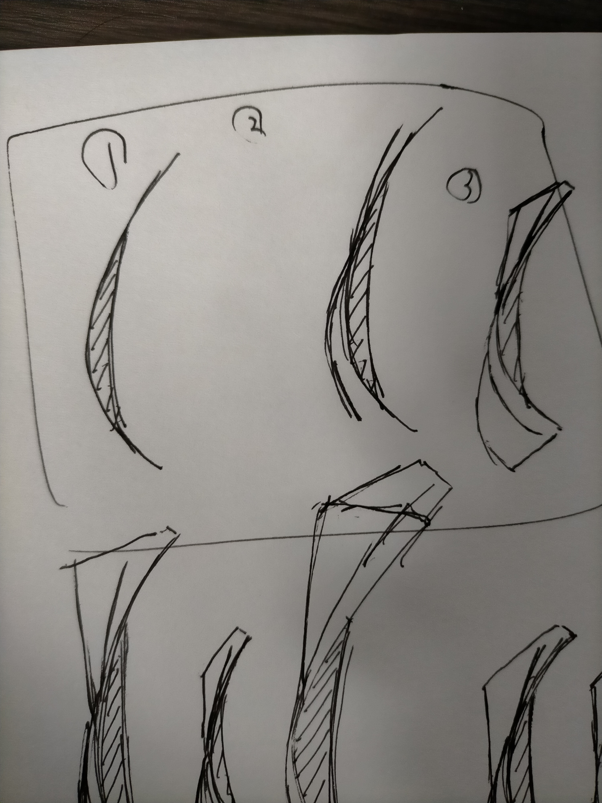
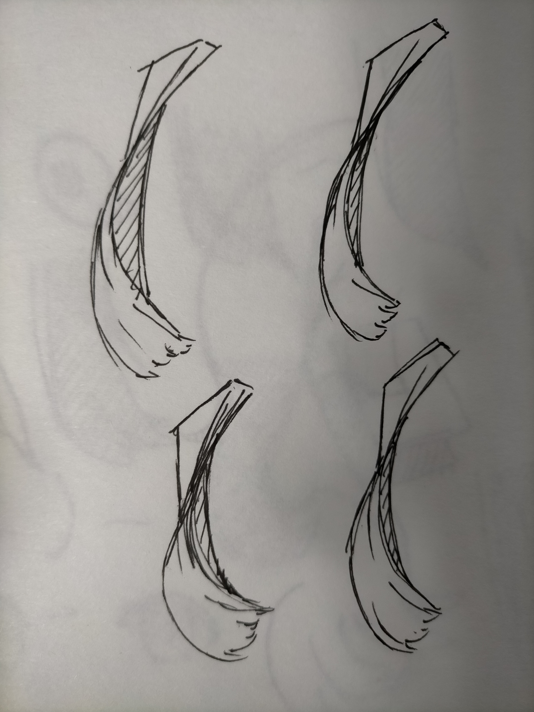
もしゃ
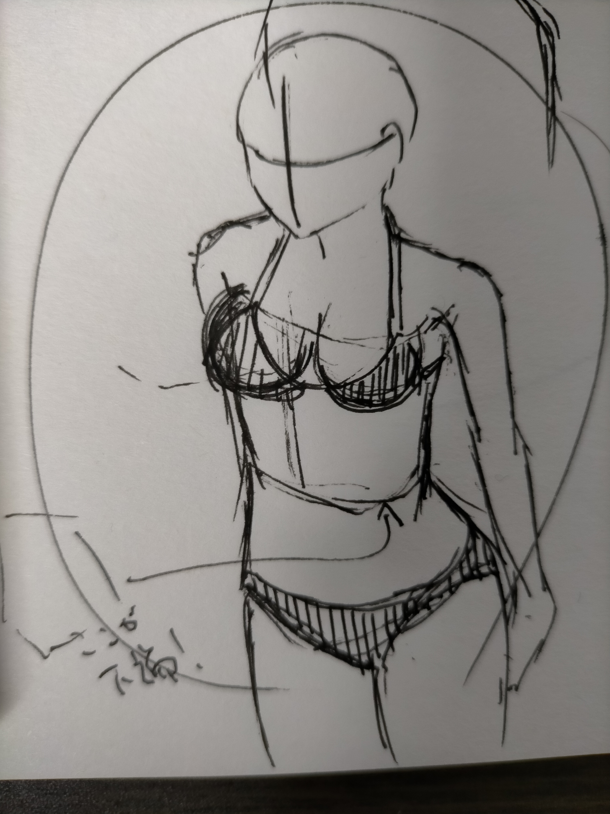
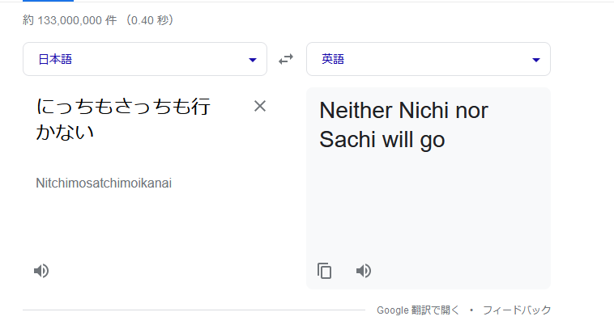
髪、けっこう進歩した気がする
あの同人誌公開されてたのか
「斜め向きの顔でも、奥の横髪は前髪より手前に描いたほうが自然にみえる」、まこと叡智であるなあ
ネットサーフィン
比率がでてるけど1/3と1/8がでてるから目視で24等分ができないといかんということになる
顔のかきかたが付録でついてるんだけど、かなり作図法という感じですごい
横顔、まじめに描いたことないけど髪の理解を深める上で確かに大事な気がするな、いい本だ
facebook、「あけましておめでとうございます。今年もよろしくおねがいします。」がよく似合う。
discord、ゲームの話ができてたのしーい
響けユーフォニアムのアニメ資料見てるんだけど、すごく線が多いわけでもないのに満足感のある髪の毛ですごい
ええ、どのリソースをどのGPUレジスタに関連付けるかまで手動で指定するの…
数学、簡単なことしかやってないのに難しいのですごい
ベルナデッタの髪の毛いい勉強になりそう
多分昨年のテーマが「学位取得・生存」だったので、今年のテーマは欲張って「好奇心の回復」にしようかな
むずかしいAPI、名前から何もわからんので助かる… https://gamedev.stackexchange.com/questions/125407/how-is-a-directx-adapter-different-from-a-device
NFT、なんもわからんけど月の権利書みたいなやつかなと思っている(適当すぎる)
AFAはしらんけどGには割とあこがれておる(つらそうな声も聞くけど)
ぐにゃ
関東、帰ってきてすごい感慨はないけど気候が楽なのはありがたい
そういえば、「悲願千人斬の女」、タイトルが良すぎて気になっている
試しにYouTubeに動画投げてみたがめちゃくちゃ簡単でわらってしまったわ https://twitter.com/ashiato45/status/1473259546194083844
街が起動し始めた
影の入れ方、めちゃくちゃ割り切っててよかった。今回はこれでいく。 https://www.youtube.com/watch?v=IZ3IAxU-HZY&t=387s
給湯器、随分いろいろと壊れていたらしい。これのせいで無駄に電気代かかってたとかだったらやだな。
うーん、家が電気温水機タイプなんだけど、多め設定で正午に水しか出なくなってるのおかしくないか…？今度大家さんに聞いてみるかあ。
ps5戦争に参加すべく出陣したが、昨日あたりに仮カードじゃ買えないルールになっていたので撤収した。
はじめて見たときにはもう成虫だったし、まあ大体寿命かもしれん
夏は台所まわりの虫を食べてればよかったけど冬になっていろいろ探検する羽目になってこうなったのかなあ。わざわざ餌あげても仕方ないんだけど
自分の家でもないから墓も作れんけど…
この半年ほど家のなかをうろちょろしていた蜘蛛が、食洗機の排水入れのなかで死んでいるのが発見され微妙にショックを受けている
絵、結構かわいくなってきた。線の質が良くなってきている。
流石だ
ARアドブロッカー
z3ぐらいなら興味ある
OSSやっていったほうがいいんだろうけど、普通に別にやりたいこともあるんだよなあ…
キャリーヤの話をし、githubで名前売っていったほうがいいのかなあとなった
センスオブワンダーナイトってまだやってたのか
久々に技術系slackにはいってみている(メールアドレスをばらばらで登録してるので面倒くさい)
板タブに手がはりつくのでやってなかったんだけど、そういえば線をひくときは肘から動かせってよく言うな。試してみるか。
絵、めちゃめちゃよくなってきた
髪がなんかカツラっぽいなあ。隠面処理に失敗してる感じがある
エアコンの掃除のためにニトリの踏み台を買ったんだけど、脚立よりも素人に使いやすい感じでよかった
別にわるいわけじゃないんだけど、なんとなく絵柄がアメリカンになってきてしまって好みでなくなってきてしまった…何をまちがえた…
うーん、かわいくなくなってきた
@psi あ、すいませんもう買いました(たしかにこれだと分からない)。ずっと毛先のパターンが単調になってしまうというようなことに悩んでいたのですが、毛先のアレンジパターンをいろいろ書いていて、それぞれどういう機能があるかということについて論じていたり、良い例と悪い例とが並べて描いてあったりして知りたいことが書いてあると思いました。絵がラフで参考にならないという意見もあるみたいですが、むしろ線が少ないほうが形に集中できて私にはありがたいと思いました。これをもとに絵をかいてみてまた良い点悪い点気づくこともあると思うのでそうしたらおしらせします。
@psi それです。前から気になってはいたんですが、欲しい気分が数ヶ月続いたのでそろそろ買うかとなりました。
髪の描きかたが知りたくて、もっと言うと「何を描いたら髪を描いたことになるか」を知りたいのでいい本が出たなあという気がする
脚立をかった
日記つけたい気もするけどここでええか
文系の本、一文ごとに「え？そう？」となってしまう上に自力では解決のしようがないので人と読むものなのかなぁとなっている
たのしい話もあるのでtwitterやめる気はないんだけど、twitterの外に避難所があるのはいいことだと思っている
理系文系は日本だけだって言うけど、ファインマンのあれとか読むとアメリカにも理系文系ってありそうに見える
目的がどうあれ絵師が絵をかいてる動画みるのたのしい
髪のかきかたはいい加減ちゃんと調べるか
C++STL読みたい気分になってきた
今回線の太さ気をつけたいんだよなあ
なんか心があれなので本でもよも
マイニューギア(20cm雪平鍋)してる
まあ普通に社の資料よめばええか…
ビルド待ちみたいな時間をもうちょっといい感じにすごしたい
柿、うまい
家だとyoutubeとかだらだら見てるけど、出かけるとちょっと数学書がよめてなんだか楽しいわね
左手がかけた気がする
ねむいわね
仕事であふれかえってるようなイラストレーターもインターネットお絵描きをするのですごい
ニュースもテレビに比べていらん情報が少ない気がするし最低限を知るのにありがたい
NHKFM、雅楽やら耳なし芳一やら昔のアイドルソング(70年ぐらい？)やらいろいろやってて、意外といいなと思うものもみつかりおもろい
一生懸命やるってどんなんだっけ…
コミケどうしようかなあ
絵をかいてみてはじめて、同じキャラがある設定画では手袋をしていて別の設定画では素手であることに気づいた
消費って言ったときお金のやり取りのことだと思ってたんだけど別種の消費の話をしてそう
いいかんじになってきた
マンガアプリの画質、なるほど大変なんじゃなあ
https://twitter.com/aoiyuki2000/status/1455594016016257026?t=-I45LELtI5-bL-htZjkmhg&s=09
https://twitter.com/aoiyuki2000/status/1455594016016257026?t=-I45LELtI5-bL-htZjkmhg&s=09
ps5買えんかった(初戦)
結局自分でかんがえたポーズにしてしまった
漠然とかわいいポーズにするか
大学でやるようなこと、難しすぎてすごい限定的な場面でしかうまく行かないんだけど、それはいま使い熟せてないだけで30年ぐらい経ったら割り算ぐらい当たり前で便利なものになるのかなどうなんだろうと思うことがある
絵、練習フェーズとなんか描くフェーズを繰り返してるんだけどそろそろなんか描くか
院試ではその辺の問題出たけど
計算量みたいなのは越しはわかるけど、キャッシュヒット率を考えたプログラムみたいなのはまじでわからないし何で練習していいかもよくわからない
あんなに子供たちに人気なら見てみるかと思って最近ヒカキンTVを見てるんだけど、無毒でテンポの良いテレビ番組感と、「子供の科学」感があって結構良い
@psi 就活してたときの気持ちとして、大学に長居しすぎて会社でやっていけるんだろうか、何もできないにしても一番できることって実は研究であって、アカデミアにしがみついていたほうが良くはないにしてもベストなんじゃないかと悩んだことがあった。(いま再現しても正確な再現には多分ならないんだけど)
終業後にだらっとYouTubeかけながら絵の練習したり、おやすみに一人やたまに他人とゲームしたりして、たまに気がむいたときにふらっと論文書くっていうのができてるの、ほぼ理想に近い
仕事はしてるけど気持ちなんとなくのんびりしている
え、すごい
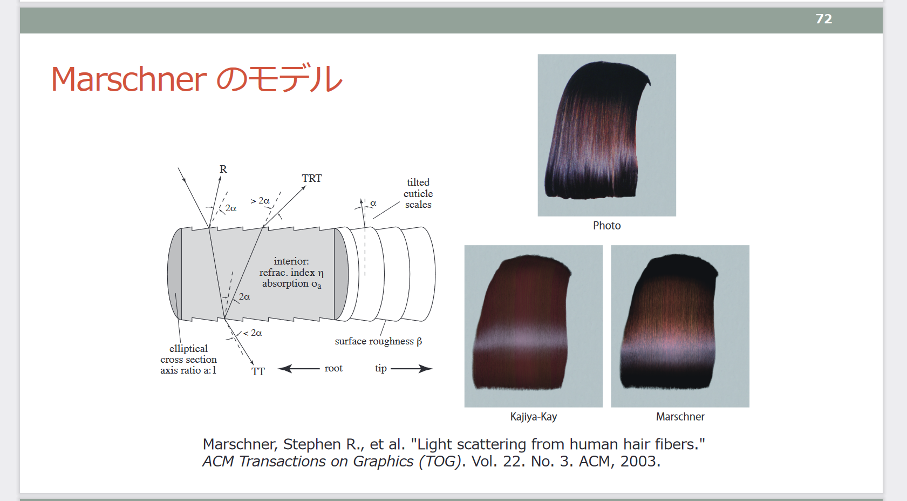
有限群のおもちゃ箱 (8) 有限体上の行列と位数27の群 https://youtu.be/4i7w41tB27w @YouTube
より 最近 龍孫江さんが有限群を分類しつづけていてすごい。有限群の分類って大学数学らしさがありつつも高校ぐらいから割と無理なく手が届く範囲だしいいテーマだなと思う。
より 最近 龍孫江さんが有限群を分類しつづけていてすごい。有限群の分類って大学数学らしさがありつつも高校ぐらいから割と無理なく手が届く範囲だしいいテーマだなと思う。
白菜、うまい
全く自分でやる気はないけどおもろいよなあ
柿、うまい
もともとFavoriteだったし、発言者に通知することを意図したシステムじゃなかったのかな
レーベンシュタインオートマトンだ
かわよ
凍結が話題になってたので久々にtwitterで広告してきた
めも
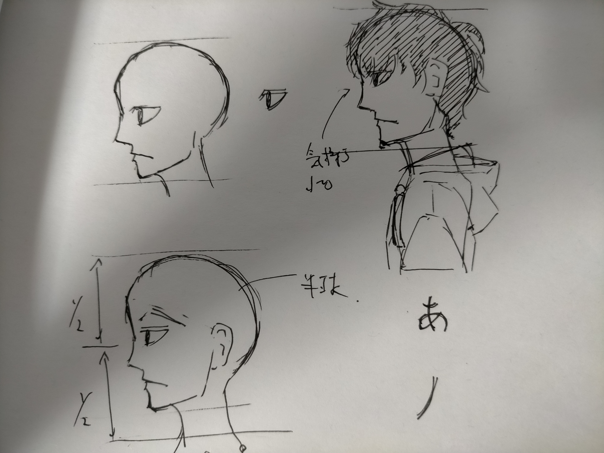
spir-vやったらGPUのきもちわかる？？
家をあさったら多分2007年あたりの日経ソフトウェアの記事で「いまエンジニア界隈で話題の新サービス、Twitter！」みたいなやつがあるはずなのでそのうち探したい。
適当にやったらなんかいい感じになった
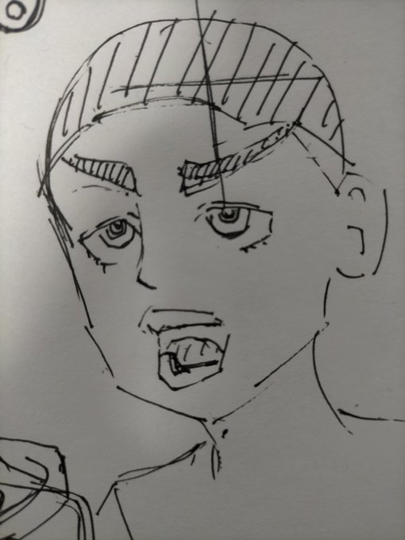
なんとなく紙に描いたら割と左右の均整が取れたので、板タブで水平/垂直に描くのが難しいぽいということが分かってきた
そんな…twitterはミニブログだったはず…
フィギュアの脚は長く作られてるっていうの、眼球がレンズだっていうのと関係あったりするのかな
まあ講義資料だけで講義の内容わかろうっていうのは無理があるわな
GPU講義いよいよわからなくなってきた
これ（小平邦彦編「数学の学び方」）
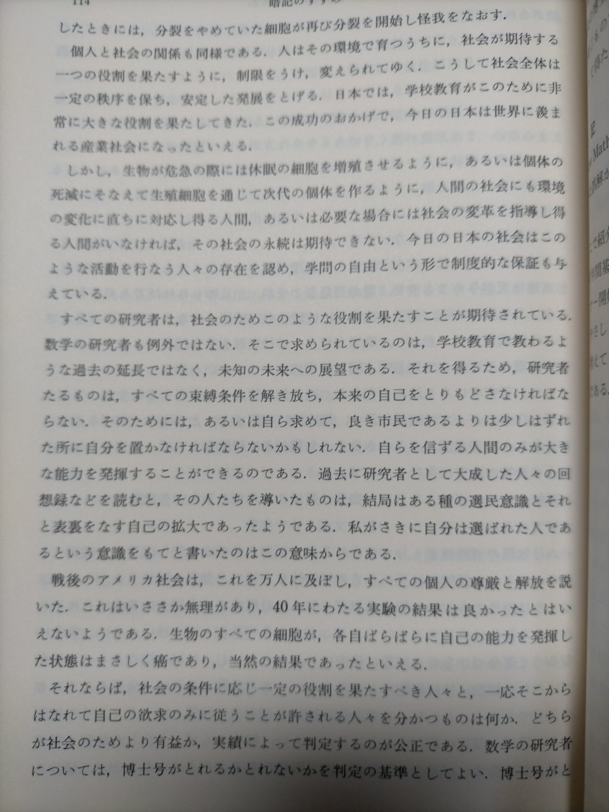
この感覚わりとあるなあ
昔はメールウェアとかあったなあとなる
最近ペンタブの設定なおしたことでめちゃくちゃ気持ち良くかけるんだよな
メモ
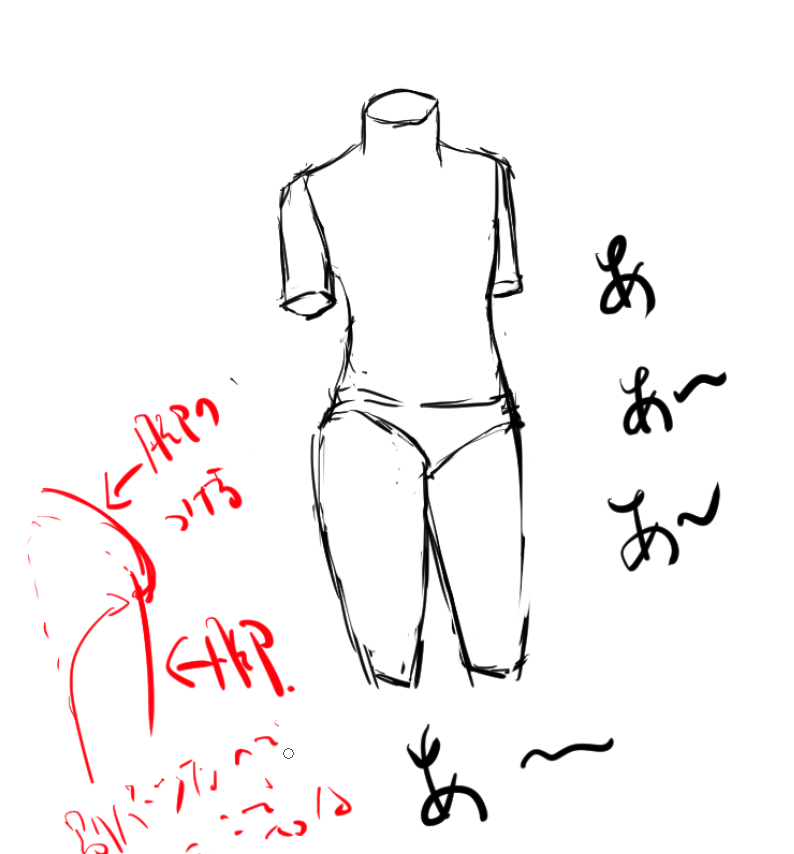
ナゾロジー、スプートニク感あるけどあれなんなんだろう
最近のTwitterの「いまどうしてる？」まじで電車の吊革広告すぎるな…
実はなんでスマホからFAX送るのが結構大変なのか理解していない。当然できてよさそうなものなのに。
お、qnighyさんだ
本当はそういう過去のゲームとの決別や新しいゲームとの困惑を伴なう出会いを楽しめてこそゲーマーなのかもしれない。
首都高バトル0は、メーカーが残っているとはいえもうスマホとパチンコしかやらないぽいし、車メーカーも時代に合わせてそういう違法行為をするゲームに自社製品が使われるというのを嫌がるようになってしまったので二重に厳しい
ちゃんと新ハードでもリメイクしてくれるならいいけど、やっぱりメーカーがいなくなってしまって権利が飛ぶとどうしようもないからねえ
新マシンになったので昨日久々にPCSX2動かしてみたんだけど、ソフトウェアでの描画でも結構ちゃんと動いてて時代を感じた。ハードウェア描画(多分グラボ使うっていう意味だと思う)使うと描画が乱れるのよね。
にじさんじのオリバー教授、専門は「バーチャル文化人類学」って言ってたような気がするんだけど(該当動画は探せなかった)、微妙に本当に研究として成立しそうな気がしてきた
確かにcpu使用率も問題なかったしスワップも問題なさそうだったんだよなあ。何だったんだろう
うーん、うちpleromaしかやってないのにあの有様だったんだよなあ。流石に月300円マシンには無理があったということかなあ
うわ、いま自分でlightsailでやってるほうが金かかってると思ったけどそりゃそうか
わしは普通に文法に沿ったかわいい絵が描きたいどす…
現状のpleroma界隈、2008年頃のtwitterに割と近い気がする。あの頃よりもっとみんな悲壮感漂わせてるけど、それはあの頃自分が高校生でお気楽だったからだろう。
pleroma、AWSにそういうAMI用意しておけば(お金はらえる人は)みんな使えるんじゃないかなと思ったけど、意外とトラブルシューティング力がいるのでやっぱり障壁がありそうだなとなった。
襟、折り返し部分なしで一旦描いたほうが楽かもねとなった。
あきらかに複雑なクエリでタイムエラーになってたしやっぱり処理能力のもんだいだったぽい
とりあえずエラーはなくなったな。
みたかんじ、DBの量が増えてきて時間内にpleromaの要求にpostgresが答えられてないみたいな感じだったので、そもそもマシンをアップグレードして月300円→500円にしてみた。
一旦とめまーす
あー、pleroma側のタイムアウトにひっかかってpleromaが諦めてプロセス閉じちゃうからこうなるのかな。
なんだろうなあ、たまにpleroma-postgresの通信が失敗して、pleroma側が作ったサブプロセスが通信中に落ちちゃってpostgresが返答できずbroken pipeになっちゃうのかなあ
え？なおった？
512MBマシンじゃ限界なのかなあという気もするが原因しらべないことにはねえ
ログぱっとみじゃわからないんだよなあ。次おちたら真剣にかんがえるか。
あれ、昨日まで落ちてて再起動かけてもなおらなかったんだけどいまみたらpleromaなおっておる
襟、首との相互干渉もちゃんとしないと変になるしむずかしすぎる
リツイートなかったらなかったで古きよきRTとかQTをしてただけな気がするのであんまり根本的な解決ではないような…
この点線が見えるようになりたいわね
襟の構造を理解したい
3Dで自分を作ろうとするVTuber、哲学的何かを感じる https://www.youtube.com/watch?v=VqdSWaQpVyQ
システムはちゃんと手入れをしないと稼動しないということが学べるpleroma、小学校の生き物係的なよさがある(やったことないけど)。小学校もサーバー係とか作るべきでは(？)
テクスチャの講義資料、むずかしすぎる
nginxでconnect() failed (111: Connection refused) while connecting to upstreamしてpleromaが落ちてたけどsudo service restart pleromaしたらとりあえずなおった
この人のワンポイント、いいところ突くんだよなあ https://www.youtube.com/watch?v=EOyEsgAWxgA
ピッカマンさんだ！
一回目はただのバファリン使ったし二回目はナロンエース使ったけど役に立ったのでその辺でもなんとかなります
現代、まじでお絵描き講座がYouTubeで見られるようになったのありがたいんだよな。同様に数学とか英語とかを楽しんでる人もいるのかもしえない。
講義第3回でテセレーションの話になるの、現代っていうことか
poipiku開くと「は、これ自分で描いた絵か、うま…」となる。幸せな段階ですな(色を塗ると流石にもっと下手にみえる)
カメラ空間からクリップ空間への変換、図だけ見て勝手にzについてはアフィンな変換をすると思い込んでたんだけど、実際は非線形でそれでzの間隔を縮めてしまってz-fightingを起こりやすくしてしまうと聞いて実際確かめたらそうだた。こわ。
第3講の23ページから24ページの間でswitchがどう処理されたのかがわからず寝てしまった(switchしたとき、そのあらたな書き込み先にswitchがないならswitchをつむ、かなあと思ってるけどそうしたらRasterizerにNextを積む意味がない)
@psi http://graphics.cs.cmu.edu/courses/15869/fall2014/reading これです(アーキの話よわいので苦労している)
おもろい
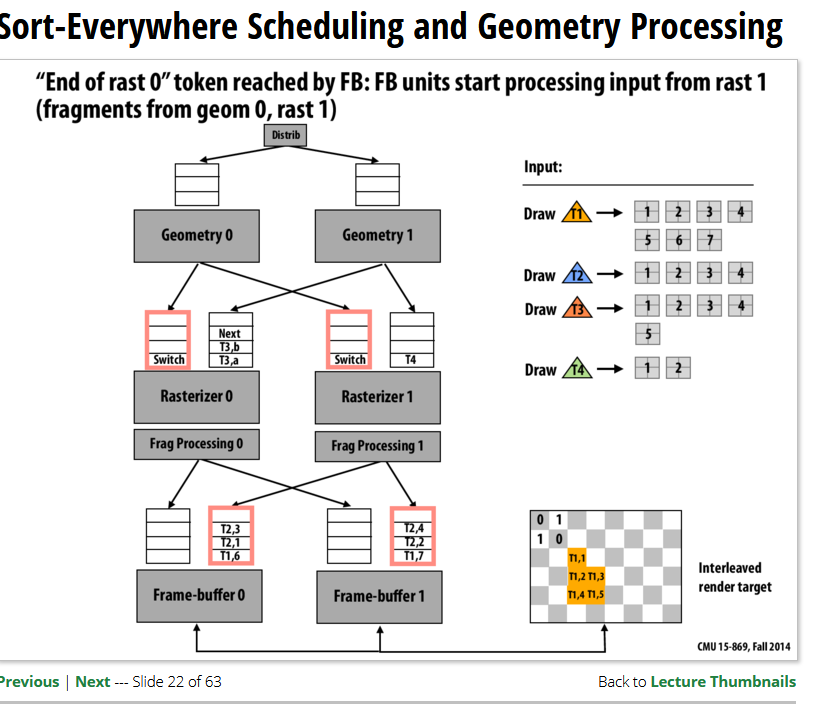
ちょっとグラフィックスの勉強をする必要があるので久々にwgld.orgでもよみなおそう
ハンダゴテカフェみたいなのでミシンカフェありそう
unityインスコしてる
東京、なんだかんだテンション上がる（毎日いる必要はないけど）
https://twitter.com/kbc_koganei/status/1437572688197738501 文系の人のかく論理学おもしろいので見てみたい
おえかき本みてて、Tシャツのソデのしわがどうしてもうまく描けねーとなってたんだけど、鏡をみたらそもそもこんな線は生じていなかった。絵が心地良い嘘であることよなあ(体型によってはそういうこともあるのかもしれない)
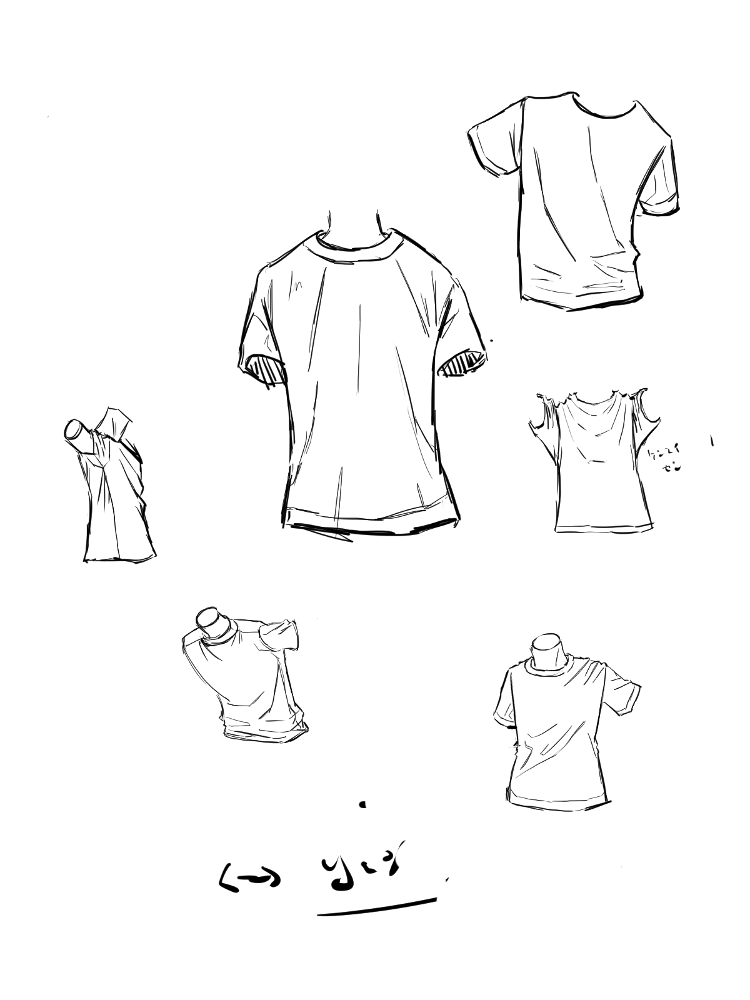
服の模写してるけどおもろいわねえ
しかしこのキーボードええな
昨晩これみてたけど爆笑し、かつこれだけよく作ってこの値段になるのかあと思った(まあPortalとかいつも安いし、市場が厳しいというよりゲームはそういうものなのかもしれない) https://www.youtube.com/watch?v=Bm-FXjyu9nQ&t=0s
かわいい絵かきたいんだけどこれは性なのかねえ。まあ性でもいいや。
健康診断絶食からの昼食からの血糖値急上昇からの夢現勤務だったが、夕方急激に霊感が高まりバグの急所を抑えたいいコードが書けた気がする
なぜか日本向けの話しかしてなくてアメリカでやってる商売はなんなのと思ってみてみたら情報技術と何の関係もなかった(アメリカで儲ける気はないってこと…？)
かわいいキャラを見て絵をかきたいという素朴な感情になった
人気のあるキャラ、実際かわいいので描いてても楽しいのじゃが
分かってきました…人気のあるキャラを描くと…いいねがもらえる…
なぜかpixivリクエストがきたんだけどまずリクエスト機能ってなに
下から3文字出してるだけなような気も
次は服がんばってみよかな
そういえばこの間、あだしまの絵がブクマもらったんだけど、くれた相手はあだしまの絵ばっかりブクマしてたので多分あだしまが好きな人だったんだ。ありがたい。
やったーイイネついたと思ったがスパムだった(ちーん)
おー、つながってる線をあえて切ってみたらいい感じになった
水着かくの、服かく手間がはぶけてイテレーションが加速するのよいな
ほめぱげ
コンピュータお絵描き、「これ回転したらどうかな」みたいなの気軽に試せてたのし～～
厄憑き苦難死闘踏破(なんでもあり)、怨嗟の鬼でやられた(不覚)
おえかき技法書がプログラミング書に比べてちょっとお手頃なの、スケールの問題なのかなあ
好みのキーボードがほしい、実家にとりにかえりたいんだけど、9月の連休でコロナ禍的に帰れそうかなあ。
別に試験があるわけではないので、「いかにも成り立ちそうだけど別に自明ではなく、証明が必要な命題」をふんふん～って読み飛ばせるの楽しいわね
微分形式、しょうもないのでいいから計算練習がしたいなあ。
へー、黒単コントロールってロルス4積みするのか…
めしつくるか
ねてた
なんとなく呪詛返しで調べてたんだけどデザイン性が高い
ツイッターがあれなのでひなんしてきた
ツイッターでしょうもないのが結構RTいってしまってこんなのでRT稼ぎとうなかったとなっている
昨晩ながしにお湯を注ぎ忘れたらまた現われた…いろいろ対策はしてみたけどこれが一番の鍵らしい…
いいなー。論理学を作る、興味はあったんだけど当時他に読むものあったから買わなかったんだよなあ。絶版になるまえにかっとくべきかもしれん。
YouTubeに投稿できるのは3日に1回とかにしたら世界が平和になりそう（？）
コバエがまた発生しているが、これは周期の問題ぽいなあ。
影のついた絵の模写やってみたけど楽しい（足の長さはミス）
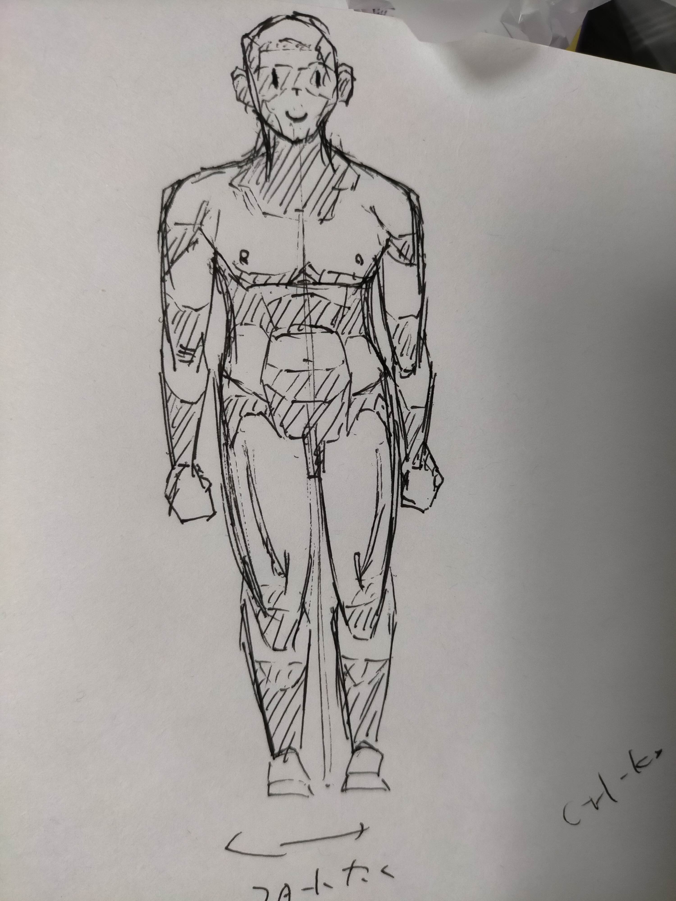
あー、観光業がダメージ受けて宿泊施設が減ったら、いざコロナ騒ぎが明けても宿泊施設めちゃめちゃ値上がりして旅行行けなくなるのかなあ
生ごみ箱に入れる殺虫剤とかないのと思ったらあったわ
うーん、生ごみ箱もっと小さくしようかなあ。
シンクに熱湯入れてるにもかかわらずまたコバエ(おそらくノミバエ)が増えている…シンク以外のエサ場をどこか見つけたのか、単に気温で元気になってるのか…
線めっちゃきれいだなあ https://www.youtube.com/watch?v=GZ1TVs9CNHM
古典、今出てる本に比べて「俺の話を聞いてくれ！」という圧が少ない（気がする）のが心地良いのかも知れない
写真忘れ
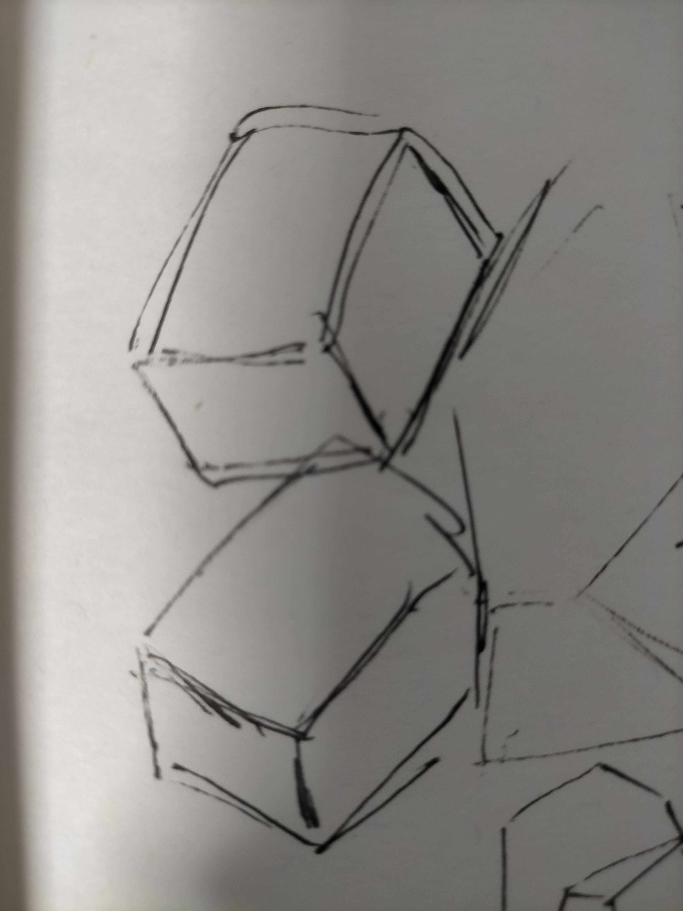
ずっと下の向きだと思いこんで描いてたんだけど上だったんだなあ
やっと向きがあってきた
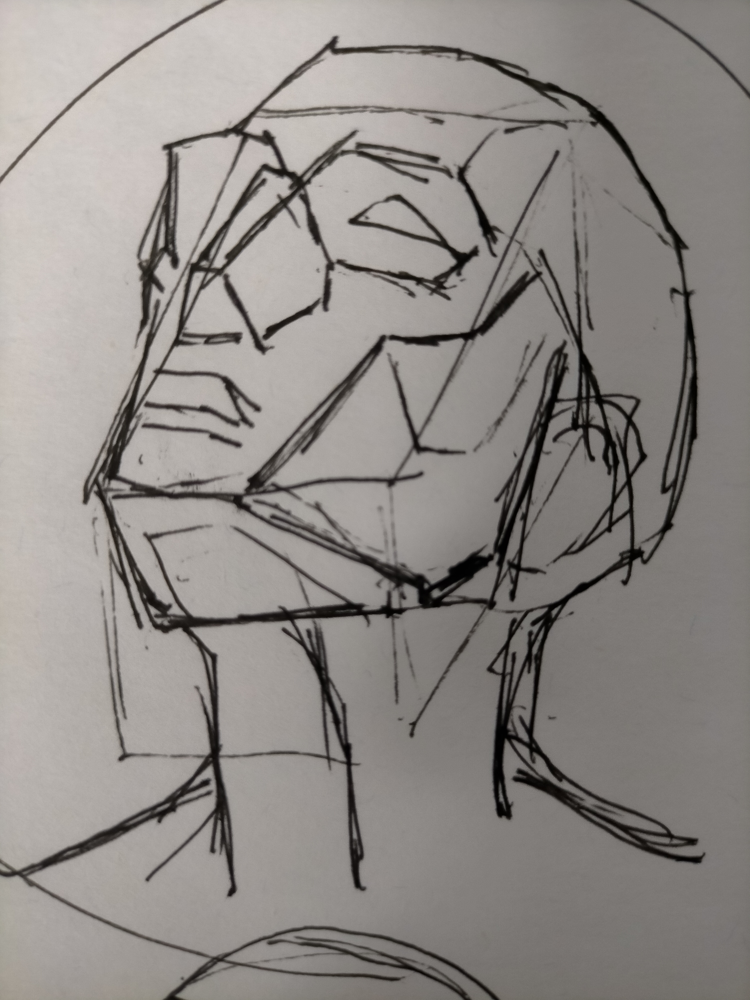
なんかYouTube先生におすすめされて見てみたんだけど、普通に名歌謡曲だったことだなあと感じいっている https://www.youtube.com/watch?v=XazyhnymUQo
むずかしーーー
コバエ氏、どこからくるの～と思っていたがシンクに熱湯注いだら解決した
適当な料理をつくりながらなんとなく論理学の本をよむこの幸せよ
わかりみ
ワクチン、熱はないけどめちゃだるい
多分今年一番おもしろいイベントだわ https://twitter.com/myuuuuun/status/1417150239920717825
脆弱性界隈が実際にループのことはあんまり考えないとかいう思い切りかたで実際に脆弱性を見つけて世間に貢献しているのを見ると、ループどころか高階だの確率的だの量子だのみたいにどんどん複雑にした技法を作ってtoy exampleしか動かないみたいなのやってるのと比べてウーンとなってしまう
ぼんやりしているので競技プログラミングかproject eulerしたくなった
徐々に構造を解析してできるようになっていっているの、たのしそう(ぼくにはとてもできないが) https://www.youtube.com/watch?v=HXlodkJskTY&t=2854s
YouTubeってこういう場所だったよねって言ってる https://www.youtube.com/watch?v=xsn7T3yzBdQ
ふらいんぐうぃっち10が出ていた(よんだ)
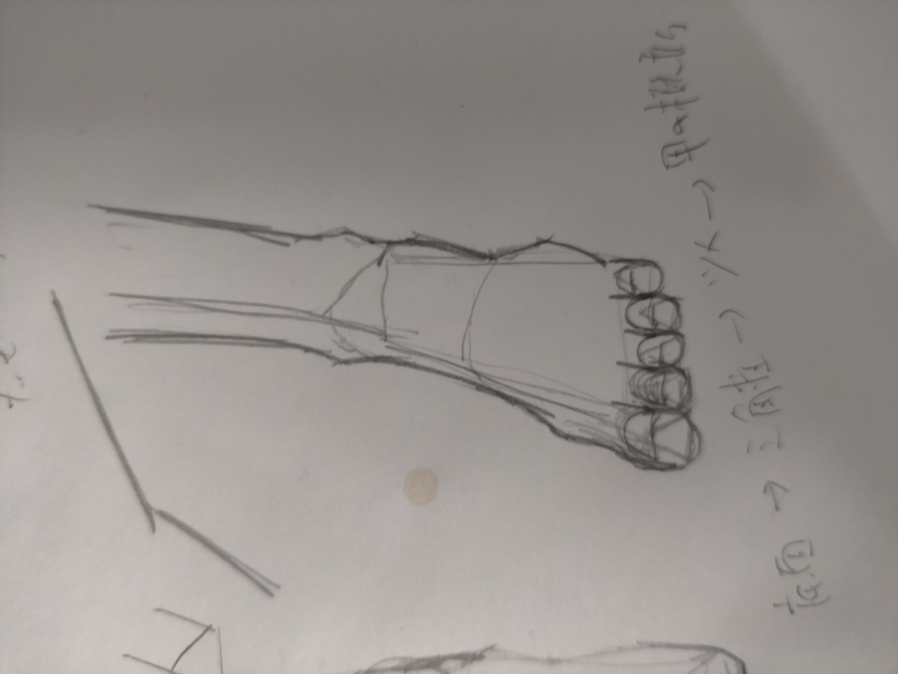
足指を三角柱でとってみる
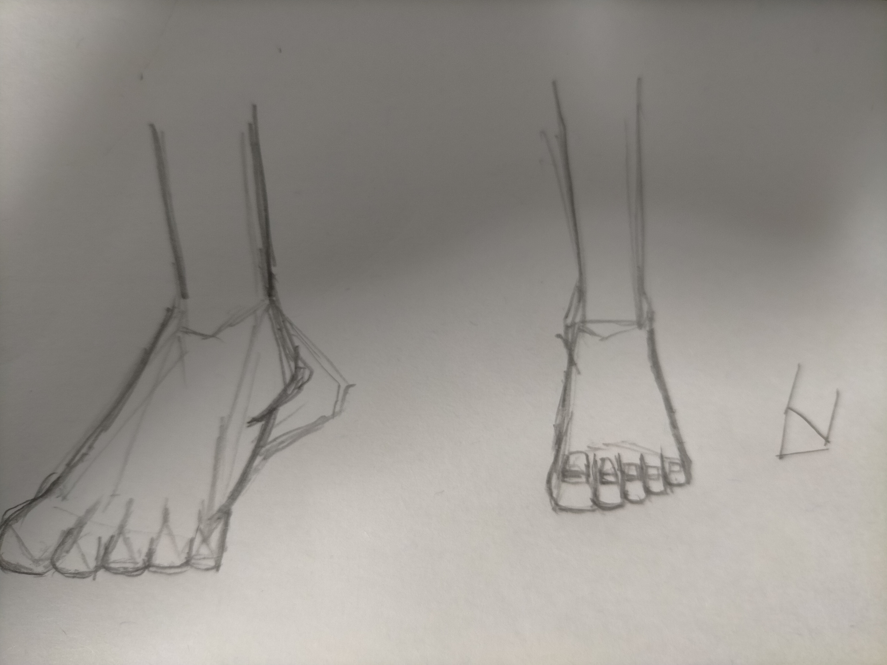
若干マシになってきた
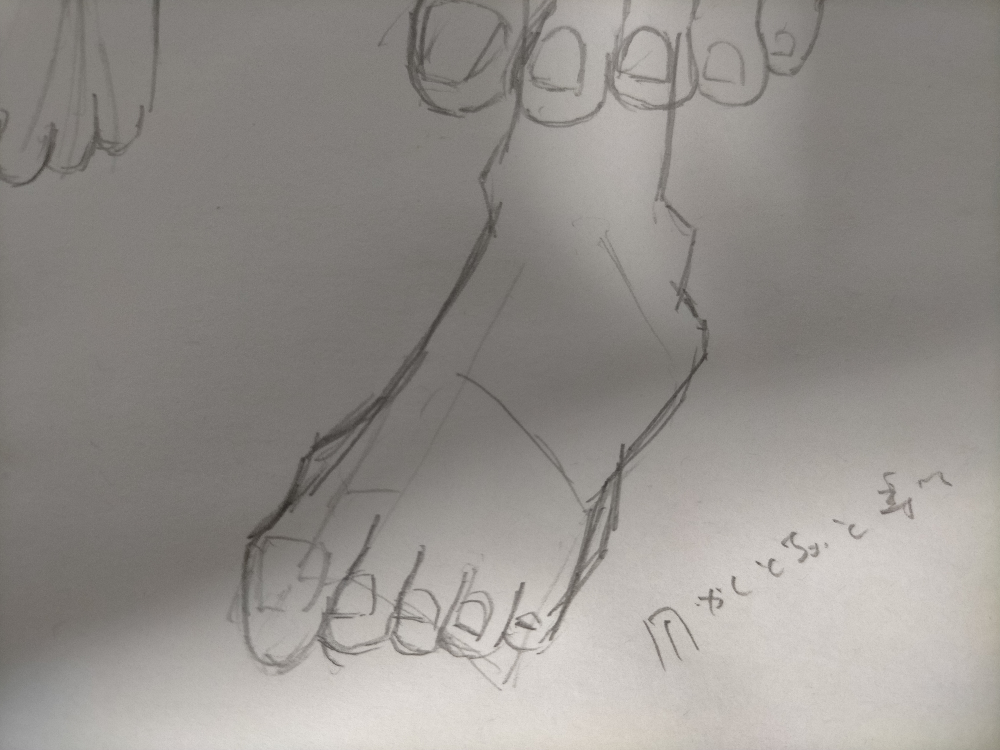
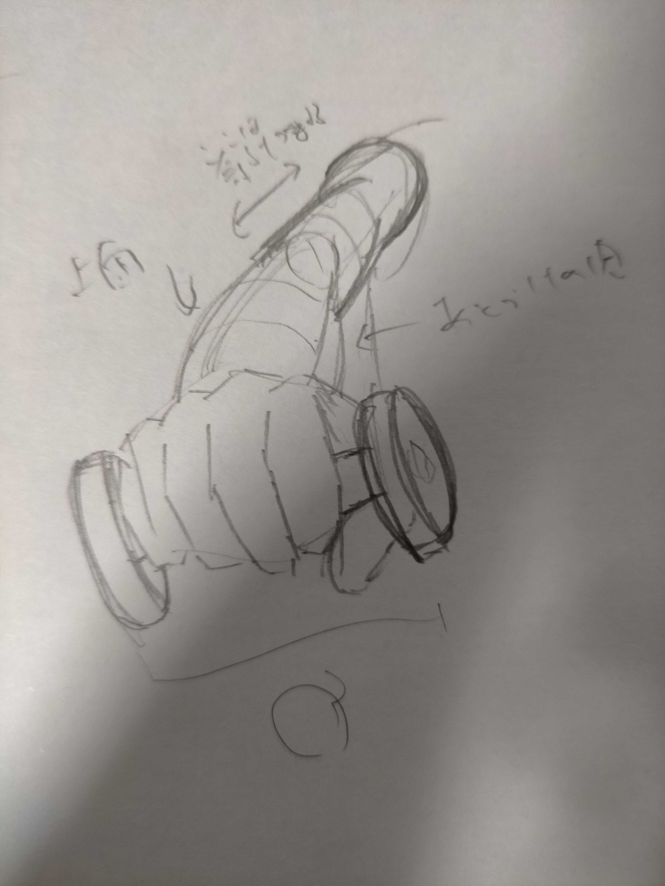
手前のものと中ぐらいの場所のものの大きさが3:1ぐらいになると遠近法として迫力がでる気がするなあ
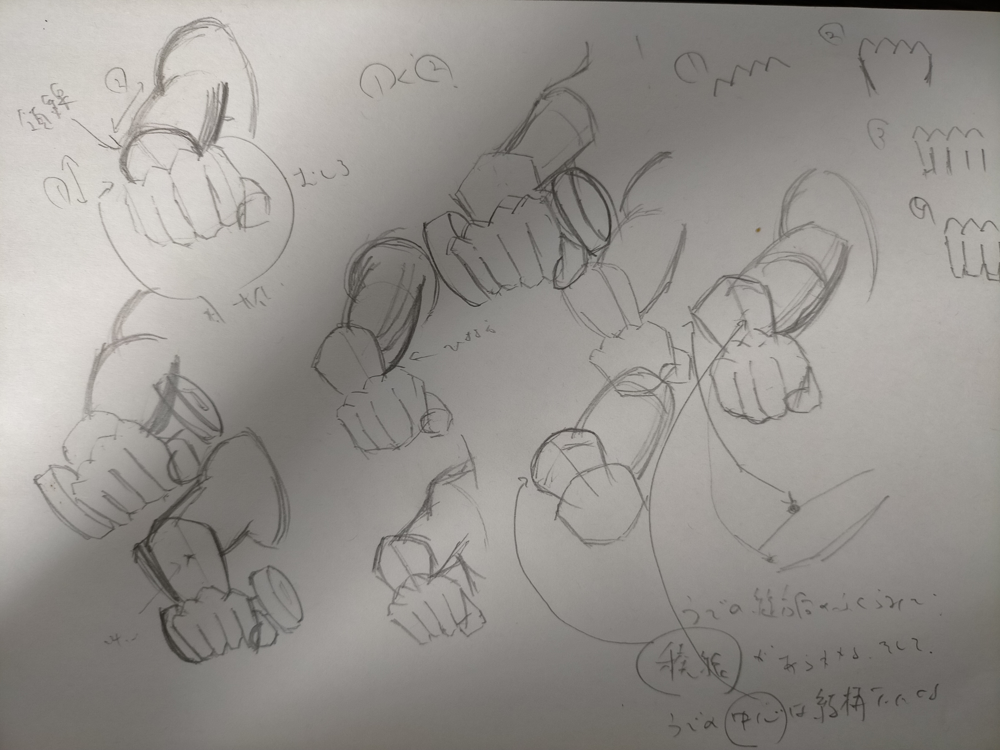
適当にかいてみた。脚とか回転するといいね
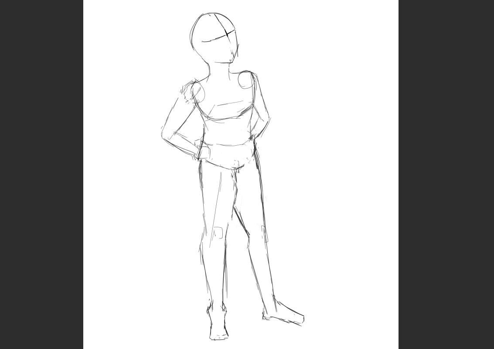
ちゃんと胴の形をかいたほうがええんやなあ
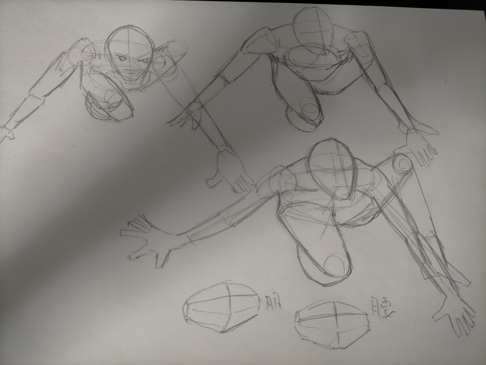
OSレベルから作ったゲームみたいなの、理屈としてはありそうと思いつつも見たことない(まあ見あわなさそう)
込み入ったフレームワーク、「これでもいいけどこれにする必然性なくない？」みたいに思うことがある
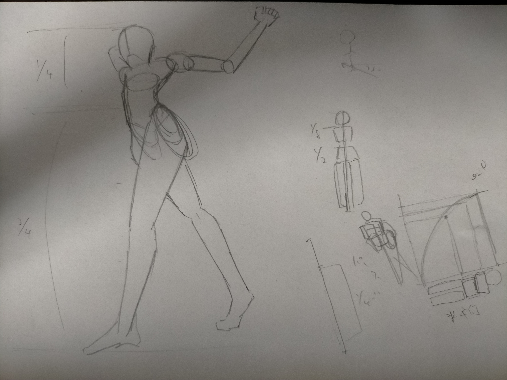
パースのついた絵の模写ができねーと思って試しにメジャーで寸法はかってみたら、(頭頂部～腰の上部):(腰の上部～足)が大体1:3で、えーっ嘘だーっと思ってその通りにやってみたら結構しっくりきたのでひえーとなっている。パースの線つかうとごちゃごちゃするし三角関数でなんとかしたいな。
一般的に言って、どんな場合でも真なることやより善い事柄のほうが、本性上、推論するのもやり易いし、説得力にも優れているのである。
Gameboy Wars Networkの管理人さんどうしてるだろうと思って10年ぶりぐらいに訪問したがちゃんと件のニュースをキャッチしていて感動した http://gbwn.main.jp
百万年ぶりにcgi掲示板に書き込んだ
アリストテレスの弁論術かってきた
安定して稼動してるぽいのでスナップショットをけした
すごいわかる(プレミアム入ってるのでレコメンデーションシステムを逆に使うぐらい気をつかってほしい)
これで復旧したかなあ
postgreが起動してなかった
あああ テスト
スナップショットとれた。やるぞ。
ログの保存とログへの楽なアクセスさえあればIRCが楽でええにゃんなあ…(RFCに書いてあるし…)
VRゴーグルって目に悪いのかな。光学的に遠くを見てる「ことになってる」分普通のディスプレイより良さそうという気さえするけれど…
マイクラぐらいならいけるかもだけど
小中学生は最近はマインクラフトとかハイテクっぽいFPSみたいな感じぽいし、そういうのに全然食指がのびないというのは老いなんじゃろうなあ
twitterはじめたころ英語版しかなかったしなあ
絵、作画崩壊したアニメぐらいのうまさになってきた気がする
え、すごい
そうすると教職課程で「学校でいい先生になるには」みたいなの教えてるんじゃなくて、そもそも学校ってなんで発生したんだっけとか、「テスト」って学力ちゃんと測れてるんだっけみたいなのやるのふふってなる
デューイ実験学校だ
職場がオシャレである必要はないと思っているがトイレはきれいであってほしい
胴と脚の向きがあってないのかなあ
周囲の高レベル技術系オタクでお絵描きに手を出す人が増えている感じがあるのでなんかそこにいきつくのかなあとなる
いま黎明期なものってなんだろうなあ
distortbot騒ぎをみてtwitterもすっかり2ch荒らしというかインターネットキッズというかみたいな人の居所になってしまったなあとなった(中学3年ぐらいからtwitterやってたのでなんとも言えんけど)
これがわしのお絵描きだ！
やっと紙にかいてたパーツをスマホでとりこんだ。PC上でがっちゃんこして絵にしよう。
電子メール、受信サーバが必要なのはわかるんだけど送信サーバがなぜ必要か実はわかっていない
暇のない人が頑張って「暇」を捻りだす
webアプリ、翻訳が一段落したらやる…
やっぱりパーツを動かせるのはいいなあ。描いちゃったものをそのまま活かして絵にするっていうのは上手い人のやることだよ…
わりとかわいい気がする
シレンは謎のExcelシートでバランス調整されてるっていう話だし、やっぱりExcelがいいんやな…
最近プログラマのための圏論の翻訳をやっている(プログラマ界隈の謎の圏論ブームが去った今、落ち着いて楽しくやるのにいい時期かなと思っている) https://zenn.dev/taketo1024/books/850b20937af93b
mozillaにweb入門っていう記事あるの、味わいぶかい(最近込み入りすぎて基本がわからんみたいなところあるのでいいことだとおもう) https://developer.mozilla.org/ja/docs/Learn/Getting_started_with_the_web
Expressがいるぽい
うるせーーfirebaseの話をするな
どれがnuxtの機能でどれがvueの機能でどれがnodeの機能なんだ…
あんまり本は助けにならなそうだった。ちゃんと公式読みましょう
ちゃんとっていっても大体テンプレートエンジンだよなあ
Vue先にちゃんとやったほうがええのかな
nuxt、フレームワークなのか…？レンダラなのか…？(しらべていく)
webアプリ、作るだけ作ってユーザ自分一人になる未来が容易に想像できるが、vectorで5ダウンロードで大喜びする幼少期を送った私に隙は全くないんだな。ガハハ
actix-webのgetting-startedをいままさにやろうとしていたところだった
じゃあnuxtにしてみようかな(フロントエンドはとりあえず裸HTMLからはじめてbootstrapみたいな感じにしてみたい)
昔おめがさんに「ゲームのかけひきってわからん…」って言ったらじゃんけんって言われたことがある(真理ぽい)
M:tGのフリープレイを店でマッチするウェブアプリ作りたくなったんだけど何でつくろかな。Railsは新規でやるには遅い感あるけどビュー作るの楽そうというイメージがある
服、難しい角度から描く羽目になりがちな割にちゃんと工業製品なので対称性が高くて幾何学的に正しくないと変になっちゃうの苦しい
ひえ…
どうしよ、服の練習したら作品になるかな
練習ともつかない落書きしてる
なんか割高な麦茶買っちゃったなあ
あの頃のウェブサービスってなんか商売気があんまりなかった気がするんだけどなんであれでよかったんだっけ(よくなかったからこうなったのか？)
ごはんつくるか
そろそろスパイスカレー用のスパイスが切れるなあ。未開封なら結構もつみたいだしまとめて買うかー。
とりあえず奥行のある人体をなんとかしたいんだな
絵、なにがかきたいのかもわからなくなってきたな
なんかtwitterがひどくなってきたので帰ってきた
親指って意外と長いのでは(？)
なんか絵がうまい人みんなちゃんと調べるのが大事っていってるしMMDで作りたい構図作ってる
pixivにあげた https://www.pixiv.net/artworks/88906653
ほしがきおいしい
ポイピクを更新した
なんか絵の奥行おかしいなあと思ったのでMikuMikuDanceを起動した
新居地域の地方新聞買ってみたんだけど久々に新聞読むと面白いな。Twitterより面白い(？)
登録者数2万人で笑ってしまった https://www.youtube.com/watch?v=vEHwyC5qOsY
@psi 仕事のコードだとそうなりそう。最近趣味でなにか書いてたりはしない感じですか。
喫茶店でなんとなく持ってたスピヴァックの多変数解析学読んでたんだけど、昔全然わからんかった逆関数定理の証明が結構実感を持って読み進められてるので多少は成長しとるんやなとなった
パイプが一次元的なのってunixの都合だっけシェルの都合だっけとなったけど名前付きパイプ使えば二次元的にできそうだしシェルの都合かな。そういうシェルの可能性…？
淡路島に来て、そして帰る
久々に微積分学とか読んでるけど楽しい
寺で本でも読もうかなあと思ったらベンチとかなくて、まあ寺も公園じゃないしなあと思った
ひやごはんがあるとおもったらなかったわ(死)
ていうかPleromaアップデートしないとな。大分ふるいぞ
Visual Studio 2005 Expressが出たのはでかかったような気がする。プログラマがもっと増えてほしいっていう誰かの思惑があったんだろうか。
Mr.マリックチャンネルなんてあったのか、よし https://www.youtube.com/watch?v=PbpGOah38CE
引っ越しわからなくて無駄に焦っとるな
ドラッグストアどこやねん
細目で見ると目がでかすぎるんだよなあ
なんか色調補正かけたら急に良くなったな
色をぬると白目がどこかという線画にはない情報追加しなきゃいけないんだけどそこでおかしくなる
先にもっと線整えないとだめかなあ
色塗りまじでわからん
あー、よく本で「エアブラシを使います」とかでるけどようわからんしみてみるか https://www.youtube.com/watch?v=Qn2OXm3Q_kw&list=PL_B-UPbBHi7R6j9s53mdW9Vcqzp7UGrH8&index=4
PeerTubeなんてあるのかー（強サーバーじゃないとつらそう）
ペン入れ面倒だし、重ね線が醜いっていうだけならラフの線を消しゴムで削って線画とするみたいな方法でやってみようかなあ。色塗りの練習がしたいのじゃ。
絵、彩度あげながら肌色を自然に保つのどうするんだという感じだ。clipstudioの肌色パレット今度使ってみようかなあ。
絵、最後に彩度と色調いじったらいい感じになったので今度からやろ
Cookieのこと実はよく知らんなと思って調べていた。トークン生成どうやってるんだろう（用途によるだろうけど）
図書館に本返さないとなあ
そのぐらいやっちゃってもいいっていうの意外だなあ(手が意外とでかい問題みたいな) https://twitter.com/wakura081/status/1361131961473851393
立体感がいままでよりあるのを目指している
実践としてなんかこういうパース効いた絵をかんがえてみるかあ
なんか箱がならんでるだけで可愛い気がしてきた(？？？)
うーん、どんな物にも弱いパースがかかっているのかやはり…
https://twitter.com/RtbWitch/status/1342032272774590464 これを調べていた。2点透視の箱で捉えられそうな感じかなあ。
パース定規いじってみてるけどここまでやるならもう3Dモデリングソフトで箱置いたほうがよくないっていう気がしてきた
一回一応のところまで描いてみると絵の勉強がしたくなるわね、今日は好きな絵のディスアセンブルでもしよう。
かいた
@psi 最初言おうか迷ったんだけど、写本用途とかだったらパンタグラフ式拡大器を等倍にして使ってたりとかはしそう
なんかいいかんじだ
なんかTwitterの週刊誌度が上がってきたので退避
@psi わかる(そしてすごい暇なら作ってみたくもある)。そしてやっぱりコピー機はこれ以前にあったのかというのは機になる…
a⇒bの定義は「x≦a⇒b iff x∧a≦b」なので、日本語にすると「aと∧を取ってb以下になるもののうち一番でかいやつ」みたいな気分なのかな
@psi ファックス？
完全に返り値の持っていくということに拘泥しなければエラーログへの書き込みっていうことでいいかなあという気がする(そうでなければWriterモナド的なのかなあ)
線画がいい感じになってきた気がする https://poipiku.com/451735/3699186.html
Haskellやりなおしたいなあ。いまならもっとしっくりくる気がする。
クリスタ、ミリペン使ってみようかなあ。リアルではミリペンとかステッドラーのサインペンとか結構好みだったし。
構図変えて書き直すかと思ってたけど、一旦線を細くして線画作りなおしてみるかという気になってきた
今度はもっと強烈に立体感をつけることを意識して描いてみようかなあ。
ポイピクを更新した
まだ買えてないけどyabaitech tokyoの今回がSATソルバらしいので気になっている https://yabaitech.tokyo/techbookfest10/2020/12/20/techbookfest10.html
3年ぐらい使ってるノートPC、全然つかってないF2キーがきしんできているのでそろそろきついかもしれない。昔のノートPCはキーボードだけ交換できたんだけど、最近のはアイソレートになってそういうのも難しくなった気がする。
世の小学生、マイクラサーバ立てたいときどうしてるんだろう。クレカないとAWSはきつそうだし。
万年眠い
またtwitterが地獄に…
1日目がうますぎるのであまりダメージが無かった
あと左右反転
線をとってみるとなんか線が少なすぎてなんだこれってなることあるけど、それをもう1回なぞると結構いい感じになることがわかってきた
ポイピクを更新した(かわいない？)
ポイピクを更新した
鼻、くの字にするよりかは上端か下端を線1本で描くのがいいのかなという気がしてきた
MTG熱が若干おさまって(面白いけど)、また絵の練習がしたくなてちあ
しかしあれに関しては中途半端に真似しても仕方ないということがわかった
といいつつ流行ってるデッキを持ち合せの範囲でやってみるのもおもろいな
MTGアリーナやってみてるけど、「稼ぎ」があるモードだと本当に皆同じデッキを使ってきてデッキ構築の楽しみとは…となる(勝負事が結局どこかに収束してしまうのは理解している)
@psi 一頃jekyllでやってたけど割と便利でした(なんでやめたか忘れたけど)
@psi secretなgistとかたまにつかいます(自前の世界でやりたいという話？)
うーん、人体の側面わからん、
ふだん瞳が大きい絵しかみないから気づかなかったけど、こういう絵をみると目のなかに落ちる影の役割がわかって面白い気がする
めがねかえたら快適だ
むずかしいにゃんねえ
こういうの、大きな構造に細い枝の毛がくっついてると思ってたんだけど、むしろ大きな構造に穴が空いてると解釈したほうがいいかもしれないという気がしてきた。いつもこういうのをつけたしで描こうとするとなんか本当に後付け感がでてしまう。
最近のtwitterのnotificationなんかてきとーでない？
おもしろそ
俺は…釜飯屋の看板の下で、天使に出会ってしまった…
イニD、ニコニコで見たいアニメだな…
計算機降霊学…
安達としまむら、めっちゃ良いが人におすすめする感じではない(そもそも人になにかをすすめることあんまりないけど)
なんか急にインターレースGIFの仕組みが気になった
Greek Mathematics Olympiad | 2008 Q2 https://youtu.be/DV4Xfn951YQ @YouTube
より 普通に感心した(まあ得意な人に言わせれば定番なんだろうけど)
より 普通に感心した(まあ得意な人に言わせれば定番なんだろうけど)
しかし今日のカレーうまくいったなあ
「彼女たち、特にしまむらの気持ちが定着して、視聴者に表現できるところまではいけたと思うので、僕はベストな最終話になったと思っています」いいな
pixiv、フォロワーの一部がスパムアカウントとして停止されてもフォロワー数自体はそのままになってるのかなという感じだ(androidアプリからみるとスパムアカウントの名前までは見えるが、web版だと見えない)
安達としまむら、声が完全にあっているという感じでよい。面倒くさがりだけど社交性高い感…
そもそもリモートワークみたいな身分ではあるんだけど、コロナ禍でリモートワーク推奨みたいになって積極的に家にいるようになってからは、ラボの床で寝るとか眠いからコンビニで買い食いするとか、議論が白熱してしまって晩御飯を変な時間に食べるとかいうことがなくなって大分健康的になった気がする
ねよ
安達としまむら、横顔が印象的だ。一時停止して画像フォルダにつっこもうかな。
なんとなく落書きしていた
あとなんでアニメってブルマ多いんだろう、世代なんだろうかって思ってたけど模写してみて分かった。あれ描くのが楽だわ
複雑であることが大事なんだよなあ
アニメの服のしわまじでわからんなと思って模写したものをじっと見てたんだけど、起伏を表す陰影と服の皺をあらわす陰影のxorとるといい感じになるのかなあとおもった
うーん、全体的に道具の性質ではなくて使い手と道具との間の関係の性質に注目してるんだなあ。affordanceにせよ「知識」にせよ #design_of_everyday_things
LNCS12頁は…
Xreaってなついな
環論：剰余環の極大イデアル https://youtu.be/O332oj_jDaU @YouTube
より みた。こういう具体例をぺちぺち調べていくの見るのいいなあ(自分でやる時間はもはやないのでながらでゲーム実況感覚でみている)
より みた。こういう具体例をぺちぺち調べていくの見るのいいなあ(自分でやる時間はもはやないのでながらでゲーム実況感覚でみている)
「The Design of Everyday Things」、2章に入ってなんだかつまらなくなってきた…
うーん、デスストランディングの道の工夫はあれはsignifierと思えるのか
うーん、affordanceという意味ではWindows 95とか98のボタンのほうが良かった気がするな
やっぱり調子悪かったのか
ごちうさの街、洗濯ものとかどこで干してるんだろう…
dアニメストアにごちうさはいっとる
実装を思い出している
ボルダリングって問題作った人は解けるのかな
やっていくか
ぬーん
ゲームしてえ
やきおにぎり、手作りすると大変らしいということが調べてわかった
おにぎりせんべい食べてえ
カールうすあじ食べてえ
レビューこねえ
いつかテレビで爆笑問題さん(だったかな)が言っていた、「次のお札の肖像はスポーツ選手になるだろう」っていうの、かなりいい線行っている気がする
We regret to inform you that your paper,
南無…
雑トークを終えた
クレープ食べたい
吉野家で飯をたべて財布にドルしかなかったのでびびったがpaypayのおかげで事無きを得た
予備審査の通知が来て恐怖で泣いている
未完成のものを伝わるように話すの、大方手応えないし嫌なのよね
おえかきやってるとpixivで良い絵にであったときのよろこびが深まる気がするな。good。
phase 1 rejection、明日だった(AOEずれを忘れてた)
昔のゲームは紙の説明書入ってたからいいけど、最近はじめた人はポケモンの相性表どこで見るんだろう…
ポケモン、英語設定で遊んできたので実況が常に新鮮なきもちでみられる(ポケモンの英語結構むずかしいのよね…)
英語の数学書、わかりやすいんだけど本がでかくてこまる
ヒプノシスマイクちょっとおもいろそうだな…
ていうかpleromaのアップデートしないとな(来月ぐらいやるか)
URLのあとに全角空白はいるとURLにしてくれないのか
目の塗り方！アニメ塗りとギャルゲ塗りや流行りも！ | でざいま
https://designmanga.com/eye-how-to-make/ なるほど
https://designmanga.com/eye-how-to-make/ なるほど
あ、先に履修届だすあ
目の塗り方！アニメ塗りとギャルゲ塗りや流行りも！ | でざいま
https://designmanga.com/eye-how-to-make/ なるほど
https://designmanga.com/eye-how-to-make/ なるほど
うーん
うーん、真剣に考えたらよくわからなくなってきたな
同意のことをアグリーとは言わないけど、上界のことはアッパーバウンドって言う
あれ、第1段階リジェクト通知明日やんけ
やっぱりtwitterのトレンド機能よくない気がするな…完全に電車の週刊誌の広告みたいになってしまった…
purerefっていいのかな
雑トークのアブスト書いてるが雑トークなのであれ
Amazonプライムビデオよくやった。流石にポテトチップスサンドイッチよりは凝ったものつくりそう https://www.youtube.com/watch?v=F-glN3ReMrw
適当に単位切った上で
あと目の上の線が太すぎだと今は思うな、見ずに模写してみるか
うーん、塗りの模写もしてみるか、どうするか全然わからんけど
先生「なんで不登校なんですか」
船で通学する生徒「不凍港が、ないから…」
船で通学する生徒「不凍港が、ないから…」
ももも
うっかりtwitterを開いてしまいアカデミアマウントバトルでしっかり気分悪くなった
カボチャとココナッツミルクのカレーをつくった(うまい)
あ、シナモン買おうと思ってたのに忘れた
結構typoあるなこれ
PCなしでできる作業はPCなしでやったほうがいいなあと思った
「不都合」って書こうと思って「不等号」って書いてしまった…
うーん、かばんにひっつかれたりして家に持ち込むと大変だし移動するか
久々に近所の公園に来たら毛虫がすごいいっぱいおり秋の訪れを感じる
しかしポイピクはいいよなあ。フォローはできるけどフォロワー数も出ないしフォロワーが誰かも分からないというのがとても健康的だ。いいねも誰からもらったかわからない（ひょっとしたら運営が付けてるかもしれない）
いうて悪くない気がしてきた、縮小すると目にゴミが入ってるみたいなだけで
https://www.youtube.com/watch?v=h2WESb6I9hw&list=PL_B-UPbBHi7R6j9s53mdW9Vcqzp7UGrH8&index=3 ディープブリザードさんのみてるんだけど、A4でペン太さ1か。ぼく25ぐらいでやってたわ
ていうか眼のなかって何かけばいいんだ
今度は陰影の模写でもやってみるか
影と光はあいかわらずよくわからん
今日はtwitterをひかえてるんだけど生産的でよい(論文作業をやっていないので逃避としてのtwitterを耐えられるという話もある)
下塗りから先何していいかわかんねえ
えーっ、gccだとラベルがvoid*に代入できるのか
へー、statifierなんてあるのか
これ日本語訳あったのか https://www.amazon.co.jp/dp/4274064379/ref=cm_sw_r_cp_awdb_btf_c_OSOGFb18NYW3C
パーサ1回ぐらい書いてみたいなあ
あーなるほどそういうことか
今日は色々忘れて本読んだり絵を描いたりしようかな
lddってシェルスクリプトだったのか…
「それ、cgiでよくないですか？」って言ってみたいが言う場面がない
アゴなおしたらいい感じになった(ポイピクを更新した)
なんか絵の顎がずれてるなあという感じがあったがいよいよ無視できなくなってきた
とてもかなしい…
pixivで普通にいいなと思ってコメントしたのが消されており、なんか宣伝目的と思われたのかな、配慮が足らんかった…
最近扱いがあんまりなので、そんなに好きはないのにアカデミア擁護したくなってきた…
twitter、基本的に争いが絶えずつらいんだけどたまに有益情報が流れてくるのでやめられない。完全に火宅の人という感じだ。
そういえばXtextかMPS使ってみたいんだよにゃあ
お絵描きチャットの設置ぐらいなら往年の絵師たちも作ってたわけで
やっぱりランキングとかがほしい場合は、そういうプロトコルを備えた外部のサイトに画像の利用の許可を出す仕組みを用意して、ランキングに応じてCIのバッジみたいなのがその「お絵描きチャット」に発行されたらいい感じになるんじゃないかなとか。
そういえば分散型pixivもどき、要するにお絵描きチャットに画像アップロードとフォロー機能をつければ済む気がしてきた。Webサービスの面倒くささの半分以上はアカウント管理なような気がするけど、1インスタンスに管理者しかユーザがいない(つまりお絵描きチャット)にすれば大分楽になるのではないかなあ(やったことないけど)
manが使えればコマンドライン使える(？)
ポイピクを更新した
あー、大熱血アセンブラ入門か
普通のゲームって時間内になにかをするわけだけど、むしろ締切を破るゲームというのはどうか(てきとう)
足はかけんがすっとばしてスニーカーかけばいいかという気がしてきた
足描けん、どうなってるんだこれ
わかり（cmder使ってたけど動かなくなったので乗り換えたら良かった）
これ、持ってるのがレヘルンっていうの分かってるな… https://www.pixiv.net/artworks/84500620
ポイピクを更新した
最近の流行りはZennらしい(むずかしいのう)
そしてクリスタいいな、起動からペンの設定がはじまるんだけどそれがぴったり合う
ちゃんと模写元の絵で補助線を入れて構造把握しやすくしたら模写が合うようになってきて楽しいな
クリスタ体験版をいれてみる
模写用に適当に水着アニメ画像集めていたが、大体みんな腕を上げているということがわかった(とりあえず基本がみたいので腕を下げているのがほしい)
連休はtwitterの治安が悪くなるのか？
ポイピクを更新した
可変長の命令セット、命令書き換えるの大変そう
CISC…
あれ、x86の命令って可変長だっけ…
とはいえこっちはgccベースだしまだ通用するかなあ
この本みてバイナリ系の入門書みたいなあと思ったけどオライリーのbinary hacksも14年前か…
昔から読みたかった「リバースエンジニアリング Pythonいよるバイナリ解析技法」を読んでる
体論の基本は復習した気がするのでまた(古典)代数幾何やってみようかなあという気がしている
コイルとキャパシタ…
サーバルームで踏み台に座っている
そういえばラムダ計算となんかのスピリチュアルを結びつけてる界隈があるってきいたな
PS5はPS2も遊べるみたいな噂あった気がするんだけど、PS2はアーキテクチャがなんか変態的って話だしそれ考えるとそもそも技術的にないやろという感じだったかもしらない
「Lightsail がコンテンツ配信ネットワーク (CDN) ディストリビューションの提供を開始しました。」っていうんだけどそれLightsailでカバーすべき範囲か…？
ログインして確認したけど問題ないなあ
家のipがかわっていた
ブラウザからだと入れるな
ashiato45.netのsshがはねられる、なんでや
そういえば昔ファミコンウォーズDSやってて、あんまり上手ではなかったんだけど「多方面はやめよう」みたいな普通の戦闘の原則を軽くさらったらもうちょっとうまくできるのかな
KEKのASIC講座申し込むかあ
あれっ、let's encryptの警告がまた来た。自動更新が効いてないのか
Aut(K/F)が小さいと、Aut(K/F)が固定するもの全体というのは縮んでしまいがちで、したがってガロア拡大にはなりづらくなるので、ガロア拡大が「自己同型が十分沢山ある」とよくいわれるのはそういうことなんだろう
K/Fががロア拡大というのは、Kの自己同型でFを固定するもの全体(Aut(K/F))が固定するのはぴったりFであること(少なくともFを固定するのは当たり前だが、F以外にも思わず固定してしまっているかもしれない)
数学書、なんでそれが正しいのかわからんということもあるのだが、「なんでこの議論必要なんだ？」というのがわからなくて時間が溶けることもかなり多い
病院の待合室で「乗法的指標は線形独立」なのなんでやろなーと考えていた(証明はχ(x)からχ(xy)をつくるにはχ(y)をかけるのとxにxyを代入するのと2通り方法があるっていうのが大事なような気がするけれど)
治療したところが痛くて目が完全に覚めた
「ハラスメントのない数理、数学科を（暫定版）」 https://www.ms.u-tokyo.ac.jp/news/64fc11ffafda9292f9e109e0d7a5cc5afb9b8ba3.pdf ひえ…
細くするほうの目、かなり気をつけないと細くならないな
あー、顎はすこしひいているはずだから、顎のところを中心線だと思うと狂うのか
細くなるほうの目、本当に思い切りつぶさないといけないんだなあ
んー？なんでこんな細いところに目をかきこんでちゃんと見えるんだ…？
最近もこうさんの動画みてるんだけど、普通のコンビニ飯をおいしそうにたべたりこだわりを語ったりするのが好きなんだよな…現代の枕草子だよ…(枕草子読んだことないけど)
全然寸法を見誤ってるな…もっとはかるか…
うーん、左下の四角1:5くらいで、しかも右目(こっちから見て左目)はそれより細いのか…すごいな…
この角度完全に無理だな…
@psi 鉄壁スカートは見たことあった気がしたけどそこまでやってたのすごい。そして五十嵐研なのね。
ポイピクを更新した
ニューヨークでたべたチーズケーキみたいなのはおいしかったけどお土産ケーキとかだとめっちゃ蛍光色だったりするにゃんね…
絵の逆アセンブル(トレス)してる
短期記憶が弱まってると読点の位置がおかしくなるとかはありそう。twitterでたまに見る読点がやたら多くて支離滅裂な文章ってそういうのだったりするのだろうか。
なんか読点が多いな
設定画真剣に見てたら、横の髪留めのついてる髪束の位置が、顔を見る視点によって前後に動いてるので見せたいものによってそのぐらい自由に動かしていいんだなあってなったhttps://dengekionline.com/elem/000/000/878/878089/
クロージャ書くときとても安心できる…
またtwitterが燃え始めた…
誤解されたときにそれに関わる人一人一人説明して回れるぐらいが適当な気がする
1000フォロー/フォロワーとかできちゃうの限界を超えているのではという気はしないでもない
トレス、勉強にはならんのだろうけど楽しいな…
絵の練習、何していいかよくわからないな(？)
左右反転してみるとたしかのおかしくなるのね、それをみながらなおしてみた
Rust財団をRust教団に空目した
あとサンコーに行ったらネッククーラーがあったので買ってみたんだけど、眠いときにいいなこれ
今日秋葉原のVault Cafeにいったらちゃんとやってて安心した
twitterからはなれたほうがよさそうな気配がした
「5分前行動にさらに5分前行動を適用しようとするときにはその時間を0.8倍する」みたいにしてちゃんと有限で収束するようにしてほしい(？)
aws、異常なし
そういえばこの間ひよこ豆のカレーつくったけど作るのが楽でよかった(まあおいしかったし)
AWS料金確認したけど異常なしだった
今日rustかいてて思ったんだけど、let mut cnt = 0って書いたときに「これusizeですかi64ですか」って聞かれるの面倒だしやっぱり型推論便利かもしれない
閨、よみかた間違ってた(しとねだと思っていた)
れんしう
うーん、sekiroそろそろおわりそうだし土日にVulkan tutorial再開するか…
わかり…(現実問題としてそんな型推論で型情報が遡及するようなコードが書きたいかというとそんなことなくて、C++のautoぐらいでOKという
ぬぬーん
なぜかcurlのソースコードをみたんだけど、wmainとmainとかがいちいちマクロで切り替えてあって大変なあとなった
メモ ランクは一致する
古い乾パンにフライパンでべっ甲飴をまぶすとおいしいことが分かった
鮭のホイル焼きを作りました(おいしかった)
ログ見てみたけど直近でpleromaの再起動はかかってないらしい。よかった。
そういえば定まったLaTeX入門文書ってWebになかった気がする
のどかでええなあ
ゴーストオブツシマをクリアした。正直ゲーム部分がすごく良かったとは思わないんだけど、確かに風景は綺麗だったし仁義とか力についてみたいなものはサイドストーリーに通底していて、とても日本的だった。そういうこだわりのおかげで、作者が最初に言ってたとおりの「中世の侍になりたいだろ！？」を実現するロールプレイング体験として最高だったと思う。良作でした。ラスボス前のゲームシステムの利用はすごく好み。
Anime Crime Division2期、悪くなかったけど1期のほうが面白かったな…(というところまで含めてアニメネタなのか？)
NESエミュレータ自作とかはやってみたいけど
コンパイラ自作とかOS自作、「一回やってみないと気持ち悪いな」みたいな感覚はあるんだけど積極的にやりたいという気持にはならないんだよなあ。ハッカー気質がどうも足りないぽい。
SSDだしswap作ってもすごくは悪くならない…と信じたい
@psi はやくスケールアップしてほしかったのかも…
@psi やってみたらswapがゼロ(！)だったので2G作ってみました。ありがとう！
swapを2G作ってみた
swap領域、ゼロだった
はー、なるほど。引かれる数引く数から両方値を引いてくりさがりが明らかに現われるのを避けたのか。よい。(とはいえこれがN桁になったときに拡張できるのかは謎だが)
@psi EC2のubuntuのデフォルト設定がどうなってるのかよくわからないけど今度swapの設定みてみます
メモ: 微分をつかう
一応この時間帯のnginxのログみてみたけど自分のアクセスしかないので、複数タブかなんか開いてアクセスが集中したがためにDBがビジーになって落ちた…？(この頻度でそんなことあるか？)
まああとそもそもなんでDBアクセスが失敗したのというのも調べるべきなんだろうけど
そういうわけでプロセスが落ちたときの再起動じゃ意味がなくて、pleromaの死活判定を外側に仕掛けないといけなさそう(やってない)
oomkillerがpleromaを殺すときはsystemdが「Pleroma.service: Main process exited」って言うんだけど、最後の死のときはpleromaが「Application pleroma exited: :stopped」って言ってるから、最後の変死のときはpleromaのプロセス自体は生きてて中のスレッドだけが死んだから再起動できなかったとかそんな感じかなあ。
RestarterというのはErlangのライブラリぽい https://hexdocs.pm/restarter/Restarter.html
そのあと```Jul 8 06:23:09 ip-172-26-3-153 pleroma[8171]: 06:23:04.903 [error] GenServer Restarter.Pleroma terminating```っていってるしRestarterなるものが落ちたのか？
ん、それも違うのか。このエラーのあとまたPleroma落ちてるもんなあ。ただしoomkillerがやったわけではなくて自殺の感があるけど。
そうではないのかな。この再起動のあとpleromaは機能しなくなったけど、その間にpleromaに関するログは出てないから落ちてもいなくって、再起動されたpleromaが仕事をしないまま居座り続けたというのが正しいのかもしれない。というのは、この(ぼくが気づいてログインするまでの)最後の再起動のあとpleromaは1つもログを吐いていない。そして、この最後の再起動のあとだけ、DBアクセスに関するログを残している:
restart counterってなんやと思って前に落ちたまんまになってたときのログみてみたらrestart counterが20になっていたので、(一定時間中に頻繁すぎるとかではなく)自動再起動が一定回数になったら再起動やめる仕掛けがsystemdか何かにあるのかもしれない
運良く落ちた瞬間に立ち合ったけどoomkillerのせいで間違いなさそう。一応nginxのアクセスログ確認したけどアクセスが集中したときとかそういう感じではなさそう
@psi lightsail最安の512MBというのが無理があったかもしれない…
見た感じ平時は困らないぽいので、落ちたら通知を飛ばした上で自動で再起動するぐらいの落とし所にしたい
サーバの時計って日本時間にあわせるものなんだろうか。ログみてもいつのことだかよくわからなくてこまる。
机をあけたのでMr.Beanのテディベアをおいた
メモ: nがdでわりきれるなら、x^n-1はx^d-1でわりきれる(それはそう)
ウェストのところが腕とまじってわけわからなくなってるな
ポイピクを更新した
あとzcatをおぼえた
とりあえずoomkillerが走ったぽいことはわかった。あとnginxのログみたらadministratorとか出鱈目なURLにアクセスしてる人がいるっぽいことはわかった(いるとは聞いてたけどいるのね)
いきなりzabbixがどうのというの難しい気がする
@psi うーん、ちょっとsyslogみてみます(あんまりログの見方もよくわかってないけどとりあえずgz展開してgrepしてみます)
@psi ごめんなさい、昨日からpleroma落ちてたぽくていろいろ取れてない…
うーん、ロギングと監視システム入れないと駄目か、普通に使ってるだけならちゃんと動くと思ってたんだけど…
@psi ごめんなさい、昨日からpleroma落ちてたぽくていろいろ取れてない…
Pleroma落ちてた
どっちも末尾から遡ってるんだよなあ
むしろi法ベースのal考えればいいなかなあ
生姜焼きを作った
むしろ穴埋めしないと別の手法になるのか？
メモ メモリ状態に対応するのは有限未来
うーん、採択率バトルをやる必要があるわけじゃないしもっと気楽に考えたらいい感じになるかなあ
嫌なこと思い出して嫌になってきた
ko-hi-
ポンチ絵かこうかなあ
いいや、好き勝手書こう
あつい…
あっちはランダム生成テストでいいかあ
twitterがあれなのでこっちにきた
ポメラ、OS使ってるんだろうか。起動に時間かかりそうだし自前のなんかだろうか
給付金でドラえもん買いたくなってきた
alignって2つ&入ったのか
今日はプリンタの機嫌がいい
tasikani
かといってslackもそういう雰囲気じゃないし
「この論文よんでる」みたいなことを気軽にいいたいがパブリックなところではちょっと
ウルトラディスクリタイゼーション
大雨強風、屋内にいる分には楽しいのよねえ
そうだ電子メール2本書こうと思ってたんじゃ
は…？
電子メールをかいた
電子メールかくか
漁労
「器面」「草創期」、言葉で聞くと全然わからんな…
あれ、「すいとうのうこう」って読むのか…
utask_botのフォロワーが4000人になった。時世だなあ。
アフリカ文学は英語で書かれる、なるほど
パンアフリカってあったな
面白そう アフリカ世界の歴史と文化第13回 | 放送大学 | 2020/06/29/月 15:45-16:30 http://radiko.jp/share/?sid=HOUSOU-DAIGAKU&t=20200629154500
なおしたら収束はやくなった
昔作ったデモがばぐってるので論文かくにあたりなおす
心理学の実践例、どのぐらい脚色されてるんだろう。下手な小説より興味深いんだけど…
なんで心理学は家族をやたらと重視するのかというの疑問だったが、こういうケースを積み重ねていくとそういう帰結になるのかな…
「リブスは白痴のようにべらべら喋ったんじゃないわ。あなたのことを嫌いだと言ったのよ。」 臨床心理学特論第25回 | 放送大学 | 2020/06/29/月 13:30-14:15 http://radiko.jp/share/?sid=HOUSOU-DAIGAKU&t=20200629140614
「うーん、究極の質問ですね」笑う 臨床心理学特論第25回 | 放送大学 | 2020/06/29/月 13:30-14:15 http://radiko.jp/share/?sid=HOUSOU-DAIGAKU&t=20200629135328
遊戯療法。実践例とその解釈おもろい: 臨床心理学特論第25回 | 放送大学 | 2020/06/29/月 13:30-14:15 http://radiko.jp/share/?sid=HOUSOU-DAIGAKU&t=20200629134337
あたまいたい
舞いたい
舞いたい
たしかこれに載ってたんだと思う: https://bookmeter.com/books/1271135
あの辺おもしろそうよねえ…
数学をなんで教えるのかって実は議論あるのよね…明治に学校始まったときにそういうのがあって、そのときの欧州に派遣された博士によれば(そして欧州でも当時そうだったらしいんだけど)「精神の修養」らしい。
SEKIROをかった
外、あかるいなあ
メールかいた
BPTT誤解してるんじゃないかとぞっとしたが大丈夫だった
名前つきパイプつかおうかなあ
風呂に入浴するか
記述がたりてなかった
やった～いいテストがかけた
マクロのなかでstruct使ってたけどそのstructがマクロを呼び出した側から見えるようになってなかった
わかった！
use of undeclared typeじゃねんじゃ
field `ini` of struct `wfa::WFA` is private
field `ini` is private
field `ini` is private
aいらんけど
Twitterのほうで「要件定義 as a code」っていう冗談を見て、完全に形式手法じゃんってなったし、今度から形式手法の説明に使っていきたい
コールセンターって和製英語なのかなときになったのでしらべた
メールかくかあ
おもしろそう
顔には影おとさずに服のかげだけ軽くつけるか
かいたかいた、満足
テクニカルなことは一応かいたので満足した
今日は「肩透かし」を「disappointing」と訳した
RTAイベントの拍手するタイミング、オーケストラで拍手するタイミングみたいな難しさがありそう
まえにPFNの人がインタビューで(たしかCSをちゃんとやることの意義として)、「プログラム言語理論をちゃんとやらないと筋の悪い言語を次々作ってしまうことになる」みたいなこと言ってたけど、普通のあの辺の講義ってなにか決まった言語を実装してコンパイラ作っておわりみたいな感じがしていて、先のような懸念を解消するのに役立つのかという疑問がある
ヨッ！エヌビディ屋！
ぬっ
だからある意味強連結分解なんだよな、なるほど
[クソなぞなぞ] 新聞の悪役ってだ～れだ
準同型～準同型～可換式～
準同型～準同型～可換式～
こんな計算しなくても～
準同型～準同型～可換式～
準同型～準同型～可換式～
こんな計算しなくても～
準同型～準同型～可換式～
準同型～準同型～可換式～
準同型～準同型～アーミノ式～
そういう場合は二階にしないといかんということかな。そんな気がしてきた。
5x5cmのメモ3枚分のアルゴリズム概略ができた
できたきがする
あっ、型間違えてた
うーん、これ起こりうるのかなあ
完全に理解した
まだやってた。よかった。、
百万年ぶりに新橋に来た
まだ運用してた！（そして数学ガールガロア理論が出てきたのでよみたい）
就活終了した…
これ説明大変だなあ…
けんきうネタをラボ内に伝えるための文をしたためるか…
あー、次数付きベクトル空間か
とりあえず会議論文ホチキスガッチャンコ系博論にはなった気がする(分量的には一応過去の先輩ぐらいにはなったし)
とりあえずいままでの論文を1ファイルに流し込んだ(ラベルかぶりとかがおこってるが)
接触確認アプリをいれた
電子メールを英語で返した(えらい)
なむいのでリングフィットした
すごいねむい
わかりもした(古いソースをのこすために\end{document}を2つ書いていた)
えー、なんでbibliographyちょっと動かすだけで出なくなっちゃうの…
昔の論文のbibがなぜかTeXに埋め込まれている
strtokなんてあるのか
無害な情報がだらだら流れる場所がほしいなあ
これpermalinkになってないのね…
うん、もう一つの問題もイプシロン入れれば溶けるし
この間考えたけんきうネタ、大方見込みがたった気がするな
駄目だ、今日のtwitterは燃えている…
色ぬってみて思ったが、目がでかすぎたがために収拾つかなくなってる感じある
別の住処を用意してみるとtwitterのことがちょっと客観的に見られる気がする
やっとガロアの基本定理のところ読めた…
あー、いつものQ(√2, ω)-Q(√2)-QでQ(√2)からQ(√2)とQ(√2ω)とQ(-√2ω)の埋め込みを考えてやればこれになるか。あー。
メモ: 「Fの代数閉包への埋め込み」となっているが、最小多項式を考えると実際には行きさきはKにおさまる
正確にはそれでもってE/Fがガロア拡大ではないもの
ウーン、体のガロア拡大K-E-Fがあって、対応する1-H-Gがあるときに{EのFの代数閉包への埋め込みでFを固定するもの}と{HのGでのcoset}に同型がつくやつ、手頃な例がみたい…
のんびりDummit&Hotteの代数学みてる(あとでちょっとおえかきもする)
Hugoでした。間違えた。
来週は自サイトをHaxeで作り直してみようかな。自前謎スクリプト+bootstrapというのはちょっと苦しくなってきた。
なんか自前インスタンスというだけでうれしい。温もりがある（？）
@psi つかいはじめでタイムラインがまだまだ表示されてなかったりするのでそういうのと勘違いした可能性がある…(ありがとうございます)
なんだろう。黒目をもうちょっと大きくして、あと影の階調を足せばまともにみえるかな。
FE側でMathJax用のJS読み込ませてあとセキュリティ系のなにかをなんとかすればOKぽい
結城さんはマストドンもう使ってないのかあ
FE側でやるのかな
どうせ自分でいじれるならMathJax対応とかさせたいな
背景かえた
いいかげんこの謎中国背景かえるか
ドーナツたべたいな
読み込みにリロードボタン押すののどかでいいな。FE変えたらもっと現代的になるんだろうけど。
@psi さっきまで消えてたような気がするんだけどいまみたら期待どおりの動作をしている気がする…
Pleromaの通知、読んだら消えるのね。
Tuskyじゃなくてpleroma
まあでもずっと自前インスタンスやりたかったので満足した
しかしtusky貢献しようと思ったらerlangかあ。goぐらいなら読んでみようという気もしたのだが…
まあこういうセットアップバトルはたまにやると楽しいわね
Tuskyから投稿テスト
hoge